Chapter 6
逼近与拟合 / Approximation and Fitting
6.1 Norm approximation
6.1 范数逼近
6.1.1 Basic norm approximation problem
6.1.1 基本范数逼近问题
The simplest norm approximation problem is an unconstrained problem of the form
$$ \text{minimize} \quad \|Ax - b\| \tag{6.1} $$
where $A \in \mathbb{R}^{m \times n}$ and $b \in \mathbb{R}^m$ are problem data, $x \in \mathbb{R}^n$ is the variable, and $\|\cdot\|$ is a norm on $\mathbb{R}^m$. A solution of the norm approximation problem is sometimes called an approximate solution of $Ax \approx b$, in the norm $\|\cdot\|$. The vector
$$ r = Ax - b $$
is called the residual for the problem; its components are sometimes called the individual residuals associated with $x$.
最简单的范数逼近问题是如下形式的无约束问题
$$ \text{minimize} \quad \|Ax - b\| \tag{6.1} $$
其中 $A \in \mathbb{R}^{m \times n}$ 和 $b \in \mathbb{R}^m$ 是问题数据，$x \in \mathbb{R}^n$ 是变量，$\|\cdot\|$ 是 $\mathbb{R}^m$ 上的范数。范数逼近问题的解有时称为 $Ax \approx b$ 在范数 $\|\cdot\|$ 下的近似解。向量
$$ r = Ax - b $$
称为该问题的残差；其各分量有时称为与 $x$ 关联的个别残差。
The norm approximation problem (6.1) is a convex problem, and is solvable, i.e., there is always at least one optimal solution. Its optimal value is zero if and only if $b \in \mathcal{R}(A)$; the problem is more interesting and useful, however, when $b \notin \mathcal{R}(A)$. We can assume without loss of generality that the columns of $A$ are independent; in particular, that $m \ge n$. When $m = n$ the optimal point is simply $A^{-1}b$, so we can assume that $m > n$.
范数逼近问题 (6.1) 是凸问题，且是可解的，即总存在至少一个最优解。其最优值为零当且仅当 $b \in \mathcal{R}(A)$；然而当 $b \notin \mathcal{R}(A)$ 时问题才更有趣、更有用。不妨设 $A$ 的列独立；特别地 $m \ge n$。当 $m = n$ 时最优点就是 $A^{-1}b$，故可设 $m > n$。
Approximation interpretation
逼近解释
By expressing $Ax$ as
$$ Ax = x_1 a_1 + \cdots + x_n a_n, $$
where $a_1, \ldots, a_n \in \mathbb{R}^m$ are the columns of $A$, we see that the goal of the norm approximation problem is to fit or approximate the vector $b$ by a linear combination of the columns of $A$, as closely as possible, with deviation measured in the norm $\|\cdot\|$.
The approximation problem is also called the regression problem. In this context the vectors $a_1, \ldots, a_n$ are called the regressors, and the vector $x_1 a_1 + \cdots + x_n a_n$, where $x$ is an optimal solution of the problem, is called the regression of $b$ (onto the regressors).
把 $Ax$ 表为
$$ Ax = x_1 a_1 + \cdots + x_n a_n, $$
其中 $a_1, \ldots, a_n \in \mathbb{R}^m$ 为 $A$ 的列，即可看出范数逼近问题的目标是用 $A$ 各列的线性组合尽可能紧密地拟合或逼近向量 $b$，偏差以范数 $\|\cdot\|$ 度量。
该逼近问题也称为回归问题。在此语境下，$a_1, \ldots, a_n$ 称为回归子，而 $x_1 a_1 + \cdots + x_n a_n$（其中 $x$ 是问题的最优解）称为 $b$（对回归子）的回归。
Estimation interpretation
估计解释
A closely related interpretation of the norm approximation problem arises in the problem of estimating a parameter vector on the basis of an imperfect linear vector measurement. We consider a linear measurement model
$$ y = Ax + v, $$
where $y \in \mathbb{R}^m$ is a vector measurement, $x \in \mathbb{R}^n$ is a vector of parameters to be estimated, and $v \in \mathbb{R}^m$ is some measurement error that is unknown, but presumed to be small (in the norm $\|\cdot\|$). The estimation problem is to make a sensible guess as to what $x$ is, given $y$.
If we guess that $x$ has the value $\hat{x}$, then we are implicitly making the guess that $v$ has the value $y - A\hat{x}$. Assuming that smaller values of $v$ (measured by $\|\cdot\|$) are more plausible than larger values, the most plausible guess for $x$ is
$$ \hat{x} = \arg\min_z \|Az - y\|. $$
(These ideas can be expressed more formally in a statistical framework; see chapter 7.)
范数逼近问题还有一种密切相关的解释，源于在不完美线性向量测量基础上估计参数向量的问题。考虑线性测量模型
$$ y = Ax + v, $$
其中 $y \in \mathbb{R}^m$ 为向量测量，$x \in \mathbb{R}^n$ 为待估参数向量，$v \in \mathbb{R}^m$ 为未知的测量误差但假定较小（在范数 $\|\cdot\|$ 下）。估计问题是在给定 $y$ 时对 $x$ 作出合理猜测。
若猜测 $x$ 取值为 $\hat{x}$，则隐含猜测 $v$ 取值为 $y - A\hat{x}$。假设 $v$ 越小（以 $\|\cdot\|$ 衡量）越可信，则 $x$ 最可信的猜测为
$$ \hat{x} = \arg\min_z \|Az - y\|. $$
（这些思想可在统计框架下更形式化地表达；见第 7 章。）
Geometric interpretation
几何解释
We consider the subspace $\mathcal{A} = \mathcal{R}(A) \subseteq \mathbb{R}^m$, and a point $b \in \mathbb{R}^m$. A projection of the point $b$ onto the subspace $\mathcal{A}$, in the norm $\|\cdot\|$, is any point in $\mathcal{A}$ that is closest to $b$, i.e., any optimal point for the problem
$$ \text{minimize} \quad \|u - b\| \quad \text{subject to} \quad u \in \mathcal{A}. $$
Parametrizing an arbitrary element of $\mathcal{R}(A)$ as $u = Ax$, we see that solving the norm approximation problem (6.1) is equivalent to computing a projection of $b$ onto $\mathcal{A}$.
考虑子空间 $\mathcal{A} = \mathcal{R}(A) \subseteq \mathbb{R}^m$ 及点 $b \in \mathbb{R}^m$。点 $b$ 在范数 $\|\cdot\|$ 下到子空间 $\mathcal{A}$ 的投影，是 $\mathcal{A}$ 中离 $b$ 最近的任一点，即下列问题的任一最优点
$$ \text{minimize} \quad \|u - b\| \quad \text{subject to} \quad u \in \mathcal{A}. $$
把 $\mathcal{R}(A)$ 的任意元素参数化为 $u = Ax$，即见求解范数逼近问题 (6.1) 等价于计算 $b$ 到 $\mathcal{A}$ 的投影。
Design interpretation
设计解释
We can interpret the norm approximation problem (6.1) as a problem of optimal design. The $n$ variables $x_1, \ldots, x_n$ are design variables whose values are to be determined. The vector $y = Ax$ gives a vector of $m$ results, which we assume to be linear functions of the design variables $x$. The vector $b$ is a vector of target or desired results. The goal is to choose a vector of design variables that achieves, as closely as possible, the desired results, i.e., $Ax \approx b$. We can interpret the residual vector $r$ as the deviation between the actual results (i.e., $Ax$) and the desired or target results (i.e., $b$). If we measure the quality of a design by the norm of the deviation between the actual results and the desired results, then the norm approximation problem (6.1) is the problem of finding the best design.
范数逼近问题 (6.1) 可解释为最优设计问题。$n$ 个变量 $x_1, \ldots, x_n$ 是待定的设计变量。向量 $y = Ax$ 给出 $m$ 个结果，假定它们是设计变量 $x$ 的线性函数。$b$ 是目标或期望结果向量。目标是选择设计变量向量使结果尽可能接近期望，即 $Ax \approx b$。残差向量 $r$ 可解释为实际结果（$Ax$）与期望或目标结果（$b$）之间的偏差。若以实际结果与期望结果偏差的范数来衡量设计质量，则范数逼近问题 (6.1) 即为求最佳设计的问题。
Weighted norm approximation problems
加权范数逼近问题
An extension of the norm approximation problem is the weighted norm approximation problem
$$ \text{minimize} \quad \|W(Ax - b)\| $$
where the problem data $W \in \mathbb{R}^{m \times m}$ is called the weighting matrix. The weighting matrix is often diagonal, in which case it gives different relative emphasis to different components of the residual vector $r = Ax - b$.
The weighted norm problem can be considered as a norm approximation problem with norm $\|\cdot\|$, and data $\tilde{A} = WA$, $\tilde{b} = Wb$, and therefore treated as a standard norm approximation problem (6.1). Alternatively, the weighted norm approximation problem can be considered a norm approximation problem with data $A$ and $b$, and the $W$-weighted norm defined by
$$ \|z\|_W = \|Wz\| $$
(assuming here that $W$ is nonsingular).
范数逼近问题的一种推广是加权范数逼近问题
$$ \text{minimize} \quad \|W(Ax - b)\| $$
其中问题数据 $W \in \mathbb{R}^{m \times m}$ 称为加权矩阵。加权矩阵常为对角阵，此时它对残差向量 $r = Ax - b$ 的不同分量赋予不同相对重视程度。
加权范数问题可视为以范数 $\|\cdot\|$、数据 $\tilde{A} = WA$、$\tilde{b} = Wb$ 的范数逼近问题，从而作为标准范数逼近问题 (6.1) 处理。或者，加权范数逼近问题也可视为以数据 $A$、$b$ 和如下 $W$-加权范数的范数逼近问题
$$ \|z\|_W = \|Wz\| $$
（此处假设 $W$ 非奇异）。
Least-squares approximation
最小二乘逼近
The most common norm approximation problem involves the Euclidean or $\ell_2$-norm. By squaring the objective, we obtain an equivalent problem which is called the least-squares approximation problem,
$$ \text{minimize} \quad \|Ax - b\|_2^2 = r_1^2 + r_2^2 + \cdots + r_m^2, $$
where the objective is the sum of squares of the residuals. This problem can be solved analytically by expressing the objective as the convex quadratic function
$$ f(x) = x^T A^T A x - 2 b^T A x + b^T b. $$
A point $x$ minimizes $f$ if and only if
$$ \nabla f(x) = 2 A^T A x - 2 A^T b = 0, $$
i.e., if and only if $x$ satisfies the so-called normal equations
$$ A^T A x = A^T b, $$
which always have a solution. Since we assume the columns of $A$ are independent, the least-squares approximation problem has the unique solution $x = (A^T A)^{-1} A^T b$.
最常见的范数逼近问题采用欧氏范数或 $\ell_2$-范数。将目标平方，得到等价问题，称为最小二乘逼近问题，
$$ \text{minimize} \quad \|Ax - b\|_2^2 = r_1^2 + r_2^2 + \cdots + r_m^2, $$
其目标为残差平方和。该问题可解析求解，将目标表为凸二次函数
$$ f(x) = x^T A^T A x - 2 b^T A x + b^T b. $$
$x$ 最小化 $f$ 当且仅当
$$ \nabla f(x) = 2 A^T A x - 2 A^T b = 0, $$
即当且仅当 $x$ 满足所谓正规方程（normal equations）
$$ A^T A x = A^T b, $$
该方程总有解。由于假设 $A$ 的列独立，最小二乘逼近问题有唯一解 $x = (A^T A)^{-1} A^T b$。
Chebyshev or minimax approximation
Chebyshev 逼近或极小极大逼近
When the $\ell_\infty$-norm is used, the norm approximation problem
$$ \text{minimize} \quad \|Ax - b\|_\infty = \max\{|r_1|, \ldots, |r_m|\} $$
is called the Chebyshev approximation problem, or minimax approximation problem, since we are to minimize the maximum (absolute value) residual. The Chebyshev approximation problem can be cast as an LP
$$ \text{minimize} \quad t \quad \text{subject to} \quad -t\mathbf{1} \preceq Ax - b \preceq t\mathbf{1}, $$
with variables $x \in \mathbb{R}^n$ and $t \in \mathbb{R}$.
采用 $\ell_\infty$-范数时，范数逼近问题
$$ \text{minimize} \quad \|Ax - b\|_\infty = \max\{|r_1|, \ldots, |r_m|\} $$
称为 Chebyshev 逼近问题或极小极大逼近问题，因极小化的是最大（绝对值）残差。Chebyshev 逼近问题可表为 LP
$$ \text{minimize} \quad t \quad \text{subject to} \quad -t\mathbf{1} \preceq Ax - b \preceq t\mathbf{1}, $$
变量为 $x \in \mathbb{R}^n$ 和 $t \in \mathbb{R}$。
Sum of absolute residuals approximation
绝对残差和逼近
When the $\ell_1$-norm is used, the norm approximation problem
$$ \text{minimize} \quad \|Ax - b\|_1 = |r_1| + \cdots + |r_m| $$
is called the sum of (absolute) residuals approximation problem, or, in the context of estimation, a robust estimator (for reasons that will be clear soon). Like the Chebyshev approximation problem, the $\ell_1$-norm approximation problem can be cast as an LP
$$ \text{minimize} \quad \mathbf{1}^T t \quad \text{subject to} \quad -t \preceq Ax - b \preceq t, $$
with variables $x \in \mathbb{R}^n$ and $t \in \mathbb{R}^m$.
采用 $\ell_1$-范数时，范数逼近问题
$$ \text{minimize} \quad \|Ax - b\|_1 = |r_1| + \cdots + |r_m| $$
称为（绝对）残差和逼近问题；在估计语境中也称为鲁棒估计（robust estimator）（原因后述）。与 Chebyshev 逼近问题一样，$\ell_1$-范数逼近问题可表为 LP
$$ \text{minimize} \quad \mathbf{1}^T t \quad \text{subject to} \quad -t \preceq Ax - b \preceq t, $$
变量为 $x \in \mathbb{R}^n$ 和 $t \in \mathbb{R}^m$。
6.1.2 Penalty function approximation
6.1.2 罚函数逼近
In $\ell_p$-norm approximation, for $1 \le p < \infty$, the objective is
$$ (|r_1|^p + \cdots + |r_m|^p)^{1/p}. $$
As in least-squares problems, we can consider the equivalent problem with objective
$$ |r_1|^p + \cdots + |r_m|^p, $$
which is a separable and symmetric function of the residuals. In particular, the objective depends only on the amplitude distribution of the residuals, i.e., the residuals in sorted order.
We will consider a useful generalization of the $\ell_p$-norm approximation problem, in which the objective depends only on the amplitude distribution of the residuals. The penalty function approximation problem has the form
$$ \text{minimize} \quad \phi(r_1) + \cdots + \phi(r_m) \quad \text{subject to} \quad r = Ax - b, \tag{6.2} $$
where $\phi : \mathbb{R} \to \mathbb{R}$ is called the (residual) penalty function. We assume that $\phi$ is convex, so the penalty function approximation problem is a convex optimization problem. In many cases, the penalty function $\phi$ is symmetric, nonnegative, and satisfies $\phi(0) = 0$, but we will not use these properties in our analysis.
在 $\ell_p$-范数逼近（$1 \le p < \infty$）中，目标为
$$ (|r_1|^p + \cdots + |r_m|^p)^{1/p}. $$
如同最小二乘问题，可考虑等价问题，目标为
$$ |r_1|^p + \cdots + |r_m|^p, $$
它是残差的可分对称函数。特别地，目标只依赖于残差的幅值分布，即按序排列的残差。
我们将考虑 $\ell_p$-范数逼近问题的一种有用推广，其目标仅依赖于残差的幅值分布。罚函数逼近问题形式为
$$ \text{minimize} \quad \phi(r_1) + \cdots + \phi(r_m) \quad \text{subject to} \quad r = Ax - b, \tag{6.2} $$
其中 $\phi : \mathbb{R} \to \mathbb{R}$ 称为（残差）罚函数。假设 $\phi$ 凸，故罚函数逼近问题是凸优化问题。许多情形下 $\phi$ 对称、非负且 $\phi(0) = 0$，但分析中不使用这些性质。
Interpretation
解释
We can interpret the penalty function approximation problem (6.2) as follows. For the choice $x$, we obtain the approximation $Ax$ of $b$, which has the associated residual vector $r$. A penalty function assesses a cost or penalty for each component of residual, given by $\phi(r_i)$; the total penalty is the sum of the penalties for each residual, i.e., $\phi(r_1) + \cdots + \phi(r_m)$. Different choices of $x$ lead to different resulting residuals, and therefore, different total penalties. In the penalty function approximation problem, we minimize the total penalty incurred by the residuals.
罚函数逼近问题 (6.2) 可如此解释：对选择 $x$，得到 $b$ 的逼近 $Ax$，关联残差向量为 $r$。罚函数对每个残差分量施加成本或惩罚 $\phi(r_i)$；总惩罚为各残差惩罚之和，即 $\phi(r_1) + \cdots + \phi(r_m)$。$x$ 的不同选择导致不同残差，从而不同总惩罚。在罚函数逼近问题中，我们极小化残差所致的总惩罚。
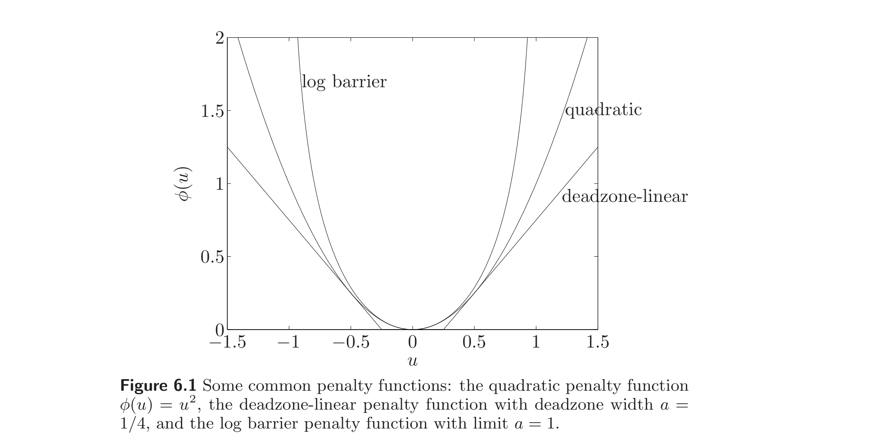
Example 6.1 Some common penalty functions and associated approximation problems.
- By taking $\phi(u) = |u|^p$, where $p \ge 1$, the penalty function approximation problem is equivalent to the $\ell_p$-norm approximation problem. In particular, the quadratic penalty function $\phi(u) = u^2$ yields least-squares or Euclidean norm approximation, and the absolute value penalty function $\phi(u) = |u|$ yields $\ell_1$-norm approximation.
- The deadzone-linear penalty function (with deadzone width $a > 0$) is given by $$ \phi(u) = \begin{cases} 0 & |u| \le a \\ |u| - a & |u| > a. \end{cases} $$ The deadzone-linear function assesses no penalty for residuals smaller than $a$.
- The log barrier penalty function (with limit $a > 0$) has the form $$ \phi(u) = \begin{cases} -a^2 \log(1 - (u/a)^2) & |u| < a \\ \infty & |u| \ge a. \end{cases} $$ The log barrier penalty function assesses an infinite penalty for residuals larger than $a$.
A deadzone-linear, log barrier, and quadratic penalty function are plotted in figure 6.1. Note that the log barrier function is very close to the quadratic penalty for $|u/a| \le 0.25$ (see exercise 6.1).
例 6.1 几种常见罚函数及关联的逼近问题。
- 取 $\phi(u) = |u|^p$（$p \ge 1$），罚函数逼近问题等价于 $\ell_p$-范数逼近问题。特别地，二次罚函数 $\phi(u) = u^2$ 给出最小二乘或欧氏范数逼近，绝对值罚函数 $\phi(u) = |u|$ 给出 $\ell_1$-范数逼近。
- 死区线性罚函数（死区宽度 $a > 0$）为 $$ \phi(u) = \begin{cases} 0 & |u| \le a \\ |u| - a & |u| > a, \end{cases} $$ 对小于 $a$ 的残差不施加惩罚。
- 对数障碍罚函数（界限 $a > 0$）为 $$ \phi(u) = \begin{cases} -a^2 \log(1 - (u/a)^2) & |u| < a \\ \infty & |u| \ge a, \end{cases} $$ 对大于 $a$ 的残差施加无穷惩罚。
死区线性、对数障碍和二次罚函数绘于图 6.1。注意对 $|u/a| \le 0.25$，对数障碍函数与二次罚很接近（见习题 6.1）。
Scaling the penalty function by a positive number does not affect the solution of the penalty function approximation problem, since this merely scales the objective function. But the shape of the penalty function has a large effect on the solution of the penalty function approximation problem. Roughly speaking, $\phi(u)$ is a measure of our dislike of a residual of value $u$. If $\phi$ is very small (or even zero) for small values of $u$, it means we care very little (or not at all) if residuals have these values. If $\phi(u)$ grows rapidly as $u$ becomes large, it means we have a strong dislike for large residuals; if $\phi$ becomes infinite outside some interval, it means that residuals outside the interval are unacceptable. This simple interpretation gives insight into the solution of a penalty function approximation problem, as well as guidelines for choosing a penalty function.
用正数缩放罚函数不影响罚函数逼近问题的解，因这只是缩放目标函数。但罚函数的形状对罚函数逼近问题的解有重大影响。粗略地说，$\phi(u)$ 度量我们对取值为 $u$ 的残差的厌恶程度。若 $\phi$ 在 $u$ 较小时很小（甚至为零），表示对这些取值的残差几乎不介意（或完全不介意）。若 $\phi(u)$ 随 $u$ 增大迅速增长，表示对大残差强烈厌恶；若 $\phi$ 在某区间外为无穷，表示该区间外的残差不可接受。这一简单解释有助于理解罚函数逼近问题的解，也为选择罚函数提供指导。
As an example, let us compare $\ell_1$-norm and $\ell_2$-norm approximation, associated with the penalty functions $\phi_1(u) = |u|$ and $\phi_2(u) = u^2$, respectively. For $|u| = 1$, the two penalty functions assign the same penalty. For small $u$ we have $\phi_1(u) \gg \phi_2(u)$, so $\ell_1$-norm approximation puts relatively larger emphasis on small residuals compared to $\ell_2$-norm approximation. For large $u$ we have $\phi_2(u) \gg \phi_1(u)$, so $\ell_1$-norm approximation puts less weight on large residuals, compared to $\ell_2$-norm approximation. This difference in relative weightings for small and large residuals is reflected in the solutions of the associated approximation problems. The amplitude distribution of the optimal residual for the $\ell_1$-norm approximation problem will tend to have more zero and very small residuals, compared to the $\ell_2$-norm approximation solution. In contrast, the $\ell_2$-norm solution will tend to have relatively fewer large residuals (since large residuals incur a much larger penalty in $\ell_2$-norm approximation than in $\ell_1$-norm approximation).
举例比较 $\ell_1$-范数与 $\ell_2$-范数逼近，分别对应罚函数 $\phi_1(u) = |u|$ 和 $\phi_2(u) = u^2$。当 $|u| = 1$ 时两罚函数赋同等惩罚。$u$ 较小时 $\phi_1(u) \gg \phi_2(u)$，故 $\ell_1$-范数逼近比 $\ell_2$-范数逼近对小残差赋予更大相对权重。$u$ 较大时 $\phi_2(u) \gg \phi_1(u)$，故 $\ell_1$-范数逼近比 $\ell_2$-范数逼近对大残差赋更小权重。这种对小残差和大残差相对加权的差异反映在相应逼近问题的解中。与 $\ell_2$-范数逼近解相比，$\ell_1$-范数逼近问题最优残差的幅值分布往往有更多零和极小残差。相反，$\ell_2$-范数解往往有较少的大残差（因大残差在 $\ell_2$-范数逼近中比在 $\ell_1$-范数逼近中受大得多的惩罚）。
Example
例子
An example will illustrate these ideas. We take a matrix $A \in \mathbb{R}^{100 \times 30}$ and vector $b \in \mathbb{R}^{100}$ (chosen at random, but the results are typical), and compute the $\ell_1$-norm and $\ell_2$-norm approximate solutions of $Ax \approx b$, as well as the penalty function approximations with a deadzone-linear penalty (with $a = 0.5$) and log barrier penalty (with $a = 1$). Figure 6.2 shows the four associated penalty functions, and the amplitude distributions of the optimal residuals for these four penalty approximations. From the plots of the penalty functions we note that
- The $\ell_1$-norm penalty puts the most weight on small residuals and the least weight on large residuals.
- The $\ell_2$-norm penalty puts very small weight on small residuals, but strong weight on large residuals.
- The deadzone-linear penalty function puts no weight on residuals smaller than $0.5$, and relatively little weight on large residuals.
- The log barrier penalty puts weight very much like the $\ell_2$-norm penalty for small residuals, but puts very strong weight on residuals larger than around $0.8$, and infinite weight on residuals larger than $1$.
Several features are clear from the amplitude distributions:
- For the $\ell_1$-optimal solution, many residuals are either zero or very small. The $\ell_1$-optimal solution also has relatively more large residuals.
下面用例子说明。取 $A \in \mathbb{R}^{100 \times 30}$ 和 $b \in \mathbb{R}^{100}$（随机选取，但结果典型），计算 $Ax \approx b$ 的 $\ell_1$-范数和 $\ell_2$-范数近似解，以及死区线性罚（$a = 0.5$）和对数障碍罚（$a = 1$）的罚函数逼近。图 6.2 给出四种关联罚函数及四种罚逼近最优残差的幅值分布。从罚函数图可见
- $\ell_1$-范数罚对小残差赋权最大，对大残差赋权最小。
- $\ell_2$-范数罚对小残差赋权很小，但对大残差赋强权。
- 死区线性罚函数对小于 $0.5$ 的残差不赋权，对大残差赋权相对较小。
- 对数障碍罚对小残差赋权与 $\ell_2$-范数罚相近，但对大于约 $0.8$ 的残差赋很强权，对大于 $1$ 的残差赋无穷权。
从幅值分布可清楚看出：
- 对 $\ell_1$-最优解，许多残差为零或极小。$\ell_1$-最优解也有相对更多的大残差。
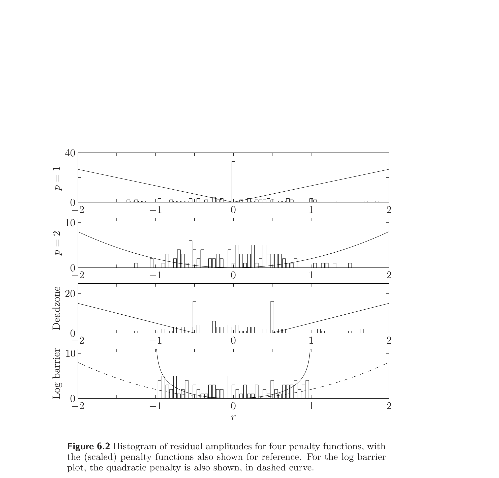
- The $\ell_2$-norm approximation has many modest residuals, and relatively few larger ones.
- For the deadzone-linear penalty, we see that many residuals have the value $\pm 0.5$, right at the edge of the 'free' zone, for which no penalty is assessed.
- For the log barrier penalty, we see that no residuals have a magnitude larger than $1$, but otherwise the residual distribution is similar to the residual distribution for $\ell_2$-norm approximation.
- $\ell_2$-范数逼近有许多中等残差，大残差相对较少。
- 对死区线性罚，可见许多残差取值 $\pm 0.5$，恰在"自由"区边缘，此处不施加惩罚。
- 对对数障碍罚，可见没有残差幅值超过 $1$，但其余残差分布与 $\ell_2$-范数逼近的残差分布相似。
Sensitivity to outliers or large errors
对离群点或大误差的敏感性
In the estimation or regression context, an outlier is a measurement $y_i = a_i^T x + v_i$ for which the noise $v_i$ is relatively large. This is often associated with faulty data or a flawed measurement. When outliers occur, any estimate of $x$ will be associated with a residual vector with some large components. Ideally we would like to guess which measurements are outliers, and either remove them from the estimation process or greatly lower their weight in forming the estimate. (We cannot, however, assign zero penalty for very large residuals, because then the optimal point would likely make all residuals large, which yields a total penalty of zero.) This could be accomplished using penalty function approximation, with a penalty function such as
$$ \phi(u) = \begin{cases} u^2 & |u| \le M \\ M^2 & |u| > M, \end{cases} \tag{6.3} $$
shown in figure 6.3. This penalty function agrees with least-squares for any residual smaller than $M$, but puts a fixed weight on any residual larger than $M$, no matter how much larger it is. In other words, residuals larger than $M$ are ignored; they are assumed to be associated with outliers or bad data. Unfortunately, the penalty function (6.3) is not convex, and the associated penalty function approximation problem becomes a hard combinatorial optimization problem.
在估计或回归语境中，离群点（outlier）是噪声 $v_i$ 相对较大的测量 $y_i = a_i^T x + v_i$，常与错误数据或有缺陷的测量相关。出现离群点时，$x$ 的任何估计都关联一个含若干大分量的残差向量。理想情况下我们希望猜出哪些测量是离群点，将其从估计过程中剔除或在形成估计时大幅降低其权重。（但不能对极大残差赋零惩罚，否则最优点可能使所有残差都变大，从而使总惩罚为零。）这可用如下罚函数的罚函数逼近实现
$$ \phi(u) = \begin{cases} u^2 & |u| \le M \\ M^2 & |u| > M, \end{cases} \tag{6.3} $$
如图 6.3 所示。该罚函数对小于 $M$ 的残差与最小二乘一致，但对大于 $M$ 的残差赋固定权，不论大多少。换言之，大于 $M$ 的残差被忽略，假定其与离群点或坏数据相关。可惜罚函数 (6.3) 非凸，关联的罚函数逼近问题成为困难的组合优化问题。
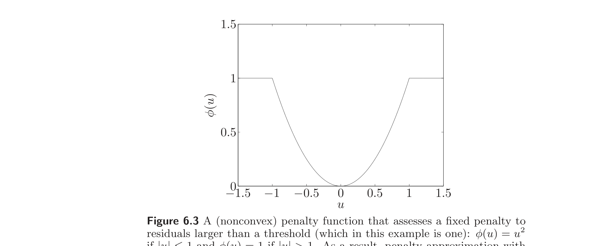
The sensitivity of a penalty function based estimation method to outliers depends on the (relative) value of the penalty function for large residuals. If we restrict ourselves to convex penalty functions (which result in convex optimization problems), the ones that are least sensitive are those for which $\phi(u)$ grows linearly, i.e., like $|u|$, for large $u$. Penalty functions with this property are sometimes called robust, since the associated penalty function approximation methods are much less sensitive to outliers or large errors than, for example, least-squares.
One obvious example of a robust penalty function is $\phi(u) = |u|$, corresponding to $\ell_1$-norm approximation. Another example is the robust least-squares or Huber penalty function, given by
$$ \phi_{\text{hub}}(u) = \begin{cases} u^2 & |u| \le M \\ M(2|u| - M) & |u| > M, \end{cases} \tag{6.4} $$
shown in figure 6.4. This penalty function agrees with the least-squares penalty function for residuals smaller than $M$, and then reverts to $\ell_1$-like linear growth for larger residuals. The Huber penalty function can be considered a convex approximation of the outlier penalty function (6.3), in the following sense: They agree for $|u| \le M$, and for $|u| > M$, the Huber penalty function is the convex function closest to the outlier penalty function (6.3).
基于罚函数的估计方法对离群点的敏感性，取决于罚函数对大残差的（相对）取值。若限于凸罚函数（从而得凸优化问题），最不敏感的是那些 $\phi(u)$ 对大 $u$ 线性增长（即如 $|u|$）的函数。具有此性质的罚函数有时称为鲁棒的，因其关联的罚函数逼近方法对离群点或大误差的敏感性远小于最小二乘等方法。
一个显然的鲁棒罚函数例子是 $\phi(u) = |u|$，对应 $\ell_1$-范数逼近。另一个例子是鲁棒最小二乘或 Huber 罚函数
$$ \phi_{\text{hub}}(u) = \begin{cases} u^2 & |u| \le M \\ M(2|u| - M) & |u| > M, \end{cases} \tag{6.4} $$
如图 6.4 所示。该罚函数对小于 $M$ 的残差与最小二乘罚函数一致，对更大残差转为 $\ell_1$ 式线性增长。Huber 罚函数可视为离群点罚函数 (6.3) 的凸逼近，含义如下：二者在 $|u| \le M$ 上一致，在 $|u| > M$ 上 Huber 罚函数是离群点罚函数 (6.3) 的最接近凸函数。
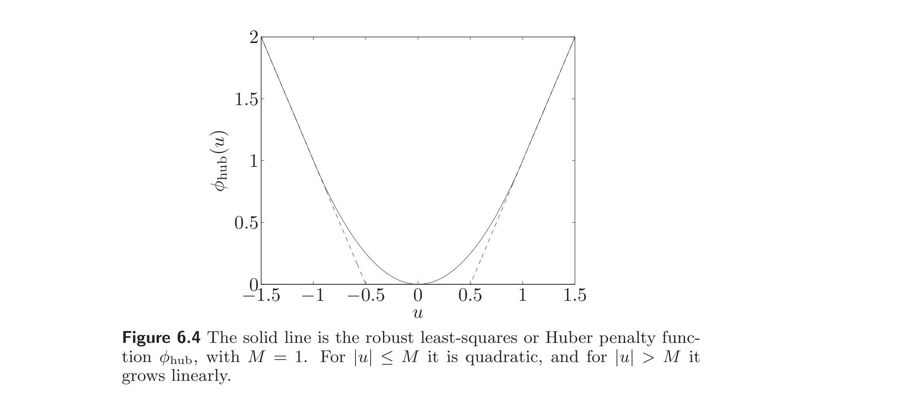
Example 6.2 Robust regression. Figure 6.5 shows 42 points $(t_i, y_i)$ in a plane, with two obvious outliers (one at the upper left, and one at lower right). The dashed line shows the least-squares approximation of the points by a straight line $f(t) = \alpha + \beta t$. The coefficients $\alpha$ and $\beta$ are obtained by solving the least-squares problem
$$ \text{minimize} \quad \sum_{i=1}^{42} (y_i - \alpha - \beta t_i)^2, $$
with variables $\alpha$ and $\beta$. The least-squares approximation is clearly rotated away from the main locus of the points, toward the two outliers.
The solid line shows the robust least-squares approximation, obtained by minimizing the Huber penalty function
$$ \text{minimize} \quad \sum_{i=1}^{42} \phi_{\text{hub}}(y_i - \alpha - \beta t_i), $$
with $M = 1$. This approximation is far less affected by the outliers.
Since $\ell_1$-norm approximation is among the (convex) penalty function approximation methods that are most robust to outliers, $\ell_1$-norm approximation is sometimes called robust estimation or robust regression. The robustness property of $\ell_1$-norm estimation can also be understood in a statistical framework; see page 353.
例 6.2 鲁棒回归。 图 6.5 显示平面上 42 个点 $(t_i, y_i)$，有两个明显离群点（左上一个、右下一个）。虚线为用直线 $f(t) = \alpha + \beta t$ 对这些点的最小二乘逼近。$\alpha$、$\beta$ 由求解最小二乘问题得到
$$ \text{minimize} \quad \sum_{i=1}^{42} (y_i - \alpha - \beta t_i)^2, $$
变量为 $\alpha$、$\beta$。最小二乘逼近明显偏离点的主轨迹，偏向两个离群点。
实线为鲁棒最小二乘逼近，通过极小化 Huber 罚函数得到
$$ \text{minimize} \quad \sum_{i=1}^{42} \phi_{\text{hub}}(y_i - \alpha - \beta t_i), $$
取 $M = 1$。该逼近受离群点影响小得多。
由于 $\ell_1$-范数逼近属于对离群点最鲁棒的（凸）罚函数逼近方法之一，$\ell_1$-范数逼近有时称为鲁棒估计或鲁棒回归。$\ell_1$-范数估计的鲁棒性也可在统计框架下理解；见第 353 页。
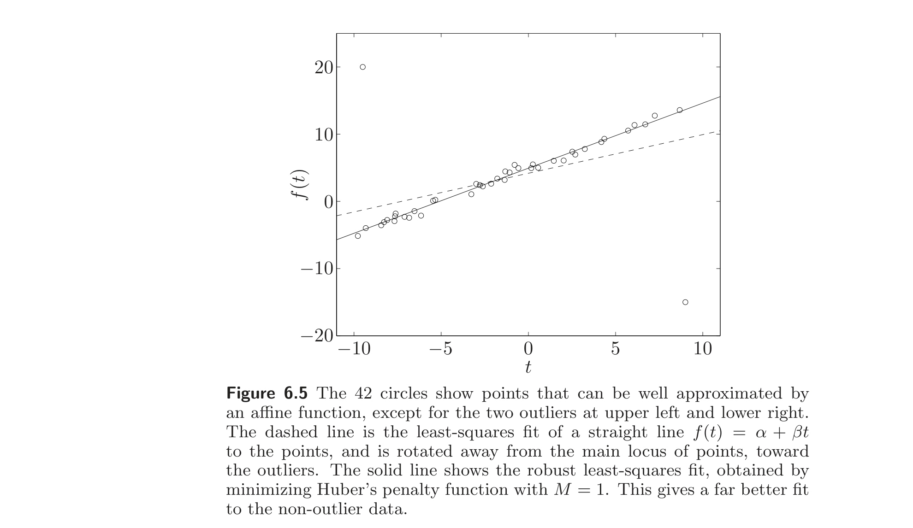
Small residuals and $\ell_1$-norm approximation
小残差与 $\ell_1$-范数逼近
We can also focus on small residuals. Least-squares approximation puts very small weight on small residuals, since $\phi(u) = u^2$ is very small when $u$ is small. Penalty functions such as the deadzone-linear penalty function put zero weight on small residuals. For penalty functions that are very small for small residuals, we expect the optimal residuals to be small, but not very small. Roughly speaking, there is little or no incentive to drive small residuals smaller.
In contrast, penalty functions that put relatively large weight on small residuals, such as $\phi(u) = |u|$, corresponding to $\ell_1$-norm approximation, tend to produce optimal residuals many of which are very small, or even exactly zero. This means that in $\ell_1$-norm approximation, we typically find that many of the equations are satisfied exactly, i.e., we have $a_i^T x = b_i$ for many $i$. This phenomenon can be seen in figure 6.2.
也可关注小残差。最小二乘逼近对小残差赋权很小，因 $u$ 小时 $\phi(u) = u^2$ 很小。死区线性罚等罚函数对小残差赋零权。对小残差很小的罚函数，预期最优残差小但不太小。粗略说，没有多少动力使小残差更小。
相反，对小残差赋相对大权的罚函数，如 $\ell_1$-范数逼近对应的 $\phi(u) = |u|$，往往产生许多极小甚至恰为零的最优残差。这意味着在 $\ell_1$-范数逼近中，通常许多方程被精确满足，即对许多 $i$ 有 $a_i^T x = b_i$。该现象见图 6.2。
6.1.3 Approximation with constraints
6.1.3 带约束的逼近
It is possible to add constraints to the basic norm approximation problem (6.1). When these constraints are convex, the resulting problem is convex. Constraints arise for a variety of reasons.
- In an approximation problem, constraints can be used to rule out certain unacceptable approximations of the vector $b$, or to ensure that the approximator $Ax$ satisfies certain properties.
- In an estimation problem, the constraints arise as prior knowledge of the vector $x$ to be estimated, or from prior knowledge of the estimation error $v$.
- Constraints arise in a geometric setting in determining the projection of a point $b$ on a set more complicated than a subspace, for example, a cone or polyhedron.
Some examples will make these clear.
可在基本范数逼近问题 (6.1) 上添加约束。当约束为凸时，所得问题为凸。约束有多种来源。
- 在逼近问题中，约束可用于排除对向量 $b$ 的某些不可接受逼近，或确保逼近量 $Ax$ 满足某些性质。
- 在估计问题中，约束源于待估向量 $x$ 的先验知识，或估计误差 $v$ 的先验知识。
- 在几何语境中，约束出现在求点 $b$ 到比子空间更复杂的集合（如锥或多面体）的投影时。
下面举例说明。
Nonnegativity constraints on variables
变量的非负约束
We can add the constraint $x \succeq 0$ to the basic norm approximation problem:
$$ \text{minimize} \quad \|Ax - b\| \quad \text{subject to} \quad x \succeq 0. $$
In an estimation setting, nonnegativity constraints arise when we estimate a vector $x$ of parameters known to be nonnegative, e.g., powers, intensities, or rates. The geometric interpretation is that we are determining the projection of a vector $b$ onto the cone generated by the columns of $A$. We can also interpret this problem as approximating $b$ using a nonnegative linear (i.e., conic) combination of the columns of $A$.
可在基本范数逼近问题上加约束 $x \succeq 0$：
$$ \text{minimize} \quad \|Ax - b\| \quad \text{subject to} \quad x \succeq 0. $$
在估计语境中，当估计已知非负的参数向量 $x$（如功率、强度或速率）时出现非负约束。几何解释为求向量 $b$ 到 $A$ 各列生成的锥的投影。该问题也可解释为用 $A$ 各列的非负线性（即锥）组合逼近 $b$。
Variable bounds
变量界约束
Here we add the constraint $l \preceq x \preceq u$, where $l, u \in \mathbb{R}^n$ are problem parameters:
$$ \text{minimize} \quad \|Ax - b\| \quad \text{subject to} \quad l \preceq x \preceq u. $$
In an estimation setting, variable bounds arise as prior knowledge of intervals in which each variable lies. The geometric interpretation is that we are determining the projection of a vector $b$ onto the image of a box under the linear mapping induced by $A$.
此处加约束 $l \preceq x \preceq u$，其中 $l, u \in \mathbb{R}^n$ 为问题参数：
$$ \text{minimize} \quad \|Ax - b\| \quad \text{subject to} \quad l \preceq x \preceq u. $$
在估计语境中，变量界约束源于各变量所在区间的先验知识。几何解释为求向量 $b$ 到 $A$ 诱导的线性映射下盒子像的投影。
Probability distribution
概率分布
We can impose the constraint that $x$ satisfy $x \succeq 0$, $\mathbf{1}^T x = 1$:
$$ \text{minimize} \quad \|Ax - b\| \quad \text{subject to} \quad x \succeq 0, \quad \mathbf{1}^T x = 1. $$
This would arise in the estimation of proportions or relative frequencies, which are nonnegative and sum to one. It can also be interpreted as approximating $b$ by a convex combination of the columns of $A$. (We will have much more to say about estimating probabilities in §7.2.)
可施加约束 $x \succeq 0$，$\mathbf{1}^T x = 1$：
$$ \text{minimize} \quad \|Ax - b\| \quad \text{subject to} \quad x \succeq 0, \quad \mathbf{1}^T x = 1. $$
这出现在估计比例或相对频率时，它们非负且和为 1。也可解释为用 $A$ 各列的凸组合逼近 $b$。（关于概率估计，§7.2 有更多讨论。）
Norm ball constraint
范数球约束
We can add to the basic norm approximation problem the constraint that $x$ lie in a norm ball:
$$ \text{minimize} \quad \|Ax - b\| \quad \text{subject to} \quad \|x - x_0\| \le d, $$
where $x_0$ and $d$ are problem parameters. Such a constraint can be added for several reasons.
- In an estimation setting, $x_0$ is a prior guess of what the parameter $x$ is, and $d$ is the maximum plausible deviation of our estimate from our prior guess. Our estimate of the parameter $x$ is the value $\hat{x}$ which best matches the measured data (i.e., minimizes $\|Az - b\|$) among all plausible candidates (i.e., $z$ that satisfy $\|z - x_0\| \le d$).
- The constraint $\|x - x_0\| \le d$ can denote a trust region. Here the linear relation $y = Ax$ is only an approximation of some nonlinear relation $y = f(x)$ that is valid when $x$ is near some point $x_0$, specifically $\|x - x_0\| \le d$. The problem is to minimize $\|Ax - b\|$ but only over those $x$ for which the model $y = Ax$ is trusted.
These ideas also come up in the context of regularization; see §6.3.2.
可在基本范数逼近问题上加 $x$ 位于范数球内的约束：
$$ \text{minimize} \quad \|Ax - b\| \quad \text{subject to} \quad \|x - x_0\| \le d, $$
其中 $x_0$、$d$ 为问题参数。该约束可因若干原因加入。
- 在估计语境中，$x_0$ 是对参数 $x$ 的先验猜测，$d$ 是估计偏离先验猜测的最大合理偏差。参数 $x$ 的估计为在所有合理候选（即满足 $\|z - x_0\| \le d$ 的 $z$）中与测量数据最匹配（即极小化 $\|Az - b\|$）的值 $\hat{x}$。
- 约束 $\|x - x_0\| \le d$ 可表示信任域。此处线性关系 $y = Ax$ 仅是某非线性关系 $y = f(x)$ 的逼近，仅在 $x$ 接近某点 $x_0$（具体即 $\|x - x_0\| \le d$）时有效。问题是仅在模型 $y = Ax$ 可信的 $x$ 上极小化 $\|Ax - b\|$。
这些思想也在正则化语境中出现；见 §6.3.2。
6.2 Least-norm problems
6.2 最小范数问题
The basic least-norm problem has the form
$$ \text{minimize} \quad \|x\| \quad \text{subject to} \quad Ax = b \tag{6.5} $$
where the data are $A \in \mathbb{R}^{m \times n}$ and $b \in \mathbb{R}^m$, the variable is $x \in \mathbb{R}^n$, and $\|\cdot\|$ is a norm on $\mathbb{R}^n$. A solution of the problem, which always exists if the linear equations $Ax = b$ have a solution, is called a least-norm solution of $Ax = b$. The least-norm problem is, of course, a convex optimization problem.
We can assume without loss of generality that the rows of $A$ are independent, so $m \le n$. When $m = n$, the only feasible point is $x = A^{-1}b$; the least-norm problem is interesting only when $m < n$, i.e., when the equation $Ax = b$ is underdetermined.
基本最小范数问题形式为
$$ \text{minimize} \quad \|x\| \quad \text{subject to} \quad Ax = b \tag{6.5} $$
其中数据为 $A \in \mathbb{R}^{m \times n}$ 和 $b \in \mathbb{R}^m$，变量为 $x \in \mathbb{R}^n$，$\|\cdot\|$ 为 $\mathbb{R}^n$ 上的范数。当线性方程 $Ax = b$ 有解时，问题总有解，称为 $Ax = b$ 的最小范数解。最小范数问题当然是凸优化问题。
不妨设 $A$ 的行独立，故 $m \le n$。当 $m = n$ 时唯一可行点为 $x = A^{-1}b$；最小范数问题仅在 $m < n$（即方程 $Ax = b$ 欠定）时才有意义。
Reformulation as norm approximation problem
改写为范数逼近问题
The least-norm problem (6.5) can be formulated as a norm approximation problem by eliminating the equality constraint. Let $x_0$ be any solution of $Ax = b$, and let $Z \in \mathbb{R}^{n \times k}$ be a matrix whose columns are a basis for the nullspace of $A$. The general solution of $Ax = b$ can then be expressed as $x_0 + Zu$ where $u \in \mathbb{R}^k$. The least-norm problem (6.5) can be expressed as
$$ \text{minimize} \quad \|x_0 + Zu\|, $$
with variable $u \in \mathbb{R}^k$, which is a norm approximation problem. In particular, our analysis and discussion of norm approximation problems applies to least-norm problems as well (when interpreted correctly).
最小范数问题 (6.5) 可通过消去等式约束化为范数逼近问题。设 $x_0$ 为 $Ax = b$ 的任一解，$Z \in \mathbb{R}^{n \times k}$ 为以 $A$ 的零空间基为列的矩阵。$Ax = b$ 的通解可表为 $x_0 + Zu$（$u \in \mathbb{R}^k$）。最小范数问题 (6.5) 可表为
$$ \text{minimize} \quad \|x_0 + Zu\|, $$
变量为 $u \in \mathbb{R}^k$，这是一个范数逼近问题。特别地，我们对范数逼近问题的分析和讨论（经适当解释）也适用于最小范数问题。
Control or design interpretation
控制或设计解释
We can interpret the least-norm problem (6.5) as a problem of optimal design or optimal control. The $n$ variables $x_1, \ldots, x_n$ are design variables whose values are to be determined. In a control setting, the variables $x_1, \ldots, x_n$ represent inputs, whose values we are to choose. The vector $y = Ax$ gives $m$ attributes or results of the design $x$, which we assume to be linear functions of the design variables $x$. The $m < n$ equations $Ax = b$ represent $m$ specifications or requirements on the design. Since $m < n$, the design is underspecified; there are $n - m$ degrees of freedom in the design (assuming $A$ is rank $m$).
Among all the designs that satisfy the specifications, the least-norm problem chooses the smallest design, as measured by the norm $\|\cdot\|$. This can be thought of as the most efficient design, in the sense that it achieves the specifications $Ax = b$, with the smallest possible $x$.
最小范数问题 (6.5) 可解释为最优设计或最优控制问题。$n$ 个变量 $x_1, \ldots, x_n$ 是待定设计变量。在控制语境中，$x_1, \ldots, x_n$ 表示输入，需选择其值。向量 $y = Ax$ 给出设计 $x$ 的 $m$ 个属性或结果，假定为设计变量 $x$ 的线性函数。$m < n$ 个方程 $Ax = b$ 表示对设计的 $m$ 个规格或要求。由于 $m < n$，设计欠定；设计有 $n - m$ 个自由度（设 $A$ 秩为 $m$）。
在所有满足规格的设计中，最小范数问题选择以范数 $\|\cdot\|$ 衡量最小的设计。可视为最高效的设计，即以最小的 $x$ 达到规格 $Ax = b$。
Estimation interpretation
估计解释
We assume that $x$ is a vector of parameters to be estimated. We have $m < n$ perfect (noise free) linear measurements, given by $Ax = b$. Since we have fewer measurements than parameters to estimate, our measurements do not completely determine $x$. Any parameter vector $x$ that satisfies $Ax = b$ is consistent with our measurements.
To make a good guess about what $x$ is, without taking further measurements, we must use prior information. Suppose our prior information, or assumption, is that $x$ is more likely to be small (as measured by $\|\cdot\|$) than large. The least-norm problem chooses as our estimate of the parameter vector $x$ the one that is smallest (hence, most plausible) among all parameter vectors that are consistent with the measurements $Ax = b$. (For a statistical interpretation of the least-norm problem, see page 359.)
设 $x$ 为待估参数向量。我们有 $m < n$ 个完美（无噪）线性测量 $Ax = b$。由于测量数少于待估参数数，测量不能完全确定 $x$。任何满足 $Ax = b$ 的参数向量 $x$ 都与测量一致。
为在不再测量的情况下合理猜测 $x$，须利用先验信息。设先验信息或假设为 $x$ 更可能小（以 $\|\cdot\|$ 衡量）而非大。最小范数问题在所有与测量 $Ax = b$ 一致的参数向量中选择最小（从而最可信）的作为参数向量 $x$ 的估计。（最小范数问题的统计解释见第 359 页。）
Geometric interpretation
几何解释
We can also give a simple geometric interpretation of the least-norm problem (6.5). The feasible set $\{x \mid Ax = b\}$ is affine, and the objective is the distance (measured by the norm $\|\cdot\|$) between $x$ and the point $0$. The least-norm problem finds the point in the affine set with minimum distance to $0$, i.e., it determines the projection of the point $0$ on the affine set $\{x \mid Ax = b\}$.
最小范数问题 (6.5) 也有简单几何解释。可行集 $\{x \mid Ax = b\}$ 是仿射的，目标是 $x$ 与点 $0$ 之间的距离（以范数 $\|\cdot\|$ 衡量）。最小范数问题求仿射集中到 $0$ 距离最小的点，即确定点 $0$ 在仿射集 $\{x \mid Ax = b\}$ 上的投影。
Least-squares solution of linear equations
线性方程的最小二乘解
The most common least-norm problem involves the Euclidean or $\ell_2$-norm. By squaring the objective we obtain the equivalent problem
$$ \text{minimize} \quad \|x\|_2^2 \quad \text{subject to} \quad Ax = b, $$
the unique solution of which is called the least-squares solution of the equations $Ax = b$. Like the least-squares approximation problem, this problem can be solved analytically. Introducing the dual variable $\nu \in \mathbb{R}^m$, the optimality conditions are
$$ 2x^\star + A^T \nu^\star = 0, \quad Ax^\star = b, $$
which is a pair of linear equations, and readily solved. From the first equation we obtain $x^\star = -(1/2)A^T \nu^\star$; substituting this into the second equation we obtain $-(1/2)AA^T \nu^\star = b$, and conclude
$$ \nu^\star = -2(AA^T)^{-1}b, \quad x^\star = A^T (AA^T)^{-1}b. $$
(Since $\mathbf{rank}\, A = m < n$, the matrix $AA^T$ is invertible.)
最常见的最小范数问题采用欧氏范数或 $\ell_2$-范数。将目标平方得等价问题
$$ \text{minimize} \quad \|x\|_2^2 \quad \text{subject to} \quad Ax = b, $$
其唯一解称为方程 $Ax = b$ 的最小二乘解。与最小二乘逼近问题一样，该问题可解析求解。引入对偶变量 $\nu \in \mathbb{R}^m$，最优性条件为
$$ 2x^\star + A^T \nu^\star = 0, \quad Ax^\star = b, $$
这是一对线性方程，易于求解。由第一式得 $x^\star = -(1/2)A^T \nu^\star$；代入第二式得 $-(1/2)AA^T \nu^\star = b$，故
$$ \nu^\star = -2(AA^T)^{-1}b, \quad x^\star = A^T (AA^T)^{-1}b. $$
（因 $\mathbf{rank}\, A = m < n$，矩阵 $AA^T$ 可逆。）
Least-penalty problems
最小惩罚问题
A useful variation on the least-norm problem (6.5) is the least-penalty problem
$$ \text{minimize} \quad \phi(x_1) + \cdots + \phi(x_n) \quad \text{subject to} \quad Ax = b, \tag{6.6} $$
where $\phi : \mathbb{R} \to \mathbb{R}$ is convex, nonnegative, and satisfies $\phi(0) = 0$. The penalty function value $\phi(u)$ quantifies our dislike of a component of $x$ having value $u$; the least-penalty problem then finds $x$ that has least total penalty, subject to the constraint $Ax = b$.
All of the discussion and interpretation of penalty functions in penalty function approximation can be transposed to the least-penalty problem, by substituting the amplitude distribution of $x$ (in the least-penalty problem) for the amplitude distribution of the residual $r$ (in the penalty approximation problem).
最小范数问题 (6.5) 的一种有用变体是最小惩罚问题
$$ \text{minimize} \quad \phi(x_1) + \cdots + \phi(x_n) \quad \text{subject to} \quad Ax = b, \tag{6.6} $$
其中 $\phi : \mathbb{R} \to \mathbb{R}$ 凸、非负且 $\phi(0) = 0$。罚函数值 $\phi(u)$ 量化对 $x$ 的某分量取值 $u$ 的厌恶；最小惩罚问题在约束 $Ax = b$ 下求总惩罚最小的 $x$。
罚函数逼近中关于罚函数的全部讨论和解释都可转用于最小惩罚问题，只需把（最小惩罚问题中的）$x$ 的幅值分布替换（罚逼近问题中的）残差 $r$ 的幅值分布即可。
Sparse solutions via least $\ell_1$-norm
通过最小 $\ell_1$-范数得到稀疏解
Recall from the discussion on page 300 that $\ell_1$-norm approximation gives relatively large weight to small residuals, and therefore results in many optimal residuals small, or even zero. A similar effect occurs in the least-norm context. The least $\ell_1$-norm problem,
$$ \text{minimize} \quad \|x\|_1 \quad \text{subject to} \quad Ax = b, $$
tends to produce a solution $x$ with a large number of components equal to zero. In other words, the least $\ell_1$-norm problem tends to produce sparse solutions of $Ax = b$, often with $m$ nonzero components.
It is easy to find solutions of $Ax = b$ that have only $m$ nonzero components. Choose any set of $m$ indices (out of $1, \ldots, n$) which are to be the nonzero components of $x$. The equation $Ax = b$ reduces to $\tilde{A}\tilde{x} = b$, where $\tilde{A}$ is the $m \times m$ submatrix of $A$ obtained by selecting only the chosen columns, and $\tilde{x} \in \mathbb{R}^m$ is the subvector of $x$ containing the $m$ selected components. If $\tilde{A}$ is nonsingular, then we can take $\tilde{x} = \tilde{A}^{-1}b$, which gives a feasible solution $x$ with $m$ or less nonzero components. If $\tilde{A}$ is singular and $b \notin \mathcal{R}(\tilde{A})$, the equation $\tilde{A}\tilde{x} = b$ is unsolvable, which means there is no feasible $x$ with the chosen set of nonzero components. If $\tilde{A}$ is singular and $b \in \mathcal{R}(\tilde{A})$, there is a feasible solution with fewer than $m$ nonzero components.
This approach can be used to find the smallest $x$ with $m$ (or fewer) nonzero entries, but in general requires examining and comparing all $n!/(m!(n-m)!)$ choices of $m$ nonzero coefficients of the $n$ coefficients in $x$. Solving the least $\ell_1$-norm problem, on the other hand, gives a good heuristic for finding a sparse, and small, solution of $Ax = b$.
回顾第 300 页的讨论，$\ell_1$-范数逼近对小残差赋较大权，故使许多最优残差很小甚至为零。最小范数语境中有类似效应。最小 $\ell_1$-范数问题
$$ \text{minimize} \quad \|x\|_1 \quad \text{subject to} \quad Ax = b, $$
倾向于产生大量分量为零的解 $x$。换言之，最小 $\ell_1$-范数问题倾向于产生 $Ax = b$ 的稀疏解，通常有 $m$ 个非零分量。
求仅有 $m$ 个非零分量的 $Ax = b$ 的解很容易。任选 $m$ 个下标（从 $1, \ldots, n$ 中）作为 $x$ 的非零分量。方程 $Ax = b$ 化为 $\tilde{A}\tilde{x} = b$，其中 $\tilde{A}$ 为 $A$ 取所选列得到的 $m \times m$ 子矩阵，$\tilde{x} \in \mathbb{R}^m$ 为 $x$ 含所选 $m$ 个分量的子向量。若 $\tilde{A}$ 非奇异，取 $\tilde{x} = \tilde{A}^{-1}b$ 即得有 $m$ 个或更少非零分量的可行解 $x$。若 $\tilde{A}$ 奇异且 $b \notin \mathcal{R}(\tilde{A})$，方程 $\tilde{A}\tilde{x} = b$ 不可解，即不存在具有所选非零分量集合的可行 $x$。若 $\tilde{A}$ 奇异且 $b \in \mathcal{R}(\tilde{A})$，则存在非零分量少于 $m$ 的可行解。
此法可用于求有 $m$ 个（或更少）非零分量的最小 $x$，但一般需考察比较 $x$ 的 $n$ 个系数中 $m$ 个非零系数的所有 $n!/(m!(n-m)!)$ 种选择。而求解最小 $\ell_1$-范数问题则给出寻找 $Ax = b$ 稀疏且小的解的良好启发式。
6.3 Regularized approximation
6.3 正则化逼近
6.3.1 Bi-criterion formulation
6.3.1 双准则表述
In the basic form of regularized approximation, the goal is to find a vector $x$ that is small (if possible), and also makes the residual $Ax - b$ small. This is naturally described as a (convex) vector optimization problem with two objectives, $\|Ax - b\|$ and $\|x\|$:
$$ \text{minimize (w.r.t. } \mathbb{R}^2_+\text{)} \quad (\|Ax - b\|, \|x\|). \tag{6.7} $$
The two norms can be different: the first, used to measure the size of the residual, is on $\mathbb{R}^m$; the second, used to measure the size of $x$, is on $\mathbb{R}^n$.
The optimal trade-off between the two objectives can be found using several methods. The optimal trade-off curve of $\|Ax - b\|$ versus $\|x\|$, which shows how large one of the objectives must be made to have the other one small, can then be plotted. One endpoint of the optimal trade-off curve between $\|Ax - b\|$ and $\|x\|$ is easy to describe. The minimum value of $\|x\|$ is zero, and is achieved only when $x = 0$. For this value of $x$, the residual norm has the value $\|b\|$.
The other endpoint of the trade-off curve is more complicated to describe. Let $C$ denote the set of minimizers of $\|Ax - b\|$ (with no constraint on $\|x\|$). Then any minimum norm point in $C$ is Pareto optimal, corresponding to the other endpoint of the trade-off curve. In other words, Pareto optimal points at this endpoint are given by minimum norm minimizers of $\|Ax - b\|$. If both norms are Euclidean, this Pareto optimal point is unique, and given by $x = A^\dagger b$, where $A^\dagger$ is the pseudo-inverse of $A$. (See §4.7.6, page 184, and §A.5.4.)
在正则化逼近的基本形式中，目标是找（尽可能）小的向量 $x$，同时使残差 $Ax - b$ 也小。这自然描述为以 $\|Ax - b\|$ 和 $\|x\|$ 为两个目标的（凸）向量优化问题：
$$ \text{minimize (w.r.t. } \mathbb{R}^2_+\text{)} \quad (\|Ax - b\|, \|x\|). \tag{6.7} $$
两个范数可不同：用于度量残差大小的第一个在 $\mathbb{R}^m$ 上；用于度量 $x$ 大小的第二个在 $\mathbb{R}^n$ 上。
两目标间的最优折中可用多种方法求得。可绘制 $\|Ax - b\|$ 对 $\|x\|$ 的最优折中曲线，它显示为使一个目标小须把另一个目标做到多大。$\|Ax - b\|$ 与 $\|x\|$ 之间最优折中曲线的一个端点易于描述：$\|x\|$ 的最小值为零，且仅当 $x = 0$ 时达到；对此 $x$，残差范数为 $\|b\|$。
折中曲线的另一端点描述更复杂。设 $C$ 为 $\|Ax - b\|$（无 $\|x\|$ 约束）的极小化子集合。则 $C$ 中任一最小范数点都是 Pareto 最优的，对应折中曲线另一端点。换言之，该端点处的 Pareto 最优点由 $\|Ax - b\|$ 的最小范数极小化子给出。若两范数皆为欧氏，该 Pareto 最优点唯一，为 $x = A^\dagger b$，其中 $A^\dagger$ 为 $A$ 的伪逆。（见 §4.7.6 第 184 页及 §A.5.4。）
6.3.2 Regularization
6.3.2 正则化
Regularization is a common scalarization method used to solve the bi-criterion problem (6.7). One form of regularization is to minimize the weighted sum of the objectives:
$$ \text{minimize} \quad \|Ax - b\| + \gamma\|x\|, \tag{6.8} $$
where $\gamma > 0$ is a problem parameter. As $\gamma$ varies over $(0, \infty)$, the solution of (6.8) traces out the optimal trade-off curve.
Another common method of regularization, especially when the Euclidean norm is used, is to minimize the weighted sum of squared norms, i.e.,
$$ \text{minimize} \quad \|Ax - b\|_2^2 + \delta\|x\|_2^2, \tag{6.9} $$
for a variety of values of $\delta > 0$.
These regularized approximation problems each solve the bi-criterion problem of making both $\|Ax - b\|$ and $\|x\|$ small, by adding an extra term or penalty associated with the norm of $x$.
正则化是求解双准则问题 (6.7) 的常用标量化方法。一种正则化形式是极小化目标的加权和：
$$ \text{minimize} \quad \|Ax - b\| + \gamma\|x\|, \tag{6.8} $$
其中 $\gamma > 0$ 为问题参数。当 $\gamma$ 遍取 $(0, \infty)$ 时，(6.8) 的解描出最优折中曲线。
另一种常用正则化方法（尤其在采用欧氏范数时）是极小化平方范数的加权和，即
$$ \text{minimize} \quad \|Ax - b\|_2^2 + \delta\|x\|_2^2, \tag{6.9} $$
对多种 $\delta > 0$ 的值。
这些正则化逼近问题都通过添加与 $x$ 的范数关联的额外项或惩罚，求解使 $\|Ax - b\|$ 和 $\|x\|$ 都小的双准则问题。
Interpretations
解释
Regularization is used in several contexts. In an estimation setting, the extra term penalizing large $\|x\|$ can be interpreted as our prior knowledge that $\|x\|$ is not too large. In an optimal design setting, the extra term adds the cost of using large values of the design variables to the cost of missing the target specifications.
The constraint that $\|x\|$ be small can also reflect a modeling issue. It might be, for example, that $y = Ax$ is only a good approximation of the true relationship $y = f(x)$ between $x$ and $y$. In order to have $f(x) \approx b$, we want $Ax \approx b$, and also need $x$ small in order to ensure that $f(x) \approx Ax$.
We will see in §6.4.1 and §6.4.2 that regularization can be used to take into account variation in the matrix $A$. Roughly speaking, a large $x$ is one for which variation in $A$ causes large variation in $Ax$, and hence should be avoided.
Regularization is also used when the matrix $A$ is square, and the goal is to solve the linear equations $Ax = b$. In cases where $A$ is poorly conditioned, or even singular, regularization gives a compromise between solving the equations (i.e., making $\|Ax - b\|$ zero) and keeping $x$ of reasonable size.
Regularization comes up in a statistical setting; see §7.1.2.
正则化用于多种语境。在估计语境中，惩罚大 $\|x\|$ 的额外项可解释为 $\|x\|$ 不太大的先验知识。在最优设计语境中，该额外项将使用大设计变量值的成本加到偏离目标规格的成本上。
要求 $\|x\|$ 小也可反映建模问题。例如可能 $y = Ax$ 只是 $x$ 与 $y$ 之间真实关系 $y = f(x)$ 的良好逼近。为使 $f(x) \approx b$，我们希望 $Ax \approx b$，且需 $x$ 小以保证 $f(x) \approx Ax$。
在 §6.4.1 和 §6.4.2 将看到，正则化可用于考虑矩阵 $A$ 的变化。粗略说，大的 $x$ 使 $A$ 的变化引起 $Ax$ 的大的变化，故应避免。
当 $A$ 为方阵且目标是解线性方程 $Ax = b$ 时也用正则化。当 $A$ 病态甚至奇异时，正则化在解方程（即使 $\|Ax - b\|$ 为零）与保持 $x$ 合理大小之间给出折中。
正则化也出现在统计语境；见 §7.1.2。
Tikhonov regularization
Tikhonov 正则化
The most common form of regularization is based on (6.9), with Euclidean norms, which results in a (convex) quadratic optimization problem:
$$ \text{minimize} \quad \|Ax - b\|_2^2 + \delta\|x\|_2^2 = x^T(A^T A + \delta I)x - 2b^T A x + b^T b. \tag{6.10} $$
This Tikhonov regularization problem has the analytical solution
$$ x = (A^T A + \delta I)^{-1} A^T b. $$
Since $A^T A + \delta I \succ 0$ for any $\delta > 0$, the Tikhonov regularized least-squares solution requires no rank (or dimension) assumptions on the matrix $A$.
最常见的正则化基于 (6.9)，采用欧氏范数，得（凸）二次优化问题：
$$ \text{minimize} \quad \|Ax - b\|_2^2 + \delta\|x\|_2^2 = x^T(A^T A + \delta I)x - 2b^T A x + b^T b. \tag{6.10} $$
该 Tikhonov 正则化问题有解析解
$$ x = (A^T A + \delta I)^{-1} A^T b. $$
由于对任意 $\delta > 0$ 有 $A^T A + \delta I \succ 0$，Tikhonov 正则化最小二乘解不要求矩阵 $A$ 的秩（或维数）假设。
Smoothing regularization
光滑化正则化
The idea of regularization, i.e., adding to the objective a term that penalizes large $x$, can be extended in several ways. In one useful extension we add a regularization term of the form $\|Dx\|$, in place of $\|x\|$. In many applications, the matrix $D$ represents an approximate differentiation or second-order differentiation operator, so $\|Dx\|$ represents a measure of the variation or smoothness of $x$.
For example, suppose that the vector $x \in \mathbb{R}^n$ represents the value of some continuous physical parameter, say, temperature, along the interval $[0, 1]$: $x_i$ is the temperature at the point $i/n$. A simple approximation of the gradient or first derivative of the parameter near $i/n$ is given by $n(x_{i+1} - x_i)$, and a simple approximation of its second derivative is given by the second difference
$$ n\,(n(x_{i+1} - x_i) - n(x_i - x_{i-1})) = n^2(x_{i+1} - 2x_i + x_{i-1}). $$
If $\Delta$ is the (tridiagonal, Toeplitz) matrix
$$ \Delta = n^2 \begin{bmatrix} 1 & -2 & 1 & 0 & \cdots & 0 & 0 & 0 \\ 0 & 1 & -2 & 1 & \cdots & 0 & 0 & 0 \\ 0 & 0 & 1 & -2 & \cdots & 0 & 0 & 0 \\ \vdots & & & & \ddots & & & \vdots \\ 0 & 0 & 0 & 0 & \cdots & -2 & 1 & 0 \\ 0 & 0 & 0 & 0 & \cdots & 1 & -2 & 1 \end{bmatrix} \in \mathbb{R}^{(n-2)\times n}, $$
then $\Delta x$ represents an approximation of the second derivative of the parameter, so $\|\Delta x\|_2^2$ represents a measure of the mean-square curvature of the parameter over the interval $[0, 1]$.
The Tikhonov regularized problem
$$ \text{minimize} \quad \|Ax - b\|_2^2 + \delta\|\Delta x\|_2^2 $$
can be used to trade off the objective $\|Ax - b\|_2$, which might represent a measure of fit, or consistency with experimental data, and the objective $\|\Delta x\|_2$, which is (approximately) the mean-square curvature of the underlying physical parameter. The parameter $\delta$ is used to control the amount of regularization required, or to plot the optimal trade-off curve of fit versus smoothness.
We can also add several regularization terms. For example, we can add terms associated with smoothness and size, as in
$$ \text{minimize} \quad \|Ax - b\|_2^2 + \delta\|\Delta x\|_2^2 + \eta\|x\|_2^2. $$
Here, the parameter $\delta \ge 0$ is used to control the smoothness of the approximate solution, and the parameter $\eta \ge 0$ is used to control its size.
正则化思想——即向目标添加惩罚大 $x$ 的项——可多种推广。一种有用推广是添加形如 $\|Dx\|$ 的正则化项以代替 $\|x\|$。许多应用中，矩阵 $D$ 表示近似一阶或二阶微分算子，故 $\|Dx\|$ 度量 $x$ 的变化或光滑程度。
例如设向量 $x \in \mathbb{R}^n$ 表示某连续物理参数（如温度）沿区间 $[0,1]$ 的取值：$x_i$ 为点 $i/n$ 处的温度。参数在 $i/n$ 附近梯度或一阶导数的简单逼近由 $n(x_{i+1} - x_i)$ 给出，二阶导数的简单逼近由二阶差分
$$ n\,(n(x_{i+1} - x_i) - n(x_i - x_{i-1})) = n^2(x_{i+1} - 2x_i + x_{i-1}) $$
给出。若 $\Delta$ 为（三对角 Toeplitz）矩阵
$$ \Delta = n^2 \begin{bmatrix} 1 & -2 & 1 & 0 & \cdots & 0 & 0 & 0 \\ 0 & 1 & -2 & 1 & \cdots & 0 & 0 & 0 \\ 0 & 0 & 1 & -2 & \cdots & 0 & 0 & 0 \\ \vdots & & & & \ddots & & & \vdots \\ 0 & 0 & 0 & 0 & \cdots & -2 & 1 & 0 \\ 0 & 0 & 0 & 0 & \cdots & 1 & -2 & 1 \end{bmatrix} \in \mathbb{R}^{(n-2)\times n}, $$
则 $\Delta x$ 表示参数二阶导数的逼近，故 $\|\Delta x\|_2^2$ 度量参数在区间 $[0,1]$ 上的均方曲率。
Tikhonov 正则化问题
$$ \text{minimize} \quad \|Ax - b\|_2^2 + \delta\|\Delta x\|_2^2 $$
可用于折中目标 $\|Ax - b\|_2$（可能表示拟合度或与实验数据的一致性）与目标 $\|\Delta x\|_2$（近似为底层物理参数的均方曲率）。参数 $\delta$ 用于控制所需正则化量，或绘制拟合与光滑性之间的最优折中曲线。
也可添加多个正则化项。例如可同时添加与光滑性和大小关联的项，如
$$ \text{minimize} \quad \|Ax - b\|_2^2 + \delta\|\Delta x\|_2^2 + \eta\|x\|_2^2. $$
此处参数 $\delta \ge 0$ 控制逼近解的光滑性，参数 $\eta \ge 0$ 控制其大小。
Example 6.3 Optimal input design. We consider a dynamical system with scalar input sequence $u(0), u(1), \ldots, u(N)$, and scalar output sequence $y(0), y(1), \ldots, y(N)$, related by convolution:
$$ y(t) = \sum_{\tau=0}^{t} h(\tau) u(t - \tau), \quad t = 0, 1, \ldots, N. $$
The sequence $h(0), h(1), \ldots, h(N)$ is called the convolution kernel or impulse response of the system.
Our goal is to choose the input sequence $u$ to achieve several goals.
- Output tracking. The primary goal is that the output $y$ should track, or follow, a desired target or reference signal $y_{\text{des}}$. We measure output tracking error by the quadratic function $$ J_{\text{track}} = \frac{1}{N+1} \sum_{t=0}^{N} (y(t) - y_{\text{des}}(t))^2. $$
- Small input. The input should not be large. We measure the magnitude of the input by the quadratic function $$ J_{\text{mag}} = \frac{1}{N+1} \sum_{t=0}^{N} u(t)^2. $$
- Small input variations. The input should not vary rapidly. We measure the magnitude of the input variations by the quadratic function $$ J_{\text{der}} = \frac{1}{N} \sum_{t=0}^{N-1} (u(t+1) - u(t))^2. $$
By minimizing a weighted sum
$$ J_{\text{track}} + \delta J_{\text{der}} + \eta J_{\text{mag}}, $$
where $\delta > 0$ and $\eta > 0$, we can trade off the three objectives.
Now we consider a specific example, with $N = 200$, and impulse response
$$ h(t) = \frac{1}{9}(0.9)^t(1 - 0.4 \cos(2t)). $$
Figure 6.6 shows the optimal input, and corresponding output (along with the desired trajectory $y_{\text{des}}$), for three values of the regularization parameters $\delta$ and $\eta$. The top row shows the optimal input and corresponding output for $\delta = 0$, $\eta = 0.005$. In this case we have some regularization for the magnitude of the input, but no regularization for its variation. While the tracking is good (i.e., we have $J_{\text{track}}$ is small), the input required is large, and rapidly varying. The second row corresponds to $\delta = 0$, $\eta = 0.05$. In this case we have more magnitude regularization, but still no regularization for variation in $u$. The corresponding input is indeed smaller, at the cost of a larger tracking error. The bottom row shows the results for $\delta = 0.3$, $\eta = 0.05$. In this case we have added some regularization for the variation. The input variation is substantially reduced, with not much increase in output tracking error.
例 6.3 最优输入设计。 考虑一个动态系统，有标量输入序列 $u(0), u(1), \ldots, u(N)$ 和标量输出序列 $y(0), y(1), \ldots, y(N)$，二者由卷积关联：
$$ y(t) = \sum_{\tau=0}^{t} h(\tau) u(t - \tau), \quad t = 0, 1, \ldots, N. $$
序列 $h(0), h(1), \ldots, h(N)$ 称为系统的卷积核或脉冲响应。
目标是选择输入序列 $u$ 以实现若干目标。
- 输出跟踪。 主要目标是输出 $y$ 应跟踪或跟随期望的目标或参考信号 $y_{\text{des}}$。以二次函数度量输出跟踪误差 $$ J_{\text{track}} = \frac{1}{N+1} \sum_{t=0}^{N} (y(t) - y_{\text{des}}(t))^2. $$
- 小输入。 输入不应大。以二次函数度量输入大小 $$ J_{\text{mag}} = \frac{1}{N+1} \sum_{t=0}^{N} u(t)^2. $$
- 小输入变化。 输入不应快速变化。以二次函数度量输入变化大小 $$ J_{\text{der}} = \frac{1}{N} \sum_{t=0}^{N-1} (u(t+1) - u(t))^2. $$
极小化加权和
$$ J_{\text{track}} + \delta J_{\text{der}} + \eta J_{\text{mag}}, $$
（$\delta > 0$，$\eta > 0$）即可折中三个目标。
现考虑具体例子，$N = 200$，脉冲响应
$$ h(t) = \frac{1}{9}(0.9)^t(1 - 0.4 \cos(2t)). $$
图 6.6 给出三个正则化参数 $\delta$、$\eta$ 值下的最优输入及对应输出（连同期望轨迹 $y_{\text{des}}$）。顶行为 $\delta = 0$、$\eta = 0.005$ 的最优输入及输出。此情形对输入大小有正则化，但对变化无正则化。跟踪良好（$J_{\text{track}}$ 小），但所需输入大且变化快。第二行对应 $\delta = 0$、$\eta = 0.05$。此时大小正则化更强，但仍无 $u$ 变化的正则化。对应输入确实更小，代价是跟踪误差更大。底行为 $\delta = 0.3$、$\eta = 0.05$ 的结果。此时增加了变化的正则化。输入变化大幅减少，输出跟踪误差增加不多。
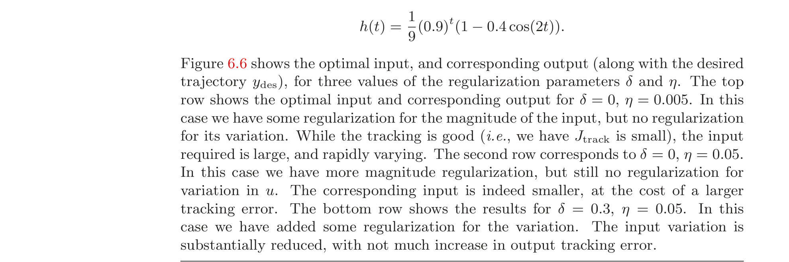
$\ell_1$-norm regularization
$\ell_1$-范数正则化
Regularization with an $\ell_1$-norm can be used as a heuristic for finding a sparse solution. For example, consider the problem
$$ \text{minimize} \quad \|Ax - b\|_2 + \gamma\|x\|_1, \tag{6.11} $$
in which the residual is measured with the Euclidean norm and the regularization is done with an $\ell_1$-norm. By varying the parameter $\gamma$ we can sweep out the optimal trade-off curve between $\|Ax - b\|_2$ and $\|x\|_1$, which serves as an approximation of the optimal trade-off curve between $\|Ax - b\|_2$ and the sparsity or cardinality $\mathbf{card}(x)$ of the vector $x$, i.e., the number of nonzero elements. The problem (6.11) can be recast and solved as an SOCP.
用 $\ell_1$-范数正则化可作为寻找稀疏解的启发式。例如考虑问题
$$ \text{minimize} \quad \|Ax - b\|_2 + \gamma\|x\|_1, \tag{6.11} $$
其中残差以欧氏范数度量，正则化以 $\ell_1$-范数进行。改变参数 $\gamma$ 可扫出 $\|Ax - b\|_2$ 与 $\|x\|_1$ 之间的最优折中曲线，它近似 $\|Ax - b\|_2$ 与向量 $x$ 的稀疏性或基数 $\mathbf{card}(x)$（即非零元个数）之间的最优折中曲线。问题 (6.11) 可改写并求解为 SOCP。
Example 6.4 Regressor selection problem. We are given a matrix $A \in \mathbb{R}^{m \times n}$, whose columns are potential regressors, and a vector $b \in \mathbb{R}^m$ that is to be fit by a linear combination of $k < n$ columns of $A$. The problem is to choose the subset of $k$ regressors to be used, and the associated coefficients. We can express this problem as
$$ \text{minimize} \quad \|Ax - b\|_2 \quad \text{subject to} \quad \mathbf{card}(x) \le k. $$
In general, this is a hard combinatorial problem.
One straightforward approach is to check every possible sparsity pattern in $x$ with $k$ nonzero entries. For a fixed sparsity pattern, we can find the optimal $x$ by solving a least-squares problem, i.e., minimizing $\|\tilde{A}\tilde{x} - b\|_2$, where $\tilde{A}$ denotes the submatrix of $A$ obtained by keeping the columns corresponding to the sparsity pattern, and $\tilde{x}$ is the subvector with the nonzero components of $x$. This is done for each of the $n!/(k!(n-k)!)$ sparsity patterns with $k$ nonzeros.
A good heuristic approach is to solve the problem (6.11) for different values of $\gamma$, finding the smallest value of $\gamma$ that results in a solution with $\mathbf{card}(x) = k$. We then fix this sparsity pattern and find the value of $x$ that minimizes $\|Ax - b\|_2$.
Figure 6.7 illustrates a numerical example with $A \in \mathbb{R}^{10 \times 20}$, $x \in \mathbb{R}^{20}$, $b \in \mathbb{R}^{10}$. The circles on the dashed curve are the (globally) Pareto optimal values for the trade-off between $\mathbf{card}(x)$ (vertical axis) and the residual $\|Ax - b\|_2$ (horizontal axis). For each $k$, the Pareto optimal point was obtained by enumerating all possible sparsity patterns with $k$ nonzero entries, as described above. The circles on the solid curve were obtained with the heuristic approach, by using the sparsity patterns of the solutions of problem (6.11) for different values of $\gamma$. Note that for $\mathbf{card}(x) = 1$, the heuristic method actually finds the global optimum.
This idea will come up again in basis pursuit (§6.5.4).
例 6.4 回归子选择问题。 给定矩阵 $A \in \mathbb{R}^{m \times n}$（其列为潜在回归子）和向量 $b \in \mathbb{R}^m$（要用 $A$ 的 $k < n$ 列的线性组合拟合）。问题是选择使用的 $k$ 个回归子子集及关联系数。该问题可表为
$$ \text{minimize} \quad \|Ax - b\|_2 \quad \text{subject to} \quad \mathbf{card}(x) \le k. $$
一般是困难的组合问题。
一种直接方法是检查 $x$ 中 $k$ 个非零元的所有可能稀疏模式。对固定稀疏模式，可通过求解最小二乘问题（即极小化 $\|\tilde{A}\tilde{x} - b\|_2$）找最优 $x$，其中 $\tilde{A}$ 为 $A$ 保留对应稀疏模式的列所得子矩阵，$\tilde{x}$ 为 $x$ 的非零分量子向量。对 $k$ 个非零元的 $n!/(k!(n-k)!)$ 种稀疏模式逐一进行。
一种良好启发式是对不同 $\gamma$ 求解问题 (6.11)，找使 $\mathbf{card}(x) = k$ 的最小 $\gamma$。然后固定此稀疏模式，求使 $\|Ax - b\|_2$ 最小的 $x$。
图 6.7 给出 $A \in \mathbb{R}^{10 \times 20}$、$x \in \mathbb{R}^{20}$、$b \in \mathbb{R}^{10}$ 的数值例子。虚线上的圆圈为 $\mathbf{card}(x)$（纵轴）与残差 $\|Ax - b\|_2$（横轴）之间（全局）Pareto 最优值。对每个 $k$，Pareto 最优点由枚举 $k$ 个非零元的所有可能稀疏模式得到。实线上的圆圈由启发式方法得到，即用不同 $\gamma$ 下问题 (6.11) 解的稀疏模式。注意对 $\mathbf{card}(x) = 1$，启发式方法实为全局最优。
该思想将在基追踪（§6.5.4）中再次出现。
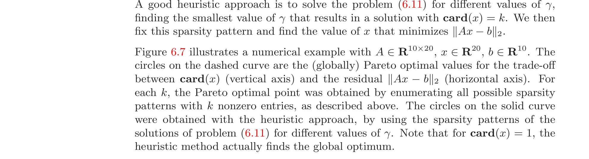
6.3.3 Reconstruction, smoothing, and de-noising
6.3.3 重建、光滑化与去噪
In this section we describe an important special case of the bi-criterion approximation problem described above, and give some examples showing how different regularization methods perform. In reconstruction problems, we start with a signal represented by a vector $x \in \mathbb{R}^n$. The coefficients $x_i$ correspond to the value of some function of time, evaluated (or sampled, in the language of signal processing) at evenly spaced points. It is usually assumed that the signal does not vary too rapidly, which means that usually, we have $x_i \approx x_{i+1}$. (In this section we consider signals in one dimension, e.g., audio signals, but the same ideas can be applied to signals in two or more dimensions, e.g., images or video.)
The signal $x$ is corrupted by an additive noise $v$:
$$ x_{\text{cor}} = x + v. $$
The noise can be modeled in many different ways, but here we simply assume that it is unknown, small, and, unlike the signal, rapidly varying. The goal is to form an estimate $\hat{x}$ of the original signal $x$, given the corrupted signal $x_{\text{cor}}$. This process is called signal reconstruction (since we are trying to reconstruct the original signal from the corrupted version) or de-noising (since we are trying to remove the noise from the corrupted signal). Most reconstruction methods end up performing some sort of smoothing operation on $x_{\text{cor}}$ to produce $\hat{x}$, so the process is also called smoothing.
One simple formulation of the reconstruction problem is the bi-criterion problem
$$ \text{minimize (w.r.t. } \mathbb{R}^2_+\text{)} \quad (\|\hat{x} - x_{\text{cor}}\|_2, \phi(\hat{x})), \tag{6.12} $$
where $\hat{x}$ is the variable and $x_{\text{cor}}$ is a problem parameter. The function $\phi : \mathbb{R}^n \to \mathbb{R}$ is convex, and is called the regularization function or smoothing objective. It is meant to measure the roughness, or lack of smoothness, of the estimate $\hat{x}$. The reconstruction problem (6.12) seeks signals that are close (in $\ell_2$-norm) to the corrupted signal, and that are smooth, i.e., for which $\phi(\hat{x})$ is small. The reconstruction problem (6.12) is a convex bi-criterion problem. We can find the Pareto optimal points by scalarization, and solving a (scalar) convex optimization problem.
本节描述上述双准则逼近问题的一个重要特例，并举例展示不同正则化方法的效果。在重建问题中，我们从以向量 $x \in \mathbb{R}^n$ 表示的信号出发。系数 $x_i$ 对应某时间函数在等距点处取值（用信号处理的语言即采样）的值。通常假定信号不太快变化，即一般有 $x_i \approx x_{i+1}$。（本节考虑一维信号如音频，但同样思想可用于二维或更高维信号如图像或视频。）
信号 $x$ 被加性噪声 $v$ 污染：
$$ x_{\text{cor}} = x + v. $$
噪声可用多种方式建模，此处仅假设它未知、小且与信号不同（快速变化）。目标是在给定污染信号 $x_{\text{cor}}$ 下形成原信号 $x$ 的估计 $\hat{x}$。此过程称为信号重建（因试图从污染版本重建原信号）或去噪（因试图从污染信号中去除噪声）。多数重建方法最终对 $x_{\text{cor}}$ 施加某种光滑化操作以产生 $\hat{x}$，故该过程也称光滑化。
重建问题的一种简单表述是双准则问题
$$ \text{minimize (w.r.t. } \mathbb{R}^2_+\text{)} \quad (\|\hat{x} - x_{\text{cor}}\|_2, \phi(\hat{x})), \tag{6.12} $$
其中 $\hat{x}$ 为变量，$x_{\text{cor}}$ 为问题参数。函数 $\phi : \mathbb{R}^n \to \mathbb{R}$ 凸，称为正则化函数或光滑化目标。它旨在度量估计 $\hat{x}$ 的粗糙度或光滑性不足。重建问题 (6.12) 寻求（在 $\ell_2$-范数下）接近污染信号且光滑（即 $\phi(\hat{x})$ 小）的信号。重建问题 (6.12) 是凸双准则问题。可通过标量化并求解（标量）凸优化问题求 Pareto 最优点。
Quadratic smoothing
二次光滑化
The simplest reconstruction method uses the quadratic smoothing function
$$ \phi_{\text{quad}}(x) = \sum_{i=1}^{n-1}(x_{i+1} - x_i)^2 = \|Dx\|_2^2, $$
where $D \in \mathbb{R}^{(n-1)\times n}$ is the bidiagonal matrix
$$ D = \begin{bmatrix} -1 & 1 & 0 & \cdots & 0 & 0 & 0 \\ 0 & -1 & 1 & \cdots & 0 & 0 & 0 \\ \vdots & & & \ddots & & & \vdots \\ 0 & 0 & 0 & \cdots & -1 & 1 & 0 \\ 0 & 0 & 0 & \cdots & 0 & -1 & 1 \end{bmatrix}. $$
We can obtain the optimal trade-off between $\|\hat{x} - x_{\text{cor}}\|_2$ and $\|D\hat{x}\|_2$ by minimizing
$$ \|\hat{x} - x_{\text{cor}}\|_2^2 + \delta\|D\hat{x}\|_2^2, $$
where $\delta > 0$ parametrizes the optimal trade-off curve. The solution of this quadratic problem,
$$ \hat{x} = (I + \delta D^T D)^{-1} x_{\text{cor}}, $$
can be computed very efficiently since $I + \delta D^T D$ is tridiagonal; see appendix C.
最简单的重建方法用二次光滑化函数
$$ \phi_{\text{quad}}(x) = \sum_{i=1}^{n-1}(x_{i+1} - x_i)^2 = \|Dx\|_2^2, $$
其中 $D \in \mathbb{R}^{(n-1)\times n}$ 为双对角矩阵
$$ D = \begin{bmatrix} -1 & 1 & 0 & \cdots & 0 & 0 & 0 \\ 0 & -1 & 1 & \cdots & 0 & 0 & 0 \\ \vdots & & & \ddots & & & \vdots \\ 0 & 0 & 0 & \cdots & -1 & 1 & 0 \\ 0 & 0 & 0 & \cdots & 0 & -1 & 1 \end{bmatrix}. $$
极小化
$$ \|\hat{x} - x_{\text{cor}}\|_2^2 + \delta\|D\hat{x}\|_2^2, $$
可得 $\|\hat{x} - x_{\text{cor}}\|_2$ 与 $\|D\hat{x}\|_2$ 之间的最优折中，其中 $\delta > 0$ 参数化最优折中曲线。该二次问题的解
$$ \hat{x} = (I + \delta D^T D)^{-1} x_{\text{cor}}, $$
可高效计算，因 $I + \delta D^T D$ 三对角；见附录 C。
Quadratic smoothing example
二次光滑化例子
Figure 6.8 shows a signal $x \in \mathbb{R}^{4000}$ (top) and the corrupted signal $x_{\text{cor}}$ (bottom). The optimal trade-off curve between the objectives $\|\hat{x} - x_{\text{cor}}\|_2$ and $\|D\hat{x}\|_2$ is shown in figure 6.9. The extreme point on the left of the trade-off curve corresponds to $\hat{x} = x_{\text{cor}}$, and has objective value $\|Dx_{\text{cor}}\|_2 = 4.4$. The extreme point on the right corresponds to $\hat{x} = 0$, for which $\|\hat{x} - x_{\text{cor}}\|_2 = \|x_{\text{cor}}\|_2 = 16.2$. Note the clear knee in the trade-off curve near $\|\hat{x} - x_{\text{cor}}\|_2 \approx 3$.
Figure 6.10 shows three smoothed signals on the optimal trade-off curve, corresponding to $\|\hat{x} - x_{\text{cor}}\|_2 = 8$ (top), $3$ (middle), and $1$ (bottom). Comparing the reconstructed signals with the original signal $x$, we see that the best reconstruction is obtained for $\|\hat{x} - x_{\text{cor}}\|_2 = 3$, which corresponds to the knee of the trade-off curve. For higher values of $\|\hat{x} - x_{\text{cor}}\|_2$, there is too much smoothing; for smaller values there is too little smoothing.
图 6.8 显示信号 $x \in \mathbb{R}^{4000}$（上）和污染信号 $x_{\text{cor}}$（下）。目标 $\|\hat{x} - x_{\text{cor}}\|_2$ 与 $\|D\hat{x}\|_2$ 之间的最优折中曲线见图 6.9。折中曲线左端点对应 $\hat{x} = x_{\text{cor}}$，目标值 $\|Dx_{\text{cor}}\|_2 = 4.4$。右端点对应 $\hat{x} = 0$，此时 $\|\hat{x} - x_{\text{cor}}\|_2 = \|x_{\text{cor}}\|_2 = 16.2$。注意折中曲线在 $\|\hat{x} - x_{\text{cor}}\|_2 \approx 3$ 附近有明显拐点。
图 6.10 显示最优折中曲线上三个光滑化信号，分别对应 $\|\hat{x} - x_{\text{cor}}\|_2 = 8$（上）、$3$（中）、$1$（下）。将重建信号与原信号 $x$ 比较，可见 $\|\hat{x} - x_{\text{cor}}\|_2 = 3$（对应折中曲线拐点）时重建最好。$\|\hat{x} - x_{\text{cor}}\|_2$ 更大时光滑过度；更小时光滑不足。
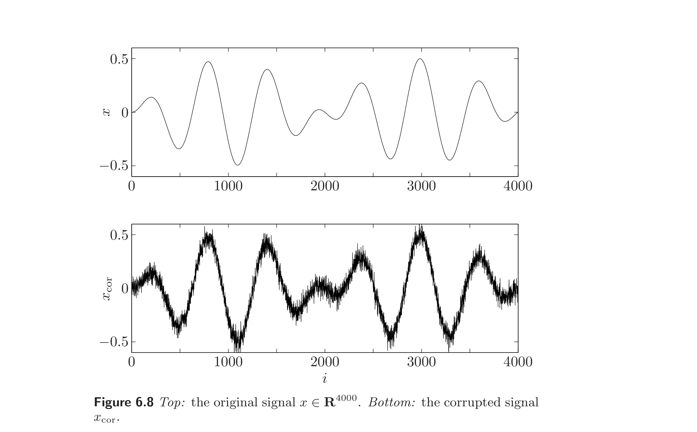
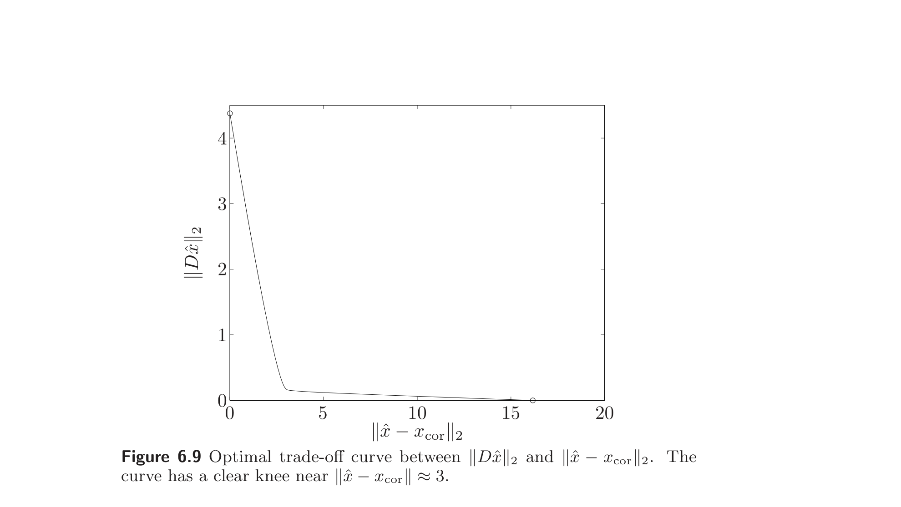
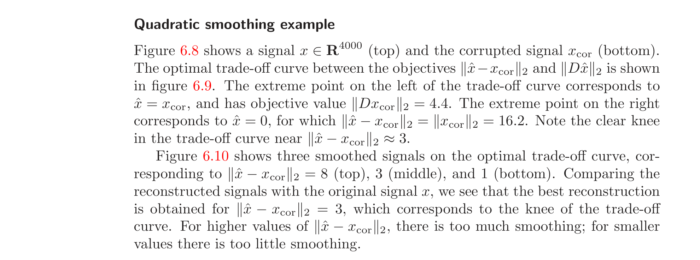
Total variation reconstruction
全变分重建
Simple quadratic smoothing works well as a reconstruction method when the original signal is very smooth, and the noise is rapidly varying. But any rapid variations in the original signal will, obviously, be attenuated or removed by quadratic smoothing. In this section we describe a reconstruction method that can remove much of the noise, while still preserving occasional rapid variations in the original signal. The method is based on the smoothing function
$$ \phi_{\text{tv}}(\hat{x}) = \sum_{i=1}^{n-1}|\hat{x}_{i+1} - \hat{x}_i| = \|D\hat{x}\|_1, $$
which is called the total variation of $x \in \mathbb{R}^n$. Like the quadratic smoothness measure $\phi_{\text{quad}}$, the total variation function assigns large values to rapidly varying $\hat{x}$. The total variation measure, however, assigns relatively less penalty to large values of $|x_{i+1} - x_i|$.
当原信号非常光滑、噪声快速变化时，简单二次光滑化作为重建方法效果良好。但原信号中的任何快速变化显然会被二次光滑化衰减或去除。本节描述一种重建方法，可去除大部分噪声同时保留原信号中偶尔的快速变化。该方法基于光滑化函数
$$ \phi_{\text{tv}}(\hat{x}) = \sum_{i=1}^{n-1}|\hat{x}_{i+1} - \hat{x}_i| = \|D\hat{x}\|_1, $$
称为 $x \in \mathbb{R}^n$ 的全变分（total variation）。与二次光滑性度量 $\phi_{\text{quad}}$ 一样，全变分函数对快速变化的 $\hat{x}$ 赋大值。但全变分度量对大的 $|x_{i+1} - x_i|$ 赋相对更小惩罚。
Total variation reconstruction example
全变分重建例子
Figure 6.11 shows a signal $x \in \mathbb{R}^{2000}$ (in the top plot), and the signal corrupted with noise $x_{\text{cor}}$. The signal is mostly smooth, but has several rapid variations or jumps in value; the noise is rapidly varying.
We first use quadratic smoothing. Figure 6.12 shows three smoothed signals on the optimal trade-off curve between $\|D\hat{x}\|_2$ and $\|\hat{x} - x_{\text{cor}}\|_2$. In the first two signals, the rapid variations in the original signal are also smoothed. In the third signal the steep edges in the signal are better preserved, but there is still a significant amount of noise left.
Now we demonstrate total variation reconstruction. Figure 6.13 shows the optimal trade-off curve between $\|D\hat{x}\|_1$ and $\|\hat{x} - x_{\text{cor}}\|_2$. Figure 6.14 shows the reconstructed signals on the optimal trade-off curve, for $\|D\hat{x}\|_1 = 5$ (top), $\|D\hat{x}\|_1 = 8$ (middle), and $\|D\hat{x}\|_1 = 10$ (bottom). We observe that, unlike quadratic smoothing, total variation reconstruction preserves the sharp transitions in the signal.
图 6.11 显示信号 $x \in \mathbb{R}^{2000}$（上图）及被噪声污染的信号 $x_{\text{cor}}$。信号大部分光滑，但有几处快速变化或值跳变；噪声快速变化。
首先用二次光滑化。图 6.12 显示 $\|D\hat{x}\|_2$ 与 $\|\hat{x} - x_{\text{cor}}\|_2$ 之间最优折中曲线上三个光滑化信号。前两个信号中原信号的快速变化也被光滑化。第三个信号中信号的陡边更好保留，但仍有相当噪声。
现演示全变分重建。图 6.13 显示 $\|D\hat{x}\|_1$ 与 $\|\hat{x} - x_{\text{cor}}\|_2$ 之间的最优折中曲线。图 6.14 显示最优折中曲线上的重建信号，$\|D\hat{x}\|_1 = 5$（上）、$\|D\hat{x}\|_1 = 8$（中）、$\|D\hat{x}\|_1 = 10$（下）。可观察到，与二次光滑化不同，全变分重建保留了信号中的尖锐过渡。
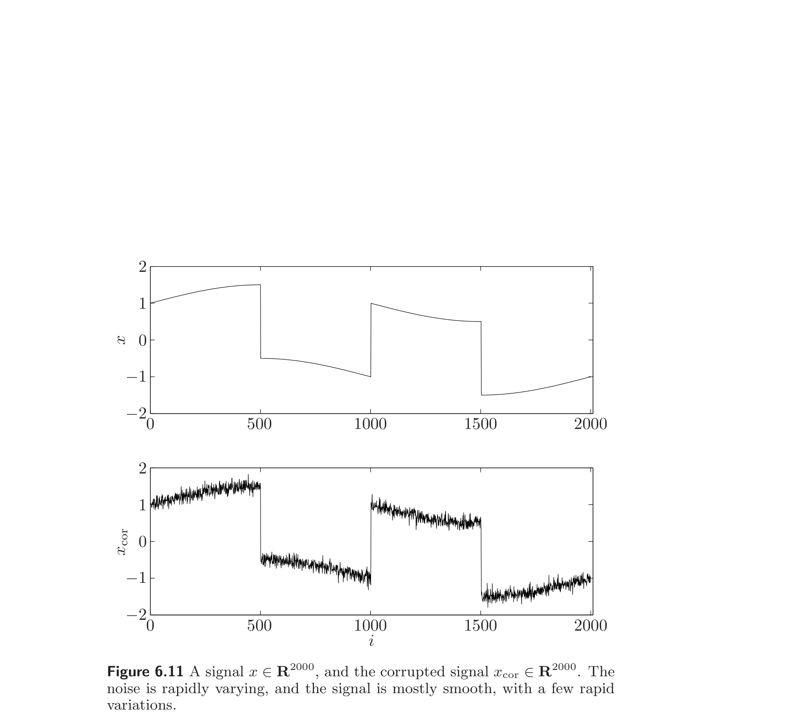
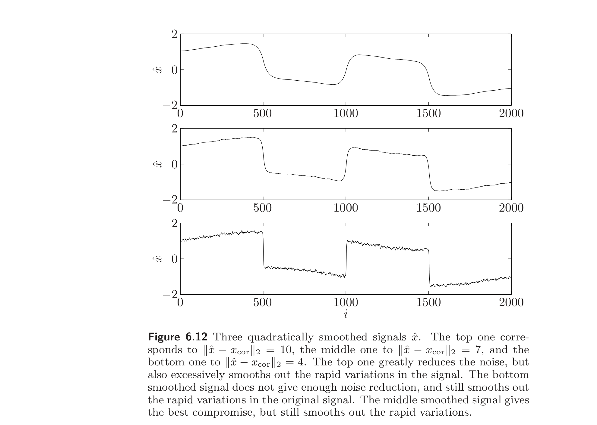
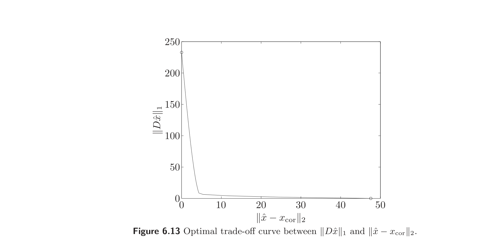
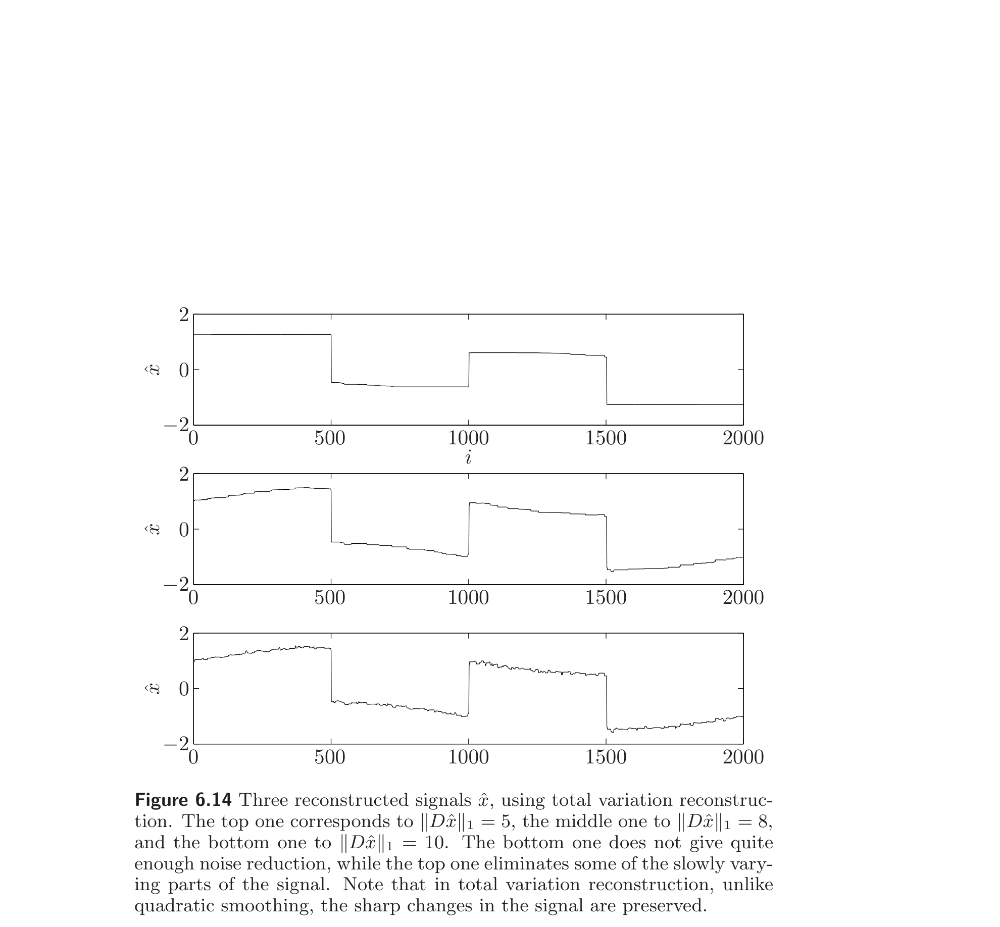
6.4 Robust approximation
6.4 鲁棒逼近
6.4.1 Stochastic robust approximation
6.4.1 随机鲁棒逼近
We consider an approximation problem with basic objective $\|Ax - b\|$, but also wish to take into account some uncertainty or possible variation in the data matrix $A$. (The same ideas can be extended to handle the case where there is uncertainty in both $A$ and $b$.) In this section we consider some statistical models for the variation in $A$.
We assume that $A$ is a random variable taking values in $\mathbb{R}^{m \times n}$, with mean $\bar{A}$, so we can describe $A$ as
$$ A = \bar{A} + U, $$
where $U$ is a random matrix with zero mean. Here, the constant matrix $\bar{A}$ gives the average value of $A$, and $U$ describes its statistical variation.
It is natural to use the expected value of $\|Ax - b\|$ as the objective:
$$ \text{minimize} \quad \mathbf{E}\,\|Ax - b\|. \tag{6.13} $$
We refer to this problem as the stochastic robust approximation problem. It is always a convex optimization problem, but usually not tractable since in most cases it is very difficult to evaluate the objective or its derivatives.
One simple case in which the stochastic robust approximation problem (6.13) can be solved occurs when $A$ assumes only a finite number of values, i.e.,
$$ \mathbf{prob}(A = A_i) = p_i, \quad i = 1, \ldots, k, $$
where $A_i \in \mathbb{R}^{m \times n}$, $\mathbf{1}^T p = 1$, $p \succeq 0$. In this case the problem (6.13) has the form
$$ \text{minimize} \quad p_1\|A_1 x - b\| + \cdots + p_k\|A_k x - b\|, $$
which is often called a sum-of-norms problem. It can be expressed as
$$ \text{minimize} \quad p^T t \quad \text{subject to} \quad \|A_i x - b\| \le t_i, \quad i = 1, \ldots, k, $$
where the variables are $x \in \mathbb{R}^n$ and $t \in \mathbb{R}^k$. If the norm is the Euclidean norm, this sum-of-norms problem is an SOCP. If the norm is the $\ell_1$- or $\ell_\infty$-norm, the sum-of-norms problem can be expressed as an LP; see exercise 6.8.
Some variations on the stochastic robust approximation problem (6.13) are tractable. As an example, consider the stochastic robust least-squares problem
$$ \text{minimize} \quad \mathbf{E}\,\|Ax - b\|_2^2, $$
where the norm is the Euclidean norm. We can express the objective as
$$ \mathbf{E}\,\|Ax - b\|_2^2 = \mathbf{E}\,(\bar{A}x - b + Ux)^T(\bar{A}x - b + Ux) = (\bar{A}x - b)^T(\bar{A}x - b) + \mathbf{E}\, x^T U^T U x = \|\bar{A}x - b\|_2^2 + x^T P x, $$
where $P = \mathbf{E}\, U^T U$. Therefore the stochastic robust approximation problem has the form of a regularized least-squares problem
$$ \text{minimize} \quad \|\bar{A}x - b\|_2^2 + \|P^{1/2} x\|_2^2, $$
with solution
$$ x = (\bar{A}^T \bar{A} + P)^{-1} \bar{A}^T b. $$
This makes perfect sense: when the matrix $A$ is subject to variation, the vector $Ax$ will have more variation the larger $x$ is, and Jensen's inequality tells us that variation in $Ax$ will increase the average value of $\|Ax - b\|_2$. So we need to balance making $\bar{A}x - b$ small with the desire for a small $x$ (to keep the variation in $Ax$ small), which is the essential idea of regularization.
This observation gives us another interpretation of the Tikhonov regularized least-squares problem (6.10), as a robust least-squares problem, taking into account possible variation in the matrix $A$. The solution of the Tikhonov regularized least-squares problem (6.10) minimizes $\mathbf{E}\,\|(A + U)x - b\|_2^2$, where $U_{ij}$ are zero mean, uncorrelated random variables, with variance $\delta/m$ (and here, $A$ is deterministic).
考虑基本目标为 $\|Ax - b\|$ 的逼近问题，但希望考虑数据矩阵 $A$ 的不确定性或可能变化。（同样思想可推广到 $A$ 和 $b$ 都有不确定性的情形。）本节考虑 $A$ 变化的若干统计模型。
设 $A$ 为取值于 $\mathbb{R}^{m \times n}$ 的随机变量，均值为 $\bar{A}$，故可描述 $A$ 为
$$ A = \bar{A} + U, $$
其中 $U$ 为零均值随机矩阵。常矩阵 $\bar{A}$ 给出 $A$ 的平均值，$U$ 描述其统计变化。
用 $\|Ax - b\|$ 的期望作为目标是自然的：
$$ \text{minimize} \quad \mathbf{E}\,\|Ax - b\|. \tag{6.13} $$
称此问题为随机鲁棒逼近问题。它总是凸优化问题，但通常不可处理，因多数情况下很难计算目标或其导数。
当 $A$ 只取有限个值时可解，即
$$ \mathbf{prob}(A = A_i) = p_i, \quad i = 1, \ldots, k, $$
其中 $A_i \in \mathbb{R}^{m \times n}$，$\mathbf{1}^T p = 1$，$p \succeq 0$。此时问题 (6.13) 形为
$$ \text{minimize} \quad p_1\|A_1 x - b\| + \cdots + p_k\|A_k x - b\|, $$
常称为范数和问题。可表为
$$ \text{minimize} \quad p^T t \quad \text{subject to} \quad \|A_i x - b\| \le t_i, \quad i = 1, \ldots, k, $$
变量为 $x \in \mathbb{R}^n$ 和 $t \in \mathbb{R}^k$。若范数为欧氏范数，此范数和问题是 SOCP。若范数为 $\ell_1$-或 $\ell_\infty$-范数，范数和问题可表为 LP；见习题 6.8。
随机鲁棒逼近问题 (6.13) 的某些变体可处理。例如考虑随机鲁棒最小二乘问题
$$ \text{minimize} \quad \mathbf{E}\,\|Ax - b\|_2^2, $$
范数为欧氏范数。目标可表为
$$ \mathbf{E}\,\|Ax - b\|_2^2 = \mathbf{E}\,(\bar{A}x - b + Ux)^T(\bar{A}x - b + Ux) = (\bar{A}x - b)^T(\bar{A}x - b) + \mathbf{E}\, x^T U^T U x = \|\bar{A}x - b\|_2^2 + x^T P x, $$
其中 $P = \mathbf{E}\, U^T U$。故随机鲁棒逼近问题具有正则化最小二乘问题形式
$$ \text{minimize} \quad \|\bar{A}x - b\|_2^2 + \|P^{1/2} x\|_2^2, $$
解为
$$ x = (\bar{A}^T \bar{A} + P)^{-1} \bar{A}^T b. $$
这完全合理：当矩阵 $A$ 有变化时，$x$ 越大向量 $Ax$ 变化越大，Jensen 不等式告诉我们 $Ax$ 的变化会增加 $\|Ax - b\|_2$ 的平均值。故需在使 $\bar{A}x - b$ 小与希望 $x$ 小（以保持 $Ax$ 变化小）之间平衡，这正是正则化的核心思想。
此观察给出 Tikhonov 正则化最小二乘问题 (6.10) 的另一解释，即作为考虑矩阵 $A$ 可能变化的鲁棒最小二乘问题。Tikhonov 正则化最小二乘问题 (6.10) 的解极小化 $\mathbf{E}\,\|(A + U)x - b\|_2^2$，其中 $U_{ij}$ 为零均值、不相关、方差 $\delta/m$ 的随机变量（此处 $A$ 为确定性）。
6.4.2 Worst-case robust approximation
6.4.2 最坏情形鲁棒逼近
It is also possible to model the variation in the matrix $A$ using a set-based, worst-case approach. We describe the uncertainty by a set of possible values for $A$:
$$ A \in \mathcal{A} \subseteq \mathbb{R}^{m \times n}, $$
which we assume is nonempty and bounded. We define the associated worst-case error of a candidate approximate solution $x \in \mathbb{R}^n$ as
$$ e_{\text{wc}}(x) = \sup\{\|Ax - b\| \mid A \in \mathcal{A}\}, $$
which is always a convex function of $x$. The (worst-case) robust approximation problem is to minimize the worst-case error:
$$ \text{minimize} \quad e_{\text{wc}}(x) = \sup\{\|Ax - b\| \mid A \in \mathcal{A}\}, \tag{6.14} $$
where the variable is $x$, and the problem data are $b$ and the set $\mathcal{A}$. When $\mathcal{A}$ is the singleton $\mathcal{A} = \{A\}$, the robust approximation problem (6.14) reduces to the basic norm approximation problem (6.1). The robust approximation problem is always a convex optimization problem, but its tractability depends on the norm used and the description of the uncertainty set $\mathcal{A}$.
也可用基于集合的最坏情形方法对矩阵 $A$ 的变化建模。用 $A$ 的可能取值集合描述不确定性：
$$ A \in \mathcal{A} \subseteq \mathbb{R}^{m \times n}, $$
假设非空且有界。定义候选逼近解 $x \in \mathbb{R}^n$ 的关联最坏情形误差为
$$ e_{\text{wc}}(x) = \sup\{\|Ax - b\| \mid A \in \mathcal{A}\}, $$
它总是 $x$ 的凸函数。（最坏情形）鲁棒逼近问题是极小化最坏情形误差：
$$ \text{minimize} \quad e_{\text{wc}}(x) = \sup\{\|Ax - b\| \mid A \in \mathcal{A}\}, \tag{6.14} $$
变量为 $x$，问题数据为 $b$ 和集合 $\mathcal{A}$。当 $\mathcal{A}$ 为单点集 $\mathcal{A} = \{A\}$ 时，鲁棒逼近问题 (6.14) 退化为基本范数逼近问题 (6.1)。鲁棒逼近问题总是凸优化问题，但其可处理性取决于所用范数和不确定集 $\mathcal{A}$ 的描述。
Example 6.5 Comparison of stochastic and worst-case robust approximation. To illustrate the difference between the stochastic and worst-case formulations of the robust approximation problem, we consider the least-squares problem
$$ \text{minimize} \quad \|A(u)x - b\|_2^2, $$
where $u \in \mathbb{R}$ is an uncertain parameter and $A(u) = A_0 + uA_1$. We consider a specific instance of the problem, with $A(u) \in \mathbb{R}^{20 \times 10}$, $\|A_0\| = 10$, $\|A_1\| = 1$, and $u$ in the interval $[-1, 1]$. (So, roughly speaking, the variation in the matrix $A$ is around $\pm 10\%$.)
We find three approximate solutions:
- Nominal optimal. The optimal solution $x_{\text{nom}}$ is found, assuming $A(u)$ has its nominal value $A_0$.
- Stochastic robust approximation. We find $x_{\text{stoch}}$, which minimizes $\mathbf{E}\,\|A(u)x - b\|_2^2$, assuming the parameter $u$ is uniformly distributed on $[-1, 1]$.
- Worst-case robust approximation. We find $x_{\text{wc}}$, which minimizes $$ \sup_{-1 \le u \le 1} \|A(u)x - b\|_2 = \max\{\|(A_0 - A_1)x - b\|_2, \|(A_0 + A_1)x - b\|_2\}. $$
For each of these three values of $x$, we plot the residual $r(u) = \|A(u)x - b\|_2$ as a function of the uncertain parameter $u$, in figure 6.15. These plots show how sensitive an approximate solution can be to variation in the parameter $u$. The nominal solution achieves the smallest residual when $u = 0$, but is quite sensitive to parameter variation: it gives much larger residuals as $u$ deviates from $0$, and approaches $-1$ or $1$. The worst-case solution has a larger residual when $u = 0$, but its residuals do not rise much as $u$ varies over the interval $[-1, 1]$. The stochastic robust approximate solution is in between.
例 6.5 随机与最坏情形鲁棒逼近的比较。 为说明鲁棒逼近问题的随机与最坏情形表述的差异，考虑最小二乘问题
$$ \text{minimize} \quad \|A(u)x - b\|_2^2, $$
其中 $u \in \mathbb{R}$ 为不确定参数，$A(u) = A_0 + uA_1$。考虑具体实例，$A(u) \in \mathbb{R}^{20 \times 10}$，$\|A_0\| = 10$，$\|A_1\| = 1$，$u$ 在区间 $[-1, 1]$ 内。（即粗略说矩阵 $A$ 的变化约 $\pm 10\%$。）
求三个逼近解：
- 名义最优。 假设 $A(u)$ 取名义值 $A_0$ 求最优解 $x_{\text{nom}}$。
- 随机鲁棒逼近。 假设参数 $u$ 在 $[-1, 1]$ 上均匀分布，求极小化 $\mathbf{E}\,\|A(u)x - b\|_2^2$ 的 $x_{\text{stoch}}$。
- 最坏情形鲁棒逼近。 求极小化 $$ \sup_{-1 \le u \le 1} \|A(u)x - b\|_2 = \max\{\|(A_0 - A_1)x - b\|_2, \|(A_0 + A_1)x - b\|_2\} $$ 的 $x_{\text{wc}}$。
对这三个 $x$ 值，图 6.15 绘出残差 $r(u) = \|A(u)x - b\|_2$ 作为不确定参数 $u$ 的函数。这些图显示逼近解对参数 $u$ 变化的敏感程度。名义解在 $u = 0$ 时残差最小，但对参数变化相当敏感：$u$ 偏离 $0$ 趋向 $-1$ 或 $1$ 时残差大得多。最坏情形解在 $u = 0$ 时残差较大，但 $u$ 在 $[-1, 1]$ 上变化时残差上升不多。随机鲁棒逼近解介于两者之间。
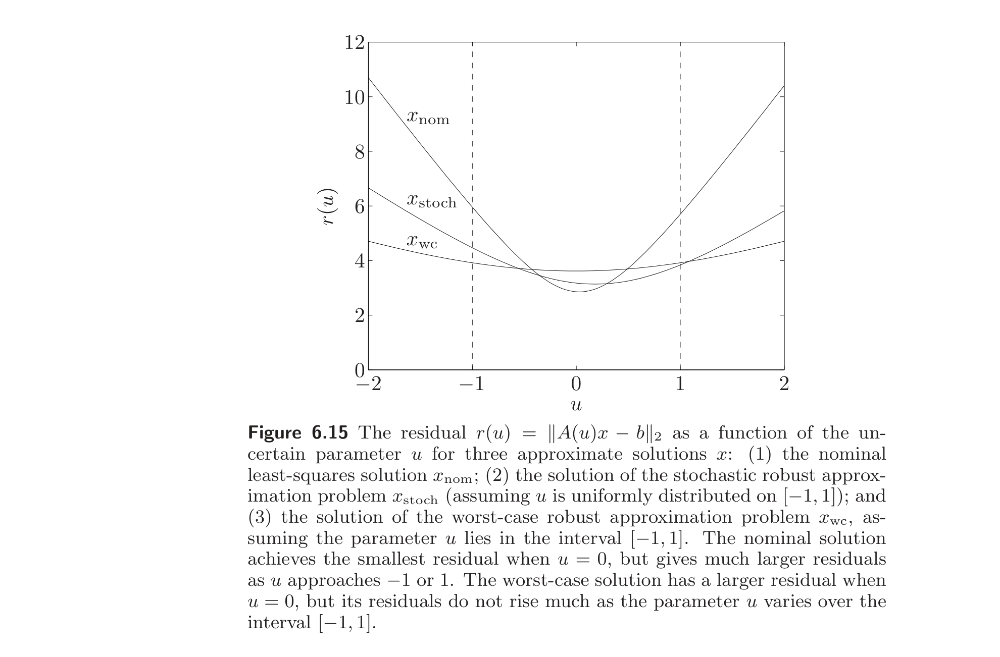
The robust approximation problem (6.14) arises in many contexts and applications. In an estimation setting, the set $\mathcal{A}$ gives our uncertainty in the linear relation between the vector to be estimated and our measurement vector. Sometimes the noise term $v$ in the model $y = Ax + v$ is called additive noise or additive error, since it is added to the 'ideal' measurement $Ax$. In contrast, the variation in $A$ is called multiplicative error, since it multiplies the variable $x$.
In an optimal design setting, the variation can represent uncertainty (arising in manufacture, say) of the linear equations that relate the design variables $x$ to the results vector $Ax$. The robust approximation problem (6.14) is then interpreted as the robust design problem: find design variables $x$ that minimize the worst possible mismatch between $Ax$ and $b$, over all possible values of $A$.
鲁棒逼近问题 (6.14) 出现在许多语境和应用中。在估计语境中，集合 $\mathcal{A}$ 给出待估向量与测量向量之间线性关系的不确定性。模型 $y = Ax + v$ 中的噪声项 $v$ 有时称为加性噪声或加性误差，因它加到"理想"测量 $Ax$ 上。相反，$A$ 的变化称为乘性误差，因它乘以变量 $x$。
在最优设计语境中，变化可表示关联设计变量 $x$ 与结果向量 $Ax$ 的线性方程的不确定性（如制造中产生）。鲁棒逼近问题 (6.14) 此时解释为鲁棒设计问题：在 $A$ 的所有可能值下，求使 $Ax$ 与 $b$ 之间最坏可能失配最小的设计变量 $x$。
Finite set
有限集
Here we have $\mathcal{A} = \{A_1, \ldots, A_k\}$, and the robust approximation problem is
$$ \text{minimize} \quad \max_{i=1,\ldots,k} \|A_i x - b\|. $$
This problem is equivalent to the robust approximation problem with the polyhedral set $\mathcal{A} = \mathbf{conv}\{A_1, \ldots, A_k\}$:
$$ \text{minimize} \quad \sup\{\|Ax - b\| \mid A \in \mathbf{conv}\{A_1, \ldots, A_k\}\}. $$
We can cast the problem in epigraph form as
$$ \text{minimize} \quad t \quad \text{subject to} \quad \|A_i x - b\| \le t, \quad i = 1, \ldots, k, $$
which can be solved in a variety of ways, depending on the norm used. If the norm is the Euclidean norm, this is an SOCP. If the norm is the $\ell_1$- or $\ell_\infty$-norm, we can express it as an LP.
此处 $\mathcal{A} = \{A_1, \ldots, A_k\}$，鲁棒逼近问题为
$$ \text{minimize} \quad \max_{i=1,\ldots,k} \|A_i x - b\|. $$
该问题等价于以多面体集 $\mathcal{A} = \mathbf{conv}\{A_1, \ldots, A_k\}$ 的鲁棒逼近问题：
$$ \text{minimize} \quad \sup\{\|Ax - b\| \mid A \in \mathbf{conv}\{A_1, \ldots, A_k\}\}. $$
可将问题写为上镜图形式
$$ \text{minimize} \quad t \quad \text{subject to} \quad \|A_i x - b\| \le t, \quad i = 1, \ldots, k, $$
视所用范数可用多种方法求解。若范数为欧氏范数，此为 SOCP。若范数为 $\ell_1$-或 $\ell_\infty$-范数，可表为 LP。
Norm bound error
范数界误差
Here the uncertainty set $\mathcal{A}$ is a norm ball, $\mathcal{A} = \{\bar{A} + U \mid \|U\| \le a\}$, where $\|\cdot\|$ is a norm on $\mathbb{R}^{m \times n}$. In this case we have
$$ e_{\text{wc}}(x) = \sup\{\|\bar{A}x - b + Ux\| \mid \|U\| \le a\}, $$
which must be carefully interpreted since the first norm appearing is on $\mathbb{R}^m$ (and is used to measure the size of the residual) and the second one appearing is on $\mathbb{R}^{m \times n}$ (used to define the norm ball $\mathcal{A}$).
This expression for $e_{\text{wc}}(x)$ can be simplified in several cases. As an example, let us take the Euclidean norm on $\mathbb{R}^n$ and the associated induced norm on $\mathbb{R}^{m \times n}$, i.e., the maximum singular value. If $\bar{A}x - b \ne 0$ and $x \ne 0$, the supremum in the expression for $e_{\text{wc}}(x)$ is attained for $U = auv^T$, with
$$ u = \frac{\bar{A}x - b}{\|\bar{A}x - b\|_2}, \quad v = \frac{x}{\|x\|_2}, $$
and the resulting worst-case error is
$$ e_{\text{wc}}(x) = \|\bar{A}x - b\|_2 + a\|x\|_2. $$
(It is easily verified that this expression is also valid if $x$ or $\bar{A}x - b$ is zero.) The robust approximation problem (6.14) then becomes
$$ \text{minimize} \quad \|\bar{A}x - b\|_2 + a\|x\|_2, $$
which is a regularized norm problem, solvable as the SOCP
$$ \text{minimize} \quad t_1 + a t_2 \quad \text{subject to} \quad \|\bar{A}x - b\|_2 \le t_1, \quad \|x\|_2 \le t_2. $$
Since the solution of this problem is the same as the solution of the regularized least-squares problem
$$ \text{minimize} \quad \|\bar{A}x - b\|_2^2 + \delta\|x\|_2^2 $$
for some value of the regularization parameter $\delta$, we have another interpretation of the regularized least-squares problem as a worst-case robust approximation problem.
此处不确定集 $\mathcal{A}$ 为范数球，$\mathcal{A} = \{\bar{A} + U \mid \|U\| \le a\}$，其中 $\|\cdot\|$ 为 $\mathbb{R}^{m \times n}$ 上的范数。此时
$$ e_{\text{wc}}(x) = \sup\{\|\bar{A}x - b + Ux\| \mid \|U\| \le a\}, $$
须谨慎解释，因出现的第一个范数在 $\mathbb{R}^m$ 上（用于度量残差大小），第二个在 $\mathbb{R}^{m \times n}$ 上（用于定义范数球 $\mathcal{A}$）。
$e_{\text{wc}}(x)$ 的表达式在若干情形可简化。例如取 $\mathbb{R}^n$ 上欧氏范数和 $\mathbb{R}^{m \times n}$ 上关联诱导范数（即最大奇异值）。若 $\bar{A}x - b \ne 0$ 且 $x \ne 0$，$e_{\text{wc}}(x)$ 表达式中的上确界在 $U = auv^T$ 处达到，其中
$$ u = \frac{\bar{A}x - b}{\|\bar{A}x - b\|_2}, \quad v = \frac{x}{\|x\|_2}, $$
所得最坏情形误差为
$$ e_{\text{wc}}(x) = \|\bar{A}x - b\|_2 + a\|x\|_2. $$
（易验证 $x$ 或 $\bar{A}x - b$ 为零时该式亦成立。）鲁棒逼近问题 (6.14) 变为
$$ \text{minimize} \quad \|\bar{A}x - b\|_2 + a\|x\|_2, $$
这是正则化范数问题，可作为 SOCP 求解
$$ \text{minimize} \quad t_1 + a t_2 \quad \text{subject to} \quad \|\bar{A}x - b\|_2 \le t_1, \quad \|x\|_2 \le t_2. $$
由于该问题的解与正则化最小二乘问题
$$ \text{minimize} \quad \|\bar{A}x - b\|_2^2 + \delta\|x\|_2^2 $$
对某正则化参数 $\delta$ 的解相同，故得正则化最小二乘问题作为最坏情形鲁棒逼近问题的另一解释。
Uncertainty ellipsoids
不确定椭球
We can also describe the variation in $A$ by giving an ellipsoid of possible values for each row:
$$ \mathcal{A} = \{[a_1 \cdots a_m]^T \mid a_i \in \mathcal{E}_i, \, i = 1, \ldots, m\}, $$
where
$$ \mathcal{E}_i = \{\bar{a}_i + P_i u \mid \|u\|_2 \le 1\}. $$
The matrix $P_i \in \mathbb{R}^{n \times n}$ describes the variation in $a_i$. We allow $P_i$ to have a nontrivial nullspace, in order to model the situation when the variation in $a_i$ is restricted to a subspace. As an extreme case, we take $P_i = 0$ if there is no uncertainty in $a_i$.
With this ellipsoidal uncertainty description, we can give an explicit expression for the worst-case magnitude of each residual:
$$ \sup_{a_i \in \mathcal{E}_i} |a_i^T x - b_i| = \sup\{|\bar{a}_i^T x - b_i + (P_i u)^T x| \mid \|u\|_2 \le 1\} = |\bar{a}_i^T x - b_i| + \|P_i^T x\|_2. $$
Using this result we can solve several robust approximation problems. For example, the robust $\ell_2$-norm approximation problem
$$ \text{minimize} \quad e_{\text{wc}}(x) = \sup\{\|Ax - b\|_2 \mid a_i \in \mathcal{E}_i, \, i = 1, \ldots, m\} $$
can be reduced to an SOCP, as follows. An explicit expression for the worst-case error is given by
$$ e_{\text{wc}}(x) = \left(\sum_{i=1}^m \left(\sup_{a_i \in \mathcal{E}_i} |a_i^T x - b_i|\right)^2\right)^{1/2} = \left(\sum_{i=1}^m (|\bar{a}_i^T x - b_i| + \|P_i^T x\|_2)^2\right)^{1/2}. $$
To minimize $e_{\text{wc}}(x)$ we can solve
$$ \text{minimize} \quad \|t\|_2 \quad \text{subject to} \quad |\bar{a}_i^T x - b_i| + \|P_i^T x\|_2 \le t_i, \quad i = 1, \ldots, m, $$
where we introduced new variables $t_1, \ldots, t_m$. This problem can be formulated as
$$ \text{minimize} \quad \|t\|_2 \quad \text{subject to} \quad \bar{a}_i^T x - b_i + \|P_i^T x\|_2 \le t_i, \quad i = 1, \ldots, m $$
$$ -\bar{a}_i^T x + b_i + \|P_i^T x\|_2 \le t_i, \quad i = 1, \ldots, m, $$
which becomes an SOCP when put in epigraph form.
也可通过给出每一行可能取值的椭球来描述 $A$ 的变化：
$$ \mathcal{A} = \{[a_1 \cdots a_m]^T \mid a_i \in \mathcal{E}_i, \, i = 1, \ldots, m\}, $$
其中
$$ \mathcal{E}_i = \{\bar{a}_i + P_i u \mid \|u\|_2 \le 1\}. $$
矩阵 $P_i \in \mathbb{R}^{n \times n}$ 描述 $a_i$ 的变化。允许 $P_i$ 有非平凡零空间，以建模 $a_i$ 变化限制于子空间的情形。极端地，若 $a_i$ 无不确定性则取 $P_i = 0$。
用此椭球不确定描述，可给出每个残差最坏情形幅值的显式表达式：
$$ \sup_{a_i \in \mathcal{E}_i} |a_i^T x - b_i| = \sup\{|\bar{a}_i^T x - b_i + (P_i u)^T x| \mid \|u\|_2 \le 1\} = |\bar{a}_i^T x - b_i| + \|P_i^T x\|_2. $$
利用此结果可求解若干鲁棒逼近问题。例如鲁棒 $\ell_2$-范数逼近问题
$$ \text{minimize} \quad e_{\text{wc}}(x) = \sup\{\|Ax - b\|_2 \mid a_i \in \mathcal{E}_i, \, i = 1, \ldots, m\} $$
可化为如下 SOCP。最坏情形误差的显式表达式为
$$ e_{\text{wc}}(x) = \left(\sum_{i=1}^m \left(\sup_{a_i \in \mathcal{E}_i} |a_i^T x - b_i|\right)^2\right)^{1/2} = \left(\sum_{i=1}^m (|\bar{a}_i^T x - b_i| + \|P_i^T x\|_2)^2\right)^{1/2}. $$
极小化 $e_{\text{wc}}(x)$ 可解
$$ \text{minimize} \quad \|t\|_2 \quad \text{subject to} \quad |\bar{a}_i^T x - b_i| + \|P_i^T x\|_2 \le t_i, \quad i = 1, \ldots, m, $$
其中引入新变量 $t_1, \ldots, t_m$。该问题可表述为
$$ \text{minimize} \quad \|t\|_2 \quad \text{subject to} \quad \bar{a}_i^T x - b_i + \|P_i^T x\|_2 \le t_i, \quad i = 1, \ldots, m $$
$$ -\bar{a}_i^T x + b_i + \|P_i^T x\|_2 \le t_i, \quad i = 1, \ldots, m, $$
化为上镜图形式后成为 SOCP。
Norm bounded error with linear structure
具线性结构的范数界误差
As a generalization of the norm bound description $\mathcal{A} = \{\bar{A} + U \mid \|U\| \le a\}$, we can define $\mathcal{A}$ as the image of a norm ball under an affine transformation:
$$ \mathcal{A} = \{\bar{A} + u_1 A_1 + u_2 A_2 + \cdots + u_p A_p \mid \|u\| \le 1\}, $$
where $\|\cdot\|$ is a norm on $\mathbb{R}^p$, and the $p + 1$ matrices $\bar{A}, A_1, \ldots, A_p \in \mathbb{R}^{m \times n}$ are given. The worst-case error can be expressed as
$$ e_{\text{wc}}(x) = \sup_{\|u\| \le 1} \|(\bar{A} + u_1 A_1 + \cdots + u_p A_p)x - b\| = \sup_{\|u\| \le 1} \|P(x)u + q(x)\|, $$
where $P$ and $q$ are defined as
$$ P(x) = \begin{bmatrix} A_1 x & A_2 x & \cdots & A_p x \end{bmatrix} \in \mathbb{R}^{m \times p}, \quad q(x) = \bar{A}x - b \in \mathbb{R}^m. $$
As a first example, we consider the robust Chebyshev approximation problem
$$ \text{minimize} \quad e_{\text{wc}}(x) = \sup_{\|u\|_\infty \le 1} \|(\bar{A} + u_1 A_1 + \cdots + u_p A_p)x - b\|_\infty. $$
In this case we can derive an explicit expression for the worst-case error. Let $p_i(x)^T$ denote the $i$th row of $P(x)$. We have
$$ e_{\text{wc}}(x) = \sup_{\|u\|_\infty \le 1} \|P(x)u + q(x)\|_\infty = \max_{i=1,\ldots,m} \sup_{\|u\|_\infty \le 1} |p_i(x)^T u + q_i(x)| = \max_{i=1,\ldots,m}(\|p_i(x)\|_1 + |q_i(x)|). $$
The robust Chebyshev approximation problem can therefore be cast as an LP
$$ \text{minimize} \quad t \quad \text{subject to} \quad -y_0 \preceq \bar{A}x - b \preceq y_0 $$
$$ -y_k \preceq A_k x \preceq y_k, \quad k = 1, \ldots, p $$
$$ y_0 + \sum_{k=1}^p y_k \preceq t\mathbf{1}, $$
with variables $x \in \mathbb{R}^n$, $y_k \in \mathbb{R}^m$, $t \in \mathbb{R}$.
As another example, we consider the robust least-squares problem
$$ \text{minimize} \quad e_{\text{wc}}(x) = \sup_{\|u\|_2 \le 1} \|(\bar{A} + u_1 A_1 + \cdots + u_p A_p)x - b\|_2. $$
Here we use Lagrange duality to evaluate $e_{\text{wc}}$. The worst-case error $e_{\text{wc}}(x)$ is the squareroot of the optimal value of the (nonconvex) quadratic optimization problem
$$ \text{maximize} \quad \|P(x)u + q(x)\|_2^2 \quad \text{subject to} \quad u^T u \le 1, $$
with $u$ as variable. The Lagrange dual of this problem can be expressed as the SDP
$$ \text{minimize} \quad t + \lambda \quad \text{subject to} \quad \begin{bmatrix} I & P(x) \\ P(x)^T & \lambda I \\ q(x)^T & 0 \end{bmatrix} \text{ (block structure)} \succeq 0 \tag{6.15} $$
with variables $t, \lambda \in \mathbb{R}$. (The LMI in (6.15) is the standard $3 \times 3$ block form $\begin{bmatrix} I & P(x) & q(x) \\ P(x)^T & \lambda I & 0 \\ q(x)^T & 0 & t \end{bmatrix} \succeq 0$.) Moreover, as mentioned in §5.2 and §B.1 (and proved in §B.4), strong duality holds for this pair of primal and dual problems. In other words, for fixed $x$, we can compute $e_{\text{wc}}(x)^2$ by solving the SDP (6.15) with variables $t$ and $\lambda$. Optimizing jointly over $t$, $\lambda$, and $x$ is equivalent to minimizing $e_{\text{wc}}(x)^2$. We conclude that the robust least-squares problem is equivalent to the SDP (6.15) with $x$, $\lambda$, $t$ as variables.
作为范数界描述 $\mathcal{A} = \{\bar{A} + U \mid \|U\| \le a\}$ 的推广，可将 $\mathcal{A}$ 定义为范数球在仿射变换下的像：
$$ \mathcal{A} = \{\bar{A} + u_1 A_1 + u_2 A_2 + \cdots + u_p A_p \mid \|u\| \le 1\}, $$
其中 $\|\cdot\|$ 为 $\mathbb{R}^p$ 上范数，$p + 1$ 个矩阵 $\bar{A}, A_1, \ldots, A_p \in \mathbb{R}^{m \times n}$ 给定。最坏情形误差可表为
$$ e_{\text{wc}}(x) = \sup_{\|u\| \le 1} \|(\bar{A} + u_1 A_1 + \cdots + u_p A_p)x - b\| = \sup_{\|u\| \le 1} \|P(x)u + q(x)\|, $$
其中 $P$、$q$ 定义为
$$ P(x) = \begin{bmatrix} A_1 x & A_2 x & \cdots & A_p x \end{bmatrix} \in \mathbb{R}^{m \times p}, \quad q(x) = \bar{A}x - b \in \mathbb{R}^m. $$
作为第一例，考虑鲁棒 Chebyshev 逼近问题
$$ \text{minimize} \quad e_{\text{wc}}(x) = \sup_{\|u\|_\infty \le 1} \|(\bar{A} + u_1 A_1 + \cdots + u_p A_p)x - b\|_\infty. $$
此时可导出最坏情形误差的显式表达式。设 $p_i(x)^T$ 为 $P(x)$ 的第 $i$ 行。有
$$ e_{\text{wc}}(x) = \sup_{\|u\|_\infty \le 1} \|P(x)u + q(x)\|_\infty = \max_{i=1,\ldots,m} \sup_{\|u\|_\infty \le 1} |p_i(x)^T u + q_i(x)| = \max_{i=1,\ldots,m}(\|p_i(x)\|_1 + |q_i(x)|). $$
故鲁棒 Chebyshev 逼近问题可表为 LP
$$ \text{minimize} \quad t \quad \text{subject to} \quad -y_0 \preceq \bar{A}x - b \preceq y_0 $$
$$ -y_k \preceq A_k x \preceq y_k, \quad k = 1, \ldots, p $$
$$ y_0 + \sum_{k=1}^p y_k \preceq t\mathbf{1}, $$
变量为 $x \in \mathbb{R}^n$，$y_k \in \mathbb{R}^m$，$t \in \mathbb{R}$。
作为另一例，考虑鲁棒最小二乘问题
$$ \text{minimize} \quad e_{\text{wc}}(x) = \sup_{\|u\|_2 \le 1} \|(\bar{A} + u_1 A_1 + \cdots + u_p A_p)x - b\|_2. $$
此处用 Lagrange 对偶计算 $e_{\text{wc}}$。最坏情形误差 $e_{\text{wc}}(x)$ 是如下（非凸）二次优化问题最优值的平方根
$$ \text{maximize} \quad \|P(x)u + q(x)\|_2^2 \quad \text{subject to} \quad u^T u \le 1, $$
以 $u$ 为变量。该问题的 Lagrange 对偶可表为 SDP
$$ \text{minimize} \quad t + \lambda \quad \text{subject to} \quad \begin{bmatrix} I & P(x) & q(x) \\ P(x)^T & \lambda I & 0 \\ q(x)^T & 0 & t \end{bmatrix} \succeq 0 \tag{6.15} $$
变量为 $t, \lambda \in \mathbb{R}$。且如 §5.2 和 §B.1 所述（§B.4 证明），该原始与对偶问题对强对偶成立。换言之，对固定 $x$，可通过以 $t$、$\lambda$ 为变量求解 SDP (6.15) 计算 $e_{\text{wc}}(x)^2$。对 $t$、$\lambda$、$x$ 联合优化等价于极小化 $e_{\text{wc}}(x)^2$。故鲁棒最小二乘问题等价于以 $x$、$\lambda$、$t$ 为变量的 SDP (6.15)。
Example 6.6 Comparison of worst-case robust, Tikhonov regularized, and nominal least-squares solutions. We consider an instance of the robust approximation problem
$$ \text{minimize} \quad \sup_{\|u\|_2 \le 1} \|(\bar{A} + u_1 A_1 + u_2 A_2)x - b\|_2, \tag{6.16} $$
with dimensions $m = 50$, $n = 20$. The matrix $\bar{A}$ has norm $10$, and the two matrices $A_1$ and $A_2$ have norm $1$, so the variation in the matrix $A$ is, roughly speaking, around $10\%$. The uncertainty parameters $u_1$ and $u_2$ lie in the unit disk in $\mathbb{R}^2$.
We compute the optimal solution of the robust least-squares problem (6.16) $x_{\text{rls}}$, as well as the solution of the nominal least-squares problem $x_{\text{ls}}$ (i.e., assuming $u = 0$), and also the Tikhonov regularized solution $x_{\text{tik}}$, with $\delta = 1$.
To illustrate the sensitivity of each of these approximate solutions to the parameter $u$, we generate $10^5$ parameter vectors, uniformly distributed on the unit disk, and evaluate the residual
$$ \|(A_0 + u_1 A_1 + u_2 A_2)x - b\|_2 $$
for each parameter value. The distributions of the residuals are shown in figure 6.16. We can make several observations. First, the residuals of the nominal least-squares solution are widely spread, from a smallest value around $0.52$ to a largest value around $4.9$. In particular, the least-squares solution is very sensitive to parameter variation. In contrast, both the robust least-squares and Tikhonov regularized solutions exhibit far smaller variation in residual as the uncertainty parameter varies over the unit disk. The robust least-squares solution, for example, achieves a residual between $2.0$ and $2.6$ for all parameters in the unit disk.
例 6.6 最坏情形鲁棒、Tikhonov 正则化与名义最小二乘解的比较。 考虑鲁棒逼近问题的实例
$$ \text{minimize} \quad \sup_{\|u\|_2 \le 1} \|(\bar{A} + u_1 A_1 + u_2 A_2)x - b\|_2, \tag{6.16} $$
维数 $m = 50$，$n = 20$。矩阵 $\bar{A}$ 范数为 $10$，两矩阵 $A_1$、$A_2$ 范数为 $1$，故矩阵 $A$ 的变化粗略约 $10\%$。不确定参数 $u_1$、$u_2$ 位于 $\mathbb{R}^2$ 单位圆盘内。
计算鲁棒最小二乘问题 (6.16) 的最优解 $x_{\text{rls}}$，名义最小二乘问题（假设 $u = 0$）的解 $x_{\text{ls}}$，以及 $\delta = 1$ 的 Tikhonov 正则化解 $x_{\text{tik}}$。
为说明各逼近解对参数 $u$ 的敏感性，生成 $10^5$ 个在单位圆盘上均匀分布的参数向量，对每个参数值计算残差
$$ \|(A_0 + u_1 A_1 + u_2 A_2)x - b\|_2. $$
残差分布见图 6.16。可作若干观察。首先，名义最小二乘解的残差分布很广，从约 $0.52$ 的最小值到约 $4.9$ 的最大值。特别地，最小二乘解对参数变化非常敏感。相反，鲁棒最小二乘和 Tikhonov 正则化解的残差随不确定参数在单位圆盘上变化的变化小得多。例如鲁棒最小二乘解对所有单位圆盘内参数的残差在 $2.0$ 到 $2.6$ 之间。
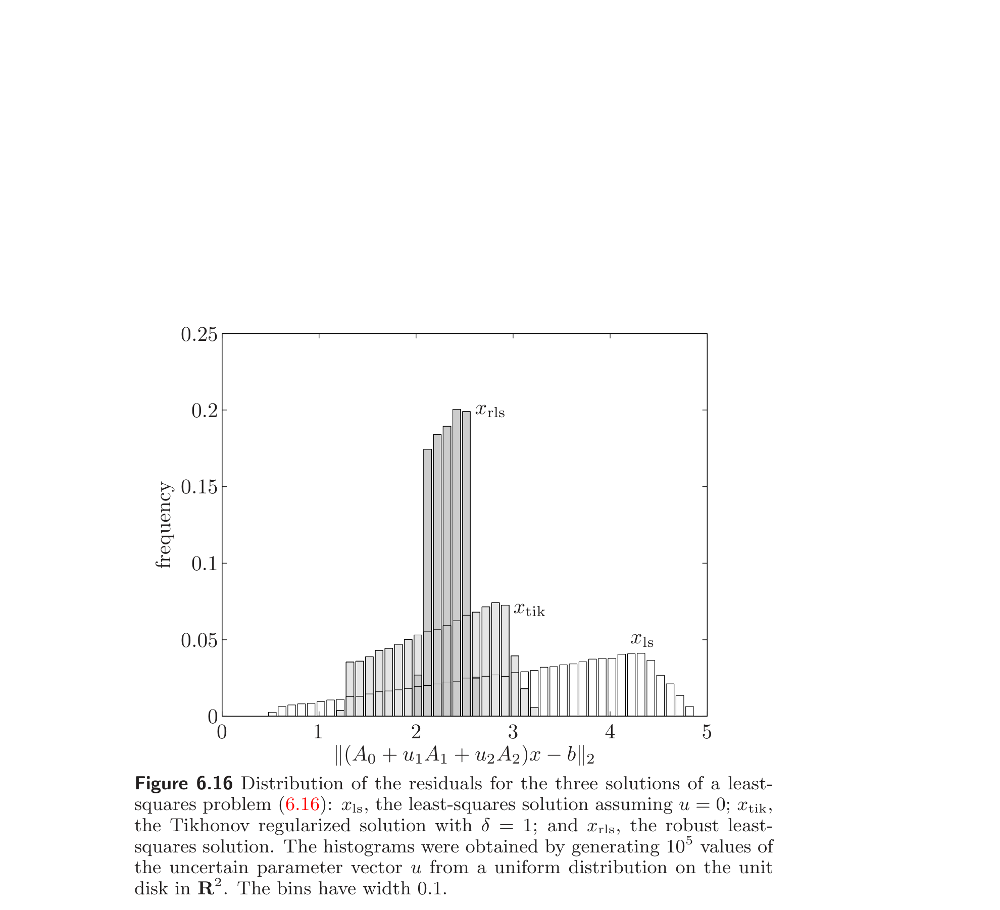
6.5 Function fitting and interpolation
6.5 函数拟合与插值
In function fitting problems, we select a member of a finite-dimensional subspace of functions that best fits some given data or requirements. For simplicity we consider real-valued functions; the ideas are readily extended to handle vector-valued functions as well.
在函数拟合问题中，我们从某有限维函数子空间中选取最佳拟合给定数据或要求的成员。为简单起见考虑实值函数；这些思想易推广到向量值函数。
6.5.1 Function families
6.5.1 函数族
We consider a family of functions $f_1, \ldots, f_n : \mathbb{R}^k \to \mathbb{R}$, with common domain $\mathbf{dom}\, f_i = D$. With each $x \in \mathbb{R}^n$ we associate the function $f : \mathbb{R}^k \to \mathbb{R}$ given by
$$ f(u) = x_1 f_1(u) + \cdots + x_n f_n(u) \tag{6.17} $$
with $\mathbf{dom}\, f = D$. The family $\{f_1, \ldots, f_n\}$ is sometimes called the set of basis functions (for the fitting problem) even when the functions are not independent. The vector $x \in \mathbb{R}^n$, which parametrizes the subspace of functions, is our optimization variable, and is sometimes called the coefficient vector. The basis functions generate a subspace $\mathcal{F}$ of functions on $D$.
In many applications the basis functions are specially chosen, using prior knowledge or experience, in order to reasonably model functions of interest with the finite-dimensional subspace of functions. In other cases, more generic function families are used. We describe a few of these below.
考虑函数族 $f_1, \ldots, f_n : \mathbb{R}^k \to \mathbb{R}$，公共定义域 $\mathbf{dom}\, f_i = D$。与每个 $x \in \mathbb{R}^n$ 关联函数 $f : \mathbb{R}^k \to \mathbb{R}$
$$ f(u) = x_1 f_1(u) + \cdots + x_n f_n(u) \tag{6.17} $$
定义域 $\mathbf{dom}\, f = D$。族 $\{f_1, \ldots, f_n\}$ 有时称为（拟合问题的）基函数集，即便函数不独立。参数化函数子空间的向量 $x \in \mathbb{R}^n$ 是优化变量，有时称为系数向量。基函数生成 $D$ 上函数的子空间 $\mathcal{F}$。
许多应用中基函数经专门选取，利用先验知识或经验，以使有限维函数子空间能合理建模感兴趣的函数。其他情形用更通用的函数族。下面描述几种。
Polynomials
多项式
One common subspace of functions on $\mathbb{R}$ consists of polynomials of degree less than $n$. The simplest basis consists of the powers, i.e., $f_i(t) = t^{i-1}$, $i = 1, \ldots, n$. In many applications, the same subspace is described using a different basis, for example, a set of polynomials $f_1, \ldots, f_n$, of degree less than $n$, that are orthonormal with respect to some positive function (or measure) $\phi : \mathbb{R}^n \to \mathbb{R}_+$, i.e.,
$$ \int f_i(t) f_j(t) \phi(t)\, dt = \begin{cases} 1 & i = j \\ 0 & i \ne j. \end{cases} $$
Another common basis for polynomials is the Lagrange basis $f_1, \ldots, f_n$ associated with distinct points $t_1, \ldots, t_n$, which satisfy
$$ f_i(t_j) = \begin{cases} 1 & i = j \\ 0 & i \ne j. \end{cases} $$
We can also consider polynomials on $\mathbb{R}^k$, with a maximum total degree, or a maximum degree for each variable.
As a related example, we have trigonometric polynomials of degree less than $n$, with basis
$$ \sin kt, \quad k = 1, \ldots, n-1, \qquad \cos kt, \quad k = 0, \ldots, n-1. $$
函数在 $\mathbb{R}$ 上的一个常见子空间由次数小于 $n$ 的多项式构成。最简单的基为幂基，即 $f_i(t) = t^{i-1}$，$i = 1, \ldots, n$。许多应用中同一子空间用不同基描述，例如一组次数小于 $n$ 的多项式 $f_1, \ldots, f_n$，关于某正函数（或测度）$\phi : \mathbb{R}^n \to \mathbb{R}_+$ 正交归一，即
$$ \int f_i(t) f_j(t) \phi(t)\, dt = \begin{cases} 1 & i = j \\ 0 & i \ne j. \end{cases} $$
多项式的另一常见基是与互异点 $t_1, \ldots, t_n$ 关联的 Lagrange 基 $f_1, \ldots, f_n$，满足
$$ f_i(t_j) = \begin{cases} 1 & i = j \\ 0 & i \ne j. \end{cases} $$
也可考虑 $\mathbb{R}^k$ 上的多项式，有最大总次数或每变量最大次数。
作为相关例子，有次数小于 $n$ 的三角多项式，基为
$$ \sin kt, \quad k = 1, \ldots, n-1, \qquad \cos kt, \quad k = 0, \ldots, n-1. $$
Piecewise-linear functions
分段线性函数
We start with a triangularization of the domain $D$, which means the following. We have a set of mesh or grid points $g_1, \ldots, g_n \in \mathbb{R}^k$, and a partition of $D$ into a set of simplexes:
$$ D = S_1 \cup \cdots \cup S_m, \quad \mathbf{int}(S_i \cap S_j) = \emptyset \text{ for } i \ne j. $$
Each simplex is the convex hull of $k + 1$ grid points, and we require that each grid point is a vertex of any simplex it lies in.
Given a triangularization, we can construct a piecewise-linear (or more precisely, piecewise-affine) function $f$ by assigning function values $f(g_i) = x_i$ to the grid points, and then extending the function affinely on each simplex. The function $f$ can be expressed as (6.17) where the basis functions $f_i$ are affine on each simplex and are defined by the conditions
$$ f_i(g_j) = \begin{cases} 1 & i = j \\ 0 & i \ne j. \end{cases} $$
By construction, such a function is continuous. Figure 6.17 shows an example for $k = 2$.
从区域 $D$ 的三角剖分开始，含义如下。有一组网格或格点 $g_1, \ldots, g_n \in \mathbb{R}^k$，及 $D$ 到一组单纯形的划分：
$$ D = S_1 \cup \cdots \cup S_m, \quad \mathbf{int}(S_i \cap S_j) = \emptyset \text{（对 } i \ne j \text{）}. $$
每个单纯形是 $k + 1$ 个格点的凸包，且要求每个格点是其所在任一单纯形的顶点。
给定三角剖分，可通过给格点赋予函数值 $f(g_i) = x_i$ 然后在每个单纯形上仿射延拓，构造分段线性（更准确说是分段仿射）函数 $f$。函数 $f$ 可表为 (6.17)，其中基函数 $f_i$ 在每个单纯形上仿射，由条件
$$ f_i(g_j) = \begin{cases} 1 & i = j \\ 0 & i \ne j \end{cases} $$
定义。由构造，此函数连续。图 6.17 给出 $k = 2$ 的例子。
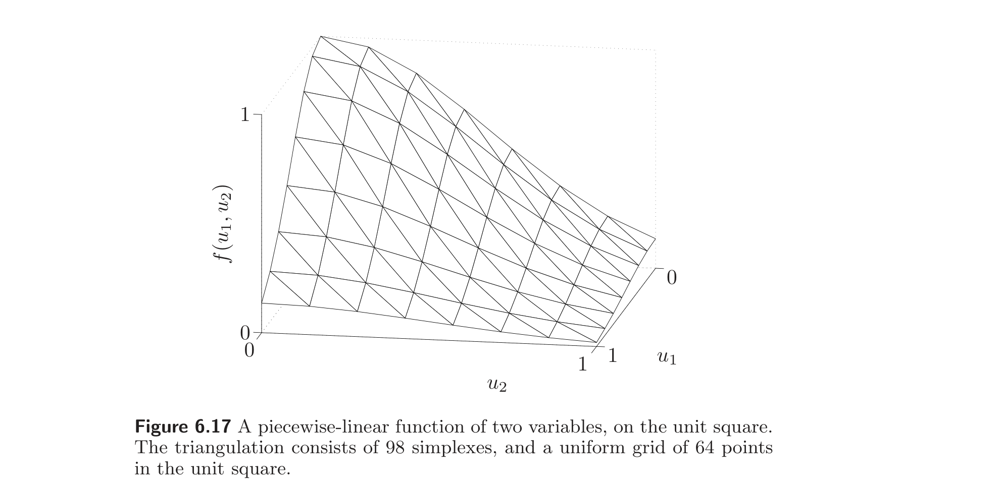
Piecewise polynomials and splines
分段多项式与样条
The idea of piecewise-affine functions on a triangulated domain is readily extended to piecewise polynomials and other functions. Piecewise polynomials are defined as polynomials (of some maximum degree) on each simplex of the triangulation, which are continuous, i.e., the polynomials agree at the boundaries between simplexes. By further restricting the piecewise polynomials to have continuous derivatives up to a certain order, we can define various classes of spline functions. Figure 6.18 shows an example of a cubic spline, i.e., a piecewise polynomial of degree 3 on $\mathbb{R}$, with continuous first and second derivatives.
三角剖分区域上分段仿射函数的思想易推广到分段多项式和其他函数。分段多项式定义为三角剖分每个单纯形上（某最大次数的）多项式且连续，即多项式在单纯形边界处一致。进一步限制分段多项式有到某阶的连续导数，可定义各类样条函数。图 6.18 给出三次样条例子，即 $\mathbb{R}$ 上次数 3 的分段多项式，有一阶和二阶连续导数。
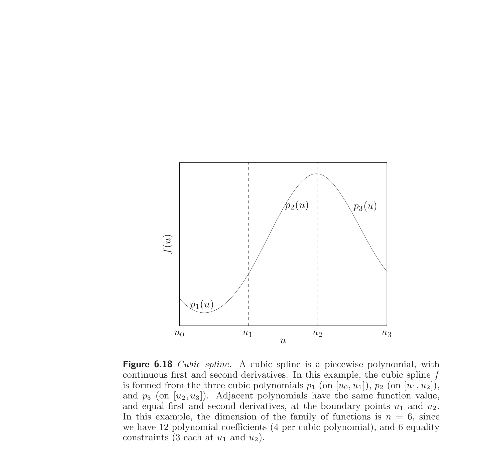
6.5.2 Constraints
6.5.2 约束
In this section we describe some constraints that can be imposed on the function $f$, and therefore, on the variable $x \in \mathbb{R}^n$.
本节描述可施加于函数 $f$ 从而施加于变量 $x \in \mathbb{R}^n$ 的若干约束。
Function value interpolation and inequalities
函数值插值与不等式
Let $v$ be a point in $D$. The value of $f$ at $v$,
$$ f(v) = \sum_{i=1}^n x_i f_i(v), $$
is a linear function of $x$. Therefore interpolation conditions
$$ f(v_j) = z_j, \quad j = 1, \ldots, m, $$
which require the function $f$ to have the values $z_j \in \mathbb{R}$ at specified points $v_j \in D$, form a set of linear equalities in $x$. More generally, inequalities on the function value at a given point, as in $l \le f(v) \le u$, are linear inequalities on the variable $x$.
There are many other interesting convex constraints on $f$ (hence, $x$) that involve the function values at a finite set of points $v_1, \ldots, v_N$. For example, the Lipschitz constraint
$$ |f(v_j) - f(v_k)| \le L\|v_j - v_k\|, \quad j, k = 1, \ldots, m, $$
forms a set of linear inequalities in $x$.
We can also impose inequalities on the function values at an infinite number of points. As an example, consider the nonnegativity constraint
$$ f(u) \ge 0 \text{ for all } u \in D. $$
This is a convex constraint on $x$ (since it is the intersection of an infinite number of halfspaces), but may not lead to a tractable problem except in special cases that exploit the particular structure of the functions. One simple example occurs when the functions are piecewise-linear. In this case, if the function values are nonnegative at the grid points, the function is nonnegative everywhere, so we obtain a simple (finite) set of linear inequalities.
As a less trivial example, consider the case when the functions are polynomials on $\mathbb{R}$, with even maximum degree $2k$ (i.e., $n = 2k + 1$), and $D = \mathbb{R}$. As shown in exercise 2.37, page 65, the nonnegativity constraint
$$ p(u) = x_1 + x_2 u + \cdots + x_{2k+1} u^{2k} \ge 0 \text{ for all } u \in \mathbb{R}, $$
is equivalent to
$$ x_i = \sum_{m+n=i+1} Y_{mn}, \quad i = 1, \ldots, 2k+1, \quad Y \succeq 0, $$
where $Y \in \mathbf{S}^{k+1}$ is an auxiliary variable.
设 $v$ 为 $D$ 中一点。$f$ 在 $v$ 处的值
$$ f(v) = \sum_{i=1}^n x_i f_i(v), $$
是 $x$ 的线性函数。故插值条件
$$ f(v_j) = z_j, \quad j = 1, \ldots, m, $$
（要求函数 $f$ 在指定点 $v_j \in D$ 处取值 $z_j \in \mathbb{R}$）构成 $x$ 的一组线性等式。更一般地，给定点处函数值的不等式，如 $l \le f(v) \le u$，是变量 $x$ 的线性不等式。
还有许多涉及有限点集 $v_1, \ldots, v_N$ 处函数值的其他有趣凸约束（从而对 $x$）。例如 Lipschitz 约束
$$ |f(v_j) - f(v_k)| \le L\|v_j - v_k\|, \quad j, k = 1, \ldots, m, $$
构成 $x$ 的一组线性不等式。
也可对无穷多点处的函数值施加不等式。例如非负约束
$$ f(u) \ge 0 \text{（对所有 } u \in D \text{）}. $$
这是 $x$ 的凸约束（因它是无穷多半空间的交集），但除利用函数特殊结构的特殊情形外，可能不导致可处理问题。一个简单例子是函数为分段线性时。此时若格点处函数值非负，则函数处处非负，故得一简单（有限）线性不等式组。
作为非平凡例子，考虑函数为 $\mathbb{R}$ 上多项式、最大次数为偶数 $2k$（即 $n = 2k + 1$）、$D = \mathbb{R}$ 的情形。如第 65 页习题 2.37 所示，非负约束
$$ p(u) = x_1 + x_2 u + \cdots + x_{2k+1} u^{2k} \ge 0 \text{（对所有 } u \in \mathbb{R} \text{）} $$
等价于
$$ x_i = \sum_{m+n=i+1} Y_{mn}, \quad i = 1, \ldots, 2k+1, \quad Y \succeq 0, $$
其中 $Y \in \mathbf{S}^{k+1}$ 为辅助变量。
Derivative constraints
导数约束
Suppose the basis functions $f_i$ are differentiable at a point $v \in D$. The gradient
$$ \nabla f(v) = \sum_{i=1}^n x_i \nabla f_i(v), $$
is a linear function of $x$, so interpolation conditions on the derivative of $f$ at $v$ reduce to linear equality constraints on $x$. Requiring that the norm of the gradient at $v$ not exceed a given limit,
$$ \|\nabla f(v)\| = \left\|\sum_{i=1}^n x_i \nabla f_i(v)\right\| \le M, $$
is a convex constraint on $x$. The same idea extends to higher derivatives. For example, if $f$ is twice differentiable at $v$, the requirement that
$$ lI \preceq \nabla^2 f(v) \preceq uI $$
is a linear matrix inequality in $x$, hence convex.
We can also impose constraints on the derivatives at an infinite number of points. For example, we can require that $f$ is monotone:
$$ f(u) \ge f(v) \text{ for all } u, v \in D, \, u \succeq v. $$
This is a convex constraint in $x$, but may not lead to a tractable problem except in special cases. When $f$ is piecewise affine, for example, the monotonicity constraint is equivalent to the condition $\nabla f(v) \succeq 0$ inside each of the simplexes. Since the gradient is a linear function of the grid point values, this leads to a simple (finite) set of linear inequalities.
As another example, we can require that the function be convex, i.e., satisfy
$$ f((u + v)/2) \le (f(u) + f(v))/2 \text{ for all } u, v \in D $$
(which is enough to ensure convexity when $f$ is continuous). This is a convex constraint, which has a tractable representation in some cases. One obvious example is when $f$ is quadratic, in which case the convexity constraint reduces to the requirement that the quadratic part of $f$ be nonnegative, which is an LMI. Another example in which a convexity constraint leads to a tractable problem is described in more detail in §6.5.5.
设基函数 $f_i$ 在 $v \in D$ 处可微。梯度
$$ \nabla f(v) = \sum_{i=1}^n x_i \nabla f_i(v), $$
是 $x$ 的线性函数，故 $f$ 在 $v$ 处导数的插值条件化为 $x$ 的线性等式约束。要求 $v$ 处梯度范数不超过给定限
$$ \|\nabla f(v)\| = \left\|\sum_{i=1}^n x_i \nabla f_i(v)\right\| \le M $$
是 $x$ 的凸约束。同样思想推广到高阶导数。例如若 $f$ 在 $v$ 处二次可微，要求
$$ lI \preceq \nabla^2 f(v) \preceq uI $$
是 $x$ 的线性矩阵不等式，故凸。
也可对无穷多点处导数施加约束。例如可要求 $f$ 单调：
$$ f(u) \ge f(v) \text{（对所有 } u, v \in D, \, u \succeq v \text{）}. $$
这是 $x$ 的凸约束，但除特殊情形外可能不导致可处理问题。例如 $f$ 分段仿射时，单调性约束等价于每个单纯形内 $\nabla f(v) \succeq 0$ 的条件。因梯度是格点值的线性函数，这导致简单（有限）线性不等式组。
作为另一例，可要求函数凸，即满足
$$ f((u + v)/2) \le (f(u) + f(v))/2 \text{（对所有 } u, v \in D \text{）} $$
（$f$ 连续时足以保证凸性）。这是凸约束，某些情形有可处理表示。一个显然例子是 $f$ 为二次时，凸性约束化为要求 $f$ 的二次部分非负，即 LMI。另一凸性约束导致可处理问题的例子在 §6.5.5 详述。
Integral constraints
积分约束
Any linear functional $L$ on the subspace of functions can be expressed as a linear function of $x$, i.e., we have $L(f) = c^T x$. Evaluation of $f$ (or a derivative) at a point is just a special case. As another example, the linear functional
$$ L(f) = \int_D \phi(u) f(u)\, du, $$
where $\phi : \mathbb{R}^k \to \mathbb{R}$, can be expressed as $L(f) = c^T x$, where
$$ c_i = \int_D \phi(u) f_i(u)\, du. $$
Thus, a constraint of the form $L(f) = a$ is a linear equality constraint on $x$. One example of such a constraint is the moment constraint
$$ \int_D t^m f(t)\, dt = a $$
(where $f : \mathbb{R} \to \mathbb{R}$).
函数子空间上的任何线性泛函 $L$ 都可表为 $x$ 的线性函数，即 $L(f) = c^T x$。$f$（或导数）在一点处的求值只是特例。作为另一例，线性泛函
$$ L(f) = \int_D \phi(u) f(u)\, du, $$
其中 $\phi : \mathbb{R}^k \to \mathbb{R}$，可表为 $L(f) = c^T x$，其中
$$ c_i = \int_D \phi(u) f_i(u)\, du. $$
故形如 $L(f) = a$ 的约束是 $x$ 的线性等式约束。此类约束的一例是矩约束
$$ \int_D t^m f(t)\, dt = a $$
（其中 $f : \mathbb{R} \to \mathbb{R}$）。
6.5.3 Fitting and interpolation problems
6.5.3 拟合与插值问题
Minimum norm function fitting
最小范数函数拟合
In a fitting problem, we are given data
$$ (u_1, y_1), \ldots, (u_m, y_m) $$
with $u_i \in D$ and $y_i \in \mathbb{R}$, and seek a function $f \in \mathcal{F}$ that matches this data as closely as possible. For example in least-squares fitting we consider the problem
$$ \text{minimize} \quad \sum_{i=1}^m (f(u_i) - y_i)^2, $$
which is a simple least-squares problem in the variable $x$. We can add a variety of constraints, for example linear inequalities that must be satisfied by $f$ at various points, constraints on the derivatives of $f$, monotonicity constraints, or moment constraints.
在拟合问题中，给定数据
$$ (u_1, y_1), \ldots, (u_m, y_m) $$
（$u_i \in D$，$y_i \in \mathbb{R}$），寻求尽可能匹配此数据的函数 $f \in \mathcal{F}$。例如最小二乘拟合考虑问题
$$ \text{minimize} \quad \sum_{i=1}^m (f(u_i) - y_i)^2, $$
这是变量 $x$ 的简单最小二乘问题。可添加多种约束，例如 $f$ 在各点须满足的线性不等式、$f$ 导数约束、单调性约束或矩约束。
Example 6.7 Polynomial fitting. We are given data $u_1, \ldots, u_m \in \mathbb{R}$ and $v_1, \ldots, v_m \in \mathbb{R}$, and hope to approximately fit a polynomial of the form
$$ p(u) = x_1 + x_2 u + \cdots + x_n u^{n-1} $$
to the data. For each $x$ we form the vector of errors,
$$ e = (p(u_1) - v_1, \ldots, p(u_m) - v_m). $$
To find the polynomial that minimizes the norm of the error, we solve the norm approximation problem
$$ \text{minimize} \quad \|e\| = \|Ax - v\| $$
with variable $x \in \mathbb{R}^n$, where $A_{ij} = u_i^{j-1}$, $i = 1, \ldots, m$, $j = 1, \ldots, n$. Figure 6.19 shows an example with $m = 40$ data points and $n = 6$ (i.e., polynomials of maximum degree 5), for the $\ell_2$- and $\ell_\infty$-norms.
例 6.7 多项式拟合。 给定数据 $u_1, \ldots, u_m \in \mathbb{R}$ 和 $v_1, \ldots, v_m \in \mathbb{R}$，希望近似拟合形如
$$ p(u) = x_1 + x_2 u + \cdots + x_n u^{n-1} $$
的多项式。对每个 $x$ 构造误差向量
$$ e = (p(u_1) - v_1, \ldots, p(u_m) - v_m). $$
为求误差范数最小的多项式，解范数逼近问题
$$ \text{minimize} \quad \|e\| = \|Ax - v\| $$
变量为 $x \in \mathbb{R}^n$，其中 $A_{ij} = u_i^{j-1}$，$i = 1, \ldots, m$，$j = 1, \ldots, n$。图 6.19 给出 $m = 40$ 个数据点、$n = 6$（即最大次数 5 的多项式）的例子，分别用 $\ell_2$-和 $\ell_\infty$-范数。
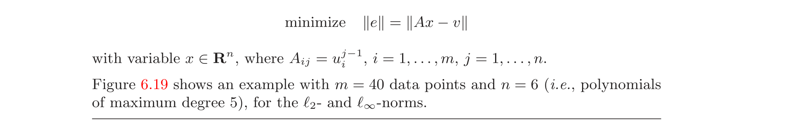
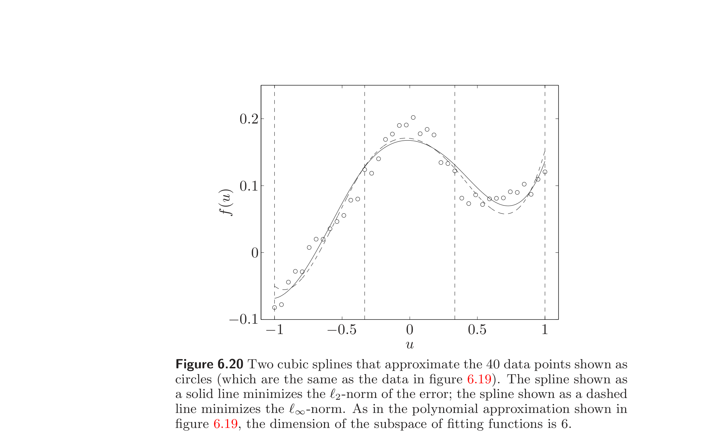
Example 6.8 Spline fitting. Figure 6.20 shows the same data as in example 6.7, and two optimal fits with cubic splines. The interval $[-1, 1]$ is divided into three equal intervals, and we consider piecewise polynomials, with maximum degree 3, with continuous first and second derivatives. The dimension of this subspace of functions is 6, the same as the dimension of polynomials with maximum degree 5, considered in example 6.7.
In the simplest forms of function fitting, we have $m \gg n$, i.e., the number of data points is much larger than the dimension of the subspace of functions. Smoothing is accomplished automatically, since all members of the subspace are smooth.
例 6.8 样条拟合。 图 6.20 显示与例 6.7 相同的数据及两个三次样条最优拟合。区间 $[-1, 1]$ 分为三个等长区间，考虑最大次数 3、有一阶和二阶连续导数的分段多项式。此函数子空间维数为 6，与例 6.7 中最大次数 5 的多项式维数相同。
在最简单的函数拟合形式中，$m \gg n$，即数据点数远大于函数子空间维数。光滑化自动完成，因子空间所有成员都光滑。
Least-norm interpolation
最小范数插值
In another variation of function fitting, we have fewer data points than the dimension of the subspace of functions. In the simplest case, we require that the function we choose must satisfy the interpolation conditions
$$ f(u_i) = y_i, \quad i = 1, \ldots, m, $$
which are linear equality constraints on $x$. Among the functions that satisfy these interpolation conditions, we might seek one that is smoothest, or smallest. These lead to least-norm problems.
In the most general function fitting problem, we can optimize an objective (such as some measure of the error $e$), subject to a variety of convex constraints that represent our prior knowledge of the underlying function.
在函数拟合的另一变体中，数据点数少于函数子空间维数。最简单情形要求所选函数满足插值条件
$$ f(u_i) = y_i, \quad i = 1, \ldots, m, $$
这是 $x$ 的线性等式约束。在满足这些插值条件的函数中，可寻求最光滑或最小的。这导致最小范数问题。
在最一般的函数拟合问题中，可在表示底层函数先验知识的多种凸约束下优化目标（如误差 $e$ 的某度量）。
Interpolation, extrapolation, and bounding
插值、外推与定界
By evaluating the optimal function fit $\hat{f}$ at a point $v$ not in the original data set, we obtain a guess of what the value of the underlying function is, at the point $v$. This is called interpolation when $v$ is between or near the given data points (e.g., $v \in \mathbf{conv}\{v_1, \ldots, v_m\}$), and extrapolation otherwise.
We can also produce an interval in which the value $f(v)$ can lie, by maximizing and minimizing (the linear function) $f(v)$, subject to the constraints. We can use the function fit to help identify faulty data or outliers. Here we might use, for example, an $\ell_1$-norm fit, and look for data points with large errors.
通过在不在原数据集中的点 $v$ 处求最优函数拟合 $\hat{f}$ 的值，得到底层函数在 $v$ 处值的猜测。当 $v$ 在给定数据点之间或附近（如 $v \in \mathbf{conv}\{v_1, \ldots, v_m\}$）时称为插值，否则称为外推。
也可在约束下极大化和极小化（线性函数）$f(v)$ 以产生 $f(v)$ 所在区间。可用函数拟合帮助识别错误数据或离群点。例如可用 $\ell_1$-范数拟合，寻找误差大的数据点。
6.5.4 Sparse descriptions and basis pursuit
6.5.4 稀疏描述与基追踪
In basis pursuit, there is a very large number of basis functions, and the goal is to find a good fit of the given data as a linear combination of a small number of the basis functions. (In this context the function family is linearly dependent, and is sometimes referred to as an over-complete basis or dictionary.) This is called basis pursuit since we are selecting a much smaller basis, from the given over-complete basis, to model the data.
Thus we seek a function $f \in \mathcal{F}$ that fits the data well,
$$ f(u_i) \approx y_i, \quad i = 1, \ldots, m, $$
with a sparse coefficient vector $x$, i.e., $\mathbf{card}(x)$ small. In this case we refer to
$$ f = x_1 f_1 + \cdots + x_n f_n = \sum_{i \in \mathcal{B}} x_i f_i, $$
where $\mathcal{B} = \{i \mid x_i \ne 0\}$ is the set of indices of the chosen basis elements, as a sparse description of the data. Mathematically, basis pursuit is the same as the regressor selection problem (see §6.4), but the interpretation (and scale) of the optimization problem are different.
Sparse descriptions and basis pursuit have many uses. They can be used for de-noising or smoothing, or data compression for efficient transmission or storage of a signal. In data compression, the sender and receiver both know the dictionary, or basis elements. To send a signal to the receiver, the sender first finds a sparse representation of the signal, and then sends to the receiver only the nonzero coefficients (to some precision). Using these coefficients, the receiver can reconstruct (an approximation of) the original signal.
One common approach to basis pursuit is the same as the method for regressor selection described in §6.4, and based on $\ell_1$-norm regularization as a heuristic for finding sparse descriptions. We first solve the convex problem
$$ \text{minimize} \quad \sum_{i=1}^m (f(u_i) - y_i)^2 + \gamma\|x\|_1, \tag{6.18} $$
where $\gamma > 0$ is a parameter used to trade off the quality of the fit to the data, and the sparsity of the coefficient vector. The solution of this problem can be used directly, or followed by a refinement step, in which the best fit is found, using the sparsity pattern of the solution of (6.18). In other words, we first solve (6.18), to obtain $\hat{x}$. We then set $\mathcal{B} = \{i \mid \hat{x}_i \ne 0\}$, i.e., the set of indices corresponding to nonzero coefficients. Then we solve the least-squares problem
$$ \text{minimize} \quad \sum_{i=1}^m (f(u_i) - y_i)^2 $$
with variables $x_i$, $i \in \mathcal{B}$, and $x_i = 0$ for $i \notin \mathcal{B}$.
In basis pursuit and sparse description applications it is not uncommon to have a very large dictionary, with $n$ on the order of $10^4$ or much more. To be effective, algorithms for solving (6.18) must exploit problem structure, which derives from the structure of the dictionary signals.
在基追踪中，基函数数量非常大，目标是用少量基函数的线性组合找到给定数据的良好拟合。（此语境下函数族线性相关，有时称为过完备基或字典。）称为基追踪因从给定过完备基中选取小得多的基来建模数据。
故寻求良好拟合数据的函数 $f \in \mathcal{F}$，
$$ f(u_i) \approx y_i, \quad i = 1, \ldots, m, $$
且系数向量 $x$ 稀疏，即 $\mathbf{card}(x)$ 小。此时称
$$ f = x_1 f_1 + \cdots + x_n f_n = \sum_{i \in \mathcal{B}} x_i f_i, $$
（其中 $\mathcal{B} = \{i \mid x_i \ne 0\}$ 为所选基元素下标集）为数据的稀疏描述。数学上基追踪与回归子选择问题（见 §6.4）相同，但优化问题的解释（和规模）不同。
稀疏描述与基追踪有许多用途。可用于去噪或光滑化，或为信号的高效传输或存储进行数据压缩。在数据压缩中，发送方和接收方都知道字典或基元素。为向接收方发送信号，发送方先找到信号的稀疏表示，然后只发送非零系数（到某精度）。接收方用这些系数重建（逼近）原信号。
基追踪的一种常见方法与 §6.4 描述的回归子选择方法相同，基于 $\ell_1$-范数正则化作为寻找稀疏描述的启发式。先解凸问题
$$ \text{minimize} \quad \sum_{i=1}^m (f(u_i) - y_i)^2 + \gamma\|x\|_1, \tag{6.18} $$
其中 $\gamma > 0$ 为权衡数据拟合质量与系数向量稀疏性的参数。该问题的解可直接使用，或后接精化步骤——用 (6.18) 解的稀疏模式找最佳拟合。即先解 (6.18) 得 $\hat{x}$，然后令 $\mathcal{B} = \{i \mid \hat{x}_i \ne 0\}$（非零系数对应下标集），再解最小二乘问题
$$ \text{minimize} \quad \sum_{i=1}^m (f(u_i) - y_i)^2 $$
变量为 $x_i$（$i \in \mathcal{B}$），且 $i \notin \mathcal{B}$ 时 $x_i = 0$。
在基追踪和稀疏描述应用中，字典非常大、$n$ 达 $10^4$ 量级或更大并不罕见。为有效求解，(6.18) 的算法须利用问题结构，该结构源自字典信号的结构。
Time-frequency analysis via basis pursuit
通过基追踪进行时频分析
In this section we illustrate basis pursuit and sparse representation with a simple example. We consider functions (or signals) on $\mathbb{R}$, with the range of interest $[0, 1]$. We think of the independent variable as time, so we use $t$ (instead of $u$) to denote it.
We first describe the basis functions in the dictionary. Each basis function is a Gaussian sinusoidal pulse, or Gabor function, with form
$$ e^{-(t-\tau)^2/\sigma^2} \cos(\omega t + \phi), $$
where $\sigma > 0$ gives the width of the pulse, $\tau$ is the time of (the center of) the pulse, $\omega \ge 0$ is the frequency, and $\phi$ is the phase angle. All of the basis functions have width $\sigma = 0.05$. The pulse times and frequencies are
$$ \tau = 0.002k, \quad k = 0, \ldots, 500, \qquad \omega = 5k, \quad k = 0, \ldots, 30. $$
For each time $\tau$, there is one basis element with frequency zero (and phase $\phi = 0$), and 2 basis elements (cosine and sine, i.e., phase $\phi = 0$ and $\phi = \pi/2$) for each of 30 remaining frequencies, so all together there are $501 \times 61 = 30561$ basis elements. The basis elements are naturally indexed by time, frequency, and phase (cosine or sine), so we denote them as
$$ f_{\tau, \omega, c}, \quad \tau = 0, 0.002, \ldots, 1, \quad \omega = 0, 5, \ldots, 150, $$
$$ f_{\tau, \omega, s}, \quad \tau = 0, 0.002, \ldots, 1, \quad \omega = 5, \ldots, 150. $$
Three of these basis functions (all with time $\tau = 0.5$) are shown in figure 6.21.
Basis pursuit with this dictionary can be thought of as a time-frequency analysis of the data. If a basis element $f_{\tau, \omega, c}$ or $f_{\tau, \omega, s}$ appears in the sparse representation of a signal (i.e., with a nonzero coefficient), we can interpret this as meaning that the data contains the frequency $\omega$ at time $\tau$.
We will use basis pursuit to find a sparse approximation of the signal
$$ y(t) = a(t) \sin \theta(t) $$
本节用简单例子说明基追踪和稀疏表示。考虑 $\mathbb{R}$ 上的函数（或信号），感兴趣范围为 $[0, 1]$。把自变量视为时间，故用 $t$（而非 $u$）表示。
先描述字典中的基函数。每个基函数是高斯正弦脉冲或 Gabor 函数，形式为
$$ e^{-(t-\tau)^2/\sigma^2} \cos(\omega t + \phi), $$
其中 $\sigma > 0$ 给出脉冲宽度，$\tau$ 为脉冲（中心）时刻，$\omega \ge 0$ 为频率，$\phi$ 为相位角。所有基函数宽度 $\sigma = 0.05$。脉冲时刻和频率为
$$ \tau = 0.002k, \quad k = 0, \ldots, 500, \qquad \omega = 5k, \quad k = 0, \ldots, 30. $$
对每个时刻 $\tau$，有一个频率为零（相位 $\phi = 0$）的基元素，以及 30 个剩余频率各 2 个基元素（余弦和正弦，即相位 $\phi = 0$ 和 $\phi = \pi/2$），故共 $501 \times 61 = 30561$ 个基元素。基元素自然按时间、频率和相位（余弦或正弦）索引，故记为
$$ f_{\tau, \omega, c}, \quad \tau = 0, 0.002, \ldots, 1, \quad \omega = 0, 5, \ldots, 150, $$
$$ f_{\tau, \omega, s}, \quad \tau = 0, 0.002, \ldots, 1, \quad \omega = 5, \ldots, 150. $$
图 6.21 给出其中三个基函数（时刻均为 $\tau = 0.5$）。
用此字典的基追踪可视为数据的时频分析。若基元素 $f_{\tau, \omega, c}$ 或 $f_{\tau, \omega, s}$ 出现在信号的稀疏表示中（即系数非零），可解释为数据在时刻 $\tau$ 含频率 $\omega$。
用基追踪求信号
$$ y(t) = a(t) \sin \theta(t) $$
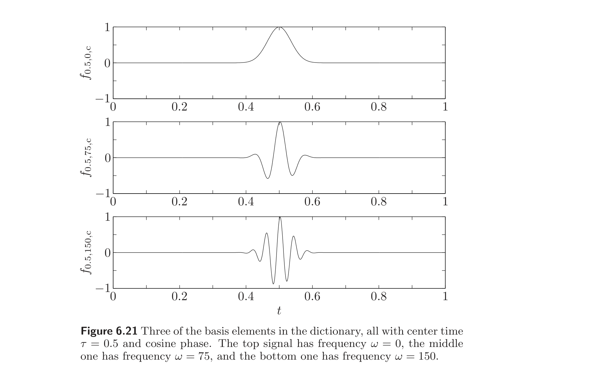
where
$$ a(t) = 1 + 0.5\sin(11t), \quad \theta(t) = 30\sin(5t). $$
(This signal is chosen only because it is simple to describe, and exhibits noticeable changes in its spectral content over time.) We can interpret $a(t)$ as the signal amplitude, and $\theta(t)$ as its total phase. We can also interpret
$$ \omega(t) = \left|\frac{d\theta}{dt}\right| = 150|\cos(5t)| $$
as the instantaneous frequency of the signal at time $t$. The data are given as 501 uniformly spaced samples over the interval $[0, 1]$, i.e., we are given 501 pairs $(t_k, y_k)$ with
$$ t_k = 0.005k, \quad y_k = y(t_k), \quad k = 0, \ldots, 500. $$
We first solve the $\ell_1$-norm regularized least-squares problem (6.18), with $\gamma = 1$. The resulting optimal coefficient vector is very sparse, with only 42 nonzero coefficients out of 30561. We then find the least-squares fit of the original signal using these 42 basis vectors. The result $\hat{y}$ is compared with the original signal $y$ in figure 6.22. The top figure shows the approximated signal (in dashed line) and, almost indistinguishable, the original signal $y(t)$ (in solid line). The bottom figure shows the error $y(t) - \hat{y}(t)$. As is clear from the figure, we have obtained an approximation $\hat{y}$ with a very good relative fit. The relative error is
$$ \frac{(1/501)\sum_{i=1}^{501}(y(t_i) - \hat{y}(t_i))^2}{(1/501)\sum_{i=1}^{501} y(t_i)^2} = 2.6 \times 10^{-4}. $$
By plotting the pattern of nonzero coefficients versus time and frequency, we obtain a time-frequency analysis of the original data. Such a plot is shown in figure 6.23, along with the instantaneous frequency. The plot shows that the nonzero components closely track the instantaneous frequency.
的稀疏逼近，其中
$$ a(t) = 1 + 0.5\sin(11t), \quad \theta(t) = 30\sin(5t). $$
（选此信号仅因描述简单且随时间表现出明显的频谱变化。）可把 $a(t)$ 解释为信号幅度，$\theta(t)$ 为其总相位。也可把
$$ \omega(t) = \left|\frac{d\theta}{dt}\right| = 150|\cos(5t)| $$
解释为信号在时刻 $t$ 的瞬时频率。数据为区间 $[0, 1]$ 上 501 个等距采样，即给定 501 对 $(t_k, y_k)$，
$$ t_k = 0.005k, \quad y_k = y(t_k), \quad k = 0, \ldots, 500. $$
先解 $\ell_1$-范数正则化最小二乘问题 (6.18)（$\gamma = 1$）。所得最优系数向量非常稀疏，30561 个系数中仅 42 个非零。然后用这 42 个基向量求原信号的最小二乘拟合。结果 $\hat{y}$ 与原信号 $y$ 的比较见图 6.22。上图显示逼近信号（虚线）和几乎不可区分的原信号 $y(t)$（实线）。下图显示误差 $y(t) - \hat{y}(t)$。由图可见所得逼近 $\hat{y}$ 相对拟合非常好。相对误差为
$$ \frac{(1/501)\sum_{i=1}^{501}(y(t_i) - \hat{y}(t_i))^2}{(1/501)\sum_{i=1}^{501} y(t_i)^2} = 2.6 \times 10^{-4}. $$
将非零系数模式对时间和频率绘图，得到原数据的时频分析。此图见图 6.23，连同瞬时频率。图显示非零分量紧密跟踪瞬时频率。
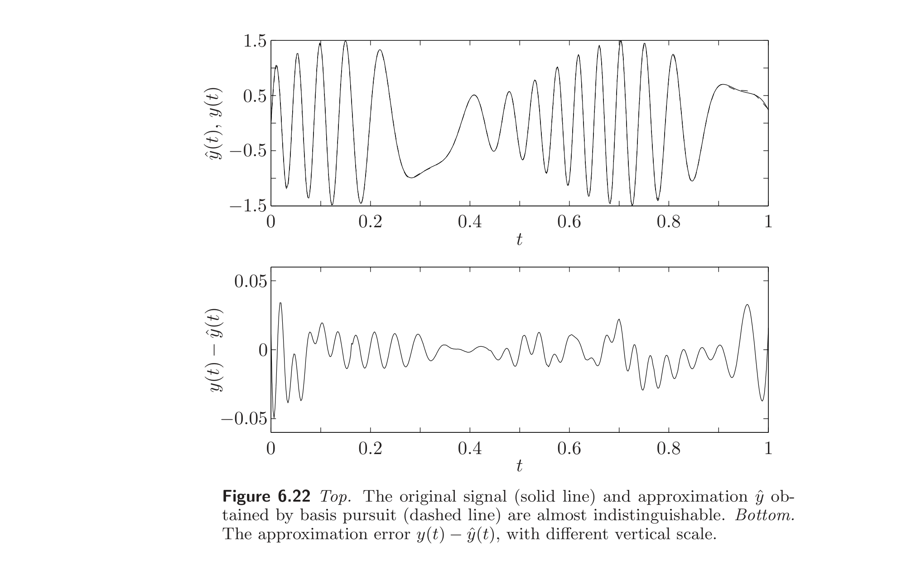
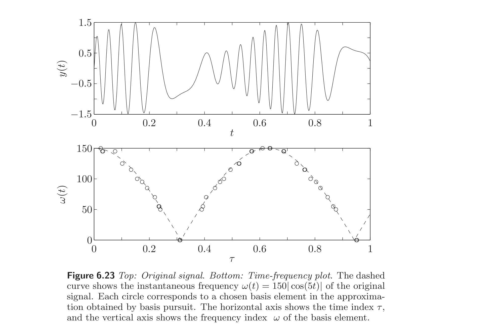
6.5.5 Interpolation with convex functions
6.5.5 用凸函数插值
In some special cases we can solve interpolation problems involving an infinite-dimensional set of functions, using finite-dimensional convex optimization. In this section we describe an example.
We start with the following question: When does there exist a convex function $f : \mathbb{R}^k \to \mathbb{R}$, with $\mathbf{dom}\, f = \mathbb{R}^k$, that satisfies the interpolation conditions
$$ f(u_i) = y_i, \quad i = 1, \ldots, m, $$
at given points $u_i \in \mathbb{R}^k$? (Here we do not restrict $f$ to lie in any finite-dimensional subspace of functions.) The answer is: if and only if there exist $g_1, \ldots, g_m$ such that
$$ y_j \ge y_i + g_i^T(u_j - u_i), \quad i, j = 1, \ldots, m. \tag{6.19} $$
To see this, first suppose that $f$ is convex, $\mathbf{dom}\, f = \mathbb{R}^k$, and $f(u_i) = y_i$, $i = 1, \ldots, m$. At each $u_i$ we can find a vector $g_i$ such that
$$ f(z) \ge f(u_i) + g_i^T(z - u_i) \tag{6.20} $$
for all $z$. If $f$ is differentiable, we can take $g_i = \nabla f(u_i)$; in the more general case, we can construct $g_i$ by finding a supporting hyperplane to $\mathbf{epi}\, f$ at $(u_i, y_i)$. (The vectors $g_i$ are called subgradients.) By applying (6.20) to $z = u_j$, we obtain (6.19).
Conversely, suppose $g_1, \ldots, g_m$ satisfy (6.19). Define $f$ as
$$ f(z) = \max_{i=1,\ldots,m}(y_i + g_i^T(z - u_i)) $$
for all $z \in \mathbb{R}^k$. Clearly, $f$ is a (piecewise-linear) convex function. The inequalities (6.19) imply that $f(u_i) = y_i$, for $i = 1, \ldots, m$.
We can use this result to solve several problems involving interpolation, approximation, or bounding, with convex functions.
某些特殊情形下，可用有限维凸优化求解涉及无穷维函数集的插值问题。本节给出一例。
从如下问题出发：何时存在凸函数 $f : \mathbb{R}^k \to \mathbb{R}$（$\mathbf{dom}\, f = \mathbb{R}^k$）满足插值条件
$$ f(u_i) = y_i, \quad i = 1, \ldots, m, $$
（在给定点 $u_i \in \mathbb{R}^k$ 处）？（此处不限制 $f$ 位于任何有限维函数子空间。）答案是：当且仅当存在 $g_1, \ldots, g_m$ 使得
$$ y_j \ge y_i + g_i^T(u_j - u_i), \quad i, j = 1, \ldots, m. \tag{6.19} $$
为证之，先设 $f$ 凸，$\mathbf{dom}\, f = \mathbb{R}^k$，$f(u_i) = y_i$（$i = 1, \ldots, m$）。在每个 $u_i$ 处可找到向量 $g_i$ 使
$$ f(z) \ge f(u_i) + g_i^T(z - u_i) \tag{6.20} $$
对所有 $z$ 成立。若 $f$ 可微，取 $g_i = \nabla f(u_i)$；更一般情形可在 $(u_i, y_i)$ 处找 $\mathbf{epi}\, f$ 的支撑超平面构造 $g_i$。（向量 $g_i$ 称为次梯度。）将 (6.20) 应用于 $z = u_j$ 得 (6.19)。
反之，设 $g_1, \ldots, g_m$ 满足 (6.19)。定义 $f$ 为
$$ f(z) = \max_{i=1,\ldots,m}(y_i + g_i^T(z - u_i)) $$
（对所有 $z \in \mathbb{R}^k$）。显然 $f$ 是（分段线性）凸函数。不等式 (6.19) 蕴含 $f(u_i) = y_i$（$i = 1, \ldots, m$）。
可用此结果求解涉及凸函数的若干插值、逼近或定界问题。
Fitting a convex function to given data
用凸函数拟合给定数据
Perhaps the simplest application is to compute the least-squares fit of a convex function to given data $(u_i, y_i)$, $i = 1, \ldots, m$:
$$ \text{minimize} \quad \sum_{i=1}^m (y_i - f(u_i))^2 \quad \text{subject to} \quad f : \mathbb{R}^k \to \mathbb{R} \text{ is convex}, \; \mathbf{dom}\, f = \mathbb{R}^k. $$
This is an infinite-dimensional problem, since the variable is $f$, which is in the space of continuous real-valued functions on $\mathbb{R}^k$. Using the result above, we can formulate this problem as
$$ \text{minimize} \quad \sum_{i=1}^m (y_i - \hat{y}_i)^2 \quad \text{subject to} \quad \hat{y}_j \ge \hat{y}_i + g_i^T(u_j - u_i), \quad i, j = 1, \ldots, m, $$
which is a QP with variables $\hat{y} \in \mathbb{R}^m$ and $g_1, \ldots, g_m \in \mathbb{R}^k$. The optimal value of this problem is zero if and only if the given data can be interpolated by a convex function, i.e., if there is a convex function that satisfies $f(u_i) = y_i$. An example is shown in figure 6.24.
最简单的应用也许是计算凸函数对给定数据 $(u_i, y_i)$（$i = 1, \ldots, m$）的最小二乘拟合：
$$ \text{minimize} \quad \sum_{i=1}^m (y_i - f(u_i))^2 \quad \text{subject to} \quad f : \mathbb{R}^k \to \mathbb{R} \text{ 凸}, \; \mathbf{dom}\, f = \mathbb{R}^k. $$
这是无穷维问题，因变量 $f$ 在 $\mathbb{R}^k$ 上连续实值函数空间中。用上述结果，可把问题表述为
$$ \text{minimize} \quad \sum_{i=1}^m (y_i - \hat{y}_i)^2 \quad \text{subject to} \quad \hat{y}_j \ge \hat{y}_i + g_i^T(u_j - u_i), \quad i, j = 1, \ldots, m, $$
这是以 $\hat{y} \in \mathbb{R}^m$ 和 $g_1, \ldots, g_m \in \mathbb{R}^k$ 为变量的 QP。该问题最优值为零当且仅当给定数据可用凸函数插值，即存在满足 $f(u_i) = y_i$ 的凸函数。例子见图 6.24。
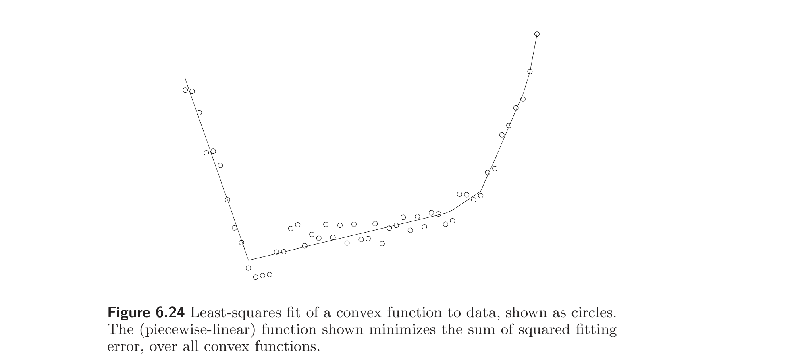
Bounding values of an interpolating convex function
插值凸函数值的定界
As another simple example, suppose that we are given data $(u_i, y_i)$, $i = 1, \ldots, m$, which can be interpolated by a convex function. We would like to determine the range of possible values of $f(u_0)$, where $u_0$ is another point in $\mathbb{R}^k$, and $f$ is any convex function that interpolates the given data. To find the smallest possible value of $f(u_0)$ we solve the LP
$$ \text{minimize} \quad y_0 \quad \text{subject to} \quad y_j \ge y_i + g_i^T(u_j - u_i), \quad i, j = 0, \ldots, m, $$
which is an LP with variables $y_0 \in \mathbb{R}$, $g_0, \ldots, g_m \in \mathbb{R}^k$. By maximizing $y_0$ (which is also an LP) we find the largest possible value of $f(u_0)$ for a convex function that interpolates the given data.
作为另一简单例子，设给定数据 $(u_i, y_i)$（$i = 1, \ldots, m$）可用凸函数插值。希望确定 $f(u_0)$ 的可能取值范围，其中 $u_0$ 为 $\mathbb{R}^k$ 中另一点，$f$ 为插值给定数据的任一凸函数。为求 $f(u_0)$ 的最小可能值，解 LP
$$ \text{minimize} \quad y_0 \quad \text{subject to} \quad y_j \ge y_i + g_i^T(u_j - u_i), \quad i, j = 0, \ldots, m, $$
这是以 $y_0 \in \mathbb{R}$、$g_0, \ldots, g_m \in \mathbb{R}^k$ 为变量的 LP。极大化 $y_0$（也是 LP）即得插值给定数据的凸函数的 $f(u_0)$ 最大可能值。
Interpolation with monotone convex functions
用单调凸函数插值
As an extension of convex interpolation, we can consider interpolation with a convex and monotone nondecreasing function. It can be shown that there exists a convex function $f : \mathbb{R}^k \to \mathbb{R}$, with $\mathbf{dom}\, f = \mathbb{R}^k$, that satisfies the interpolation conditions
$$ f(u_i) = y_i, \quad i = 1, \ldots, m, $$
and is monotone nondecreasing (i.e., $f(u) \ge f(v)$ whenever $u \succeq v$), if and only if there exist $g_1, \ldots, g_m \in \mathbb{R}^k$, such that
$$ g_i \succeq 0, \quad i = 1, \ldots, m, $$
$$ y_j \ge y_i + g_i^T(u_j - u_i), \quad i, j = 1, \ldots, m. \tag{6.21} $$
In other words, we add to the convex interpolation conditions (6.19), the condition that the subgradients $g_i$ are all nonnegative. (See exercise 6.12.)
作为凸插值的推广，可考虑用凸且单调非减函数插值。可证存在凸函数 $f : \mathbb{R}^k \to \mathbb{R}$（$\mathbf{dom}\, f = \mathbb{R}^k$）满足插值条件
$$ f(u_i) = y_i, \quad i = 1, \ldots, m, $$
且单调非减（即 $u \succeq v$ 时 $f(u) \ge f(v)$），当且仅当存在 $g_1, \ldots, g_m \in \mathbb{R}^k$ 使得
$$ g_i \succeq 0, \quad i = 1, \ldots, m, $$
$$ y_j \ge y_i + g_i^T(u_j - u_i), \quad i, j = 1, \ldots, m. \tag{6.21} $$
换言之，在凸插值条件 (6.19) 上加次梯度 $g_i$ 全非负的条件。（见习题 6.12。）
Bounding consumer preference
消费者偏好的定界
As an application, we consider a problem of predicting consumer preferences. We consider different baskets of goods, consisting of different amounts of $n$ consumer goods. A goods basket is specified by a vector $x \in [0, 1]^n$ where $x_i$ denotes the amount of consumer good $i$. We assume the amounts are normalized so that $0 \le x_i \le 1$, i.e., $x_i = 0$ is the minimum and $x_i = 1$ is the maximum possible amount of good $i$. Given two baskets of goods $x$ and $\tilde{x}$, a consumer can either prefer $x$ to $\tilde{x}$, or prefer $\tilde{x}$ to $x$, or consider $x$ and $\tilde{x}$ equally attractive. We consider one model consumer, whose choices are repeatable.
We model consumer preference in the following way. We assume there is an underlying utility function $u : \mathbb{R}^n \to \mathbb{R}$, with domain $[0, 1]^n$; $u(x)$ gives a measure of the utility derived by the consumer from the goods basket $x$. Given a choice between two baskets of goods, the consumer chooses the one that has larger utility, and will be ambivalent when the two baskets have equal utility. It is reasonable to assume that $u$ is monotone nondecreasing. This means that the consumer always prefers to have more of any good, with the amounts of all other goods the same. It is also reasonable to assume that $u$ is concave. This models satiation, or decreasing marginal utility as we increase the amount of goods.
Now suppose we are given some consumer preference data, but we do not know the underlying utility function $u$. Specifically, we have a set of goods baskets $a_1, \ldots, a_m \in [0, 1]^n$, and some information about preferences among them:
$$ u(a_i) > u(a_j) \text{ for } (i, j) \in \mathcal{P}, \quad u(a_i) \ge u(a_j) \text{ for } (i, j) \in \mathcal{P}_{\text{weak}}, \tag{6.22} $$
where $\mathcal{P}, \mathcal{P}_{\text{weak}} \subseteq \{1, \ldots, m\} \times \{1, \ldots, m\}$ are given. Here $\mathcal{P}$ gives the set of known preferences: $(i, j) \in \mathcal{P}$ means that basket $a_i$ is known to be preferred to basket $a_j$. The set $\mathcal{P}_{\text{weak}}$ gives the set of known weak preferences: $(i, j) \in \mathcal{P}_{\text{weak}}$ means that basket $a_i$ is preferred to basket $a_j$, or that the two baskets are equally attractive.
We first consider the following question: How can we determine if the given data are consistent, i.e., whether or not there exists a concave nondecreasing utility function $u$ for which (6.22) holds? This is equivalent to solving the feasibility problem
$$ \text{find} \quad u \quad \text{subject to} \quad u : \mathbb{R}^n \to \mathbb{R} \text{ concave and nondecreasing} $$
$$ u(a_i) > u(a_j), \quad (i, j) \in \mathcal{P} $$
$$ u(a_i) \ge u(a_j), \quad (i, j) \in \mathcal{P}_{\text{weak}}, \tag{6.23} $$
with the function $u$ as the (infinite-dimensional) optimization variable. Since the constraints in (6.23) are all homogeneous, we can express the problem in the equivalent form
$$ \text{find} \quad u \quad \text{subject to} \quad u : \mathbb{R}^n \to \mathbb{R} \text{ concave and nondecreasing} $$
$$ u(a_i) \ge u(a_j) + 1, \quad (i, j) \in \mathcal{P} $$
$$ u(a_i) \ge u(a_j), \quad (i, j) \in \mathcal{P}_{\text{weak}}, \tag{6.24} $$
which uses only nonstrict inequalities. (It is clear that if $u$ satisfies (6.24), then it must satisfy (6.23); conversely, if $u$ satisfies (6.23), then it can be scaled to satisfy (6.24).) This problem, in turn, can be cast as a (finite-dimensional) linear programming feasibility problem, using the interpolation result on page 339:
$$ \text{find} \quad u_1, \ldots, u_m, g_1, \ldots, g_m \quad \text{subject to} \quad g_i \succeq 0, \quad i = 1, \ldots, m $$
$$ u_j \le u_i + g_i^T(a_j - a_i), \quad i, j = 1, \ldots, m $$
$$ u_i \ge u_j + 1, \quad (i, j) \in \mathcal{P} $$
$$ u_i \ge u_j, \quad (i, j) \in \mathcal{P}_{\text{weak}}. \tag{6.25} $$
By solving this linear programming feasibility problem, we can determine whether there exists a concave, nondecreasing utility function that is consistent with the given sets of strict and nonstrict preferences. If (6.25) is feasible, there is at least one such utility function (and indeed, we can construct one that is piecewise-linear, from a feasible $u_1, \ldots, u_m, g_1, \ldots, g_m$). If (6.25) is not feasible, we can conclude that there is no concave increasing utility function that is consistent with the given sets of strict and nonstrict preferences.
As an example, suppose that $\mathcal{P}$ and $\mathcal{P}_{\text{weak}}$ are consumer preferences that are known to be consistent with at least one concave increasing utility function. Consider a pair $(k, l)$ that is not in $\mathcal{P}$ or $\mathcal{P}_{\text{weak}}$, i.e., consumer preference between baskets $k$ and $l$ is not known. In some cases we can conclude that a preference holds between basket $k$ and $l$, even without knowing the underlying preference function. To do this we augment the known preferences (6.22) with the inequality $u(a_k) \le u(a_l)$, which means that basket $l$ is preferred to basket $k$, or they are equally attractive. We then solve the feasibility linear program (6.25), including the extra weak preference $u(a_k) \le u(a_l)$. If the augmented set of preferences is infeasible, it means that any concave nondecreasing utility function that is consistent with the original given consumer preference data must also satisfy $u(a_k) > u(a_l)$. In other words, we can conclude that basket $k$ is preferred to basket $l$, without knowing the underlying utility function.
作为应用，考虑预测消费者偏好的问题。考虑不同商品篮，含不同数量的 $n$ 种消费品。商品篮由向量 $x \in [0, 1]^n$ 表示，$x_i$ 表示消费品 $i$ 的数量。设数量归一化使 $0 \le x_i \le 1$，即 $x_i = 0$ 为最小、$x_i = 1$ 为商品 $i$ 的最大可能量。给定两商品篮 $x$ 和 $\tilde{x}$，消费者可偏好 $x$ 甚于 $\tilde{x}$，或偏好 $\tilde{x}$ 甚于 $x$，或认为两者同样有吸引力。考虑一个选择可重复的模型消费者。
如下建模消费者偏好。假设存在底层效用函数 $u : \mathbb{R}^n \to \mathbb{R}$，定义域 $[0, 1]^n$；$u(x)$ 度量消费者从商品篮 $x$ 获得的效用。在两商品篮间选择时，消费者选效用大者，两篮效用相等时无差异。合理假设 $u$ 单调非减。这意味着在其他商品数量不变时，消费者总偏好任一商品更多。也合理假设 $u$ 凹。这建模饱和性，即随商品量增加边际效用递减。
现设给定一些消费者偏好数据，但不知底层效用函数 $u$。具体有商品篮集 $a_1, \ldots, a_m \in [0, 1]^n$ 及其间偏好的信息：
$$ u(a_i) > u(a_j) \text{（对 } (i, j) \in \mathcal{P} \text{）}, \quad u(a_i) \ge u(a_j) \text{（对 } (i, j) \in \mathcal{P}_{\text{weak}} \text{）}, \tag{6.22} $$
其中 $\mathcal{P}, \mathcal{P}_{\text{weak}} \subseteq \{1, \ldots, m\} \times \{1, \ldots, m\}$ 给定。$\mathcal{P}$ 给出已知偏好集：$(i, j) \in \mathcal{P}$ 表示篮 $a_i$ 已知优于篮 $a_j$。$\mathcal{P}_{\text{weak}}$ 给出已知弱偏好集：$(i, j) \in \mathcal{P}_{\text{weak}}$ 表示篮 $a_i$ 优于篮 $a_j$，或两篮同样有吸引力。
先考虑如下问题：如何判断给定数据是否一致，即是否存在使 (6.22) 成立的凹非减效用函数 $u$？这等价于解可行性问题
$$ \text{find} \quad u \quad \text{subject to} \quad u : \mathbb{R}^n \to \mathbb{R} \text{ 凹且非减} $$
$$ u(a_i) > u(a_j), \quad (i, j) \in \mathcal{P} $$
$$ u(a_i) \ge u(a_j), \quad (i, j) \in \mathcal{P}_{\text{weak}}, \tag{6.23} $$
以函数 $u$ 为（无穷维）优化变量。因 (6.23) 中约束皆齐次，可将问题表为等价形式
$$ \text{find} \quad u \quad \text{subject to} \quad u : \mathbb{R}^n \to \mathbb{R} \text{ 凹且非减} $$
$$ u(a_i) \ge u(a_j) + 1, \quad (i, j) \in \mathcal{P} $$
$$ u(a_i) \ge u(a_j), \quad (i, j) \in \mathcal{P}_{\text{weak}}, \tag{6.24} $$
只用非严格不等式。（显然若 $u$ 满足 (6.24) 则必满足 (6.23)；反之若 $u$ 满足 (6.23) 则可缩放使满足 (6.24)。）此问题进而可用第 339 页插值结果化为（有限维）线性规划可行性问题：
$$ \text{find} \quad u_1, \ldots, u_m, g_1, \ldots, g_m \quad \text{subject to} \quad g_i \succeq 0, \quad i = 1, \ldots, m $$
$$ u_j \le u_i + g_i^T(a_j - a_i), \quad i, j = 1, \ldots, m $$
$$ u_i \ge u_j + 1, \quad (i, j) \in \mathcal{P} $$
$$ u_i \ge u_j, \quad (i, j) \in \mathcal{P}_{\text{weak}}. \tag{6.25} $$
解此线性规划可行性问题，可判断是否存在与给定严格和非严格偏好集一致的凹、非减效用函数。若 (6.25) 可行，至少存在一个这样的效用函数（且确实可从可行 $u_1, \ldots, u_m, g_1, \ldots, g_m$ 构造一个分段线性的）。若 (6.25) 不可行，可断定不存在与给定严格和非严格偏好集一致的凹增效用函数。
举例，设 $\mathcal{P}$ 和 $\mathcal{P}_{\text{weak}}$ 为已知与至少一个凹增效用函数一致的消费者偏好。考虑不在 $\mathcal{P}$ 或 $\mathcal{P}_{\text{weak}}$ 中的对 $(k, l)$，即篮 $k$ 和 $l$ 间的消费者偏好未知。某些情形下即使不知底层偏好函数，也可断定篮 $k$ 和 $l$ 间存在偏好。为此，用不等式 $u(a_k) \le u(a_l)$（表示篮 $l$ 优于篮 $k$ 或二者同等）增广已知偏好 (6.22)。然后解可行性线性规划 (6.25)，加入额外弱偏好 $u(a_k) \le u(a_l)$。若增广偏好集不可行，则任何与原给定消费者偏好数据一致的凹非减效用函数必也满足 $u(a_k) > u(a_l)$。换言之，可在不知底层效用函数的情况下断定篮 $k$ 优于篮 $l$。
Example 6.9 Here we give a simple numerical example that illustrates the discussion above. We consider baskets of two goods (so we can easily plot the goods baskets). To generate the consumer preference data $\mathcal{P}$, we compute 40 random points in $[0, 1]^2$, and then compare them using the utility function
$$ u(x_1, x_2) = (1.1 x_1^{1/2} + 0.8 x_2^{1/2})/1.9. $$
These goods baskets, and a few level curves of the utility function $u$, are shown in figure 6.25.
We now use the consumer preference data (but not, of course, the true utility function $u$) to compare each of these 40 goods baskets to the basket $a_0 = (0.5, 0.5)$. For each original basket $a_i$, we solve the linear programming feasibility problem described above, to see if we can conclude that basket $a_0$ is preferred to basket $a_i$. Similarly, we check whether we can conclude that basket $a_i$ is preferred to basket $a_0$. For each basket $a_i$, there are three possible outcomes: we can conclude that $a_0$ is definitely preferred to $a_i$, that $a_i$ is definitely preferred to $a_0$, or (if both LP feasibility problems are feasible) that no conclusion is possible. (Here, definitely preferred means that the preference holds for any concave nondecreasing utility function that is consistent with the original given data.)
We find that 21 of the baskets are definitely rejected in favor of $(0.5, 0.5)$, and 14 of the baskets are definitely preferred. We cannot make any conclusion, from the consumer preference data, about the remaining 5 baskets. These results are shown in figure 6.26. Note that goods baskets below and to the left of $(0.5, 0.5)$ will definitely be rejected in favor of $(0.5, 0.5)$, using only the monotonicity property of the utility function, and similarly, those points that are above and to the right of $(0.5, 0.5)$ must be preferred. So for these 17 points, there is no need to solve the feasibility LP (6.25). Classifying the 23 points in the other two quadrants, however, requires the concavity assumption, and solving the feasibility LP (6.25).
例 6.9 此处给一个简单数值例子说明上述讨论。考虑两商品篮（便于绘制商品篮）。为生成消费者偏好数据 $\mathcal{P}$，在 $[0, 1]^2$ 中计算 40 个随机点，然后用效用函数
$$ u(x_1, x_2) = (1.1 x_1^{1/2} + 0.8 x_2^{1/2})/1.9 $$
比较。这些商品篮及效用函数 $u$ 的几条等值线见图 6.25。
现用消费者偏好数据（当然不用真实效用函数 $u$）将这 40 个商品篮各自与篮 $a_0 = (0.5, 0.5)$ 比较。对每个原篮 $a_i$，解上述线性规划可行性问题，看能否断定篮 $a_0$ 优于篮 $a_i$。类似地检查能否断定篮 $a_i$ 优于篮 $a_0$。对每个篮 $a_i$，有三种可能结果：可断定 $a_0$ 必优于 $a_i$、$a_i$ 必优于 $a_0$，或（若两个 LP 可行性问题都可行）无法下结论。（此处"必优于"指对任何与原给定数据一致的凹非减效用函数偏好都成立。）
发现 21 个篮必被 $(0.5, 0.5)$ 否决，14 个篮必为更优。其余 5 个篮从消费者偏好数据无法下结论。结果见图 6.26。注意 $(0.5, 0.5)$ 下方和左方的商品篮仅用效用函数的单调性即可断定必被 $(0.5, 0.5)$ 否决，类似地 $(0.5, 0.5)$ 上方和右方的点必为更优。故这 17 点无需解可行性 LP (6.25)。但分类另两象限的 23 点需凹性假设并解可行性 LP (6.25)。
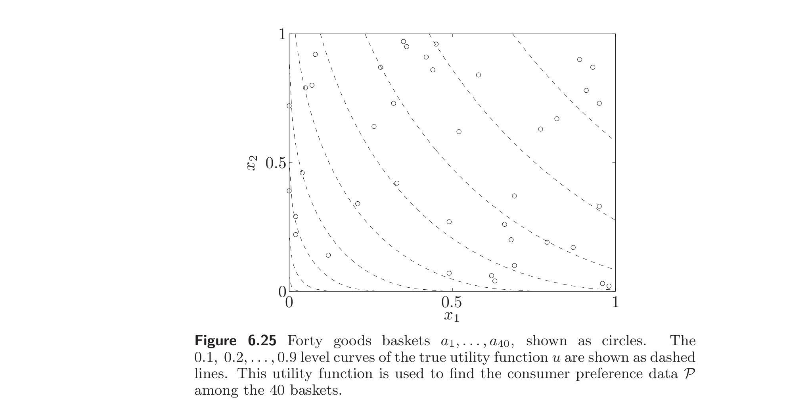
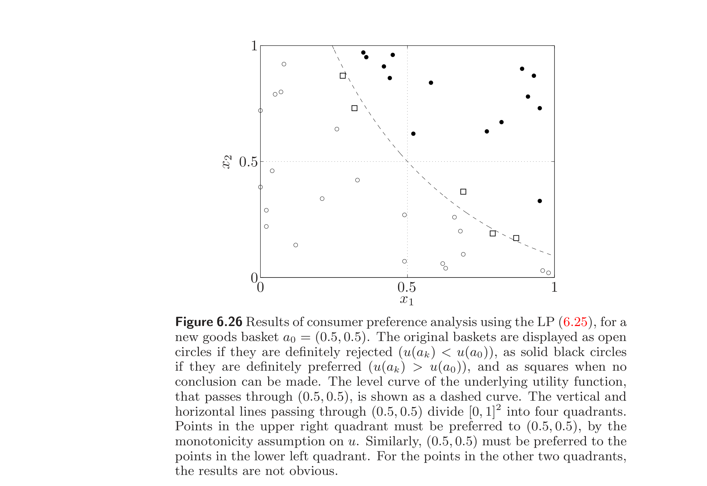
Bibliography
参考文献
The robustness properties of approximations with different penalty functions were analyzed by Huber [Hub64, Hub81], who also proposed the penalty function (6.4). The log-barrier penalty function arises in control theory, where it is applied to the system closed-loop frequency response, and has several names, e.g., central $H_\infty$, or risk-averse control; see Boyd and Barratt [BB91] and the references therein.
Regularized approximation is covered in many books, including Tikhonov and Arsenin [TA77] and Hansen [Han98]. Tikhonov regularization is sometimes called ridge regression (Golub and Van Loan [GL89, page 564]). Least-squares approximation with $\ell_1$-norm regularization is also known under the name lasso (Tibshirani [Tib96]). Other least-squares regularization and regressor selection techniques are discussed and compared in Hastie, Tibshirani, and Friedman [HTF01, §3.4].
Total variation denoising was introduced for image reconstruction by Rudin, Osher, and Fatemi [ROF92].
The robust least-squares problem with norm bounded uncertainty (page 321) was introduced by El Ghaoui and Lebret [EL97], and Chandrasekaran, Golub, Gu, and Sayed [CGGS98]. El Ghaoui and Lebret also give the SDP formulation of the robust least-squares problem with structured uncertainty (page 323).
Chen, Donoho, and Saunders [CDS01] discuss basis pursuit via linear programming. They refer to the $\ell_1$-norm regularized problem (6.18) as basis pursuit denoising. Meyer and Pratt [MP68] is an early paper on the problem of bounding utility functions.
不同罚函数下逼近的鲁棒性质由 Huber [Hub64, Hub81] 分析，他还提出了罚函数 (6.4)。对数障碍罚函数出现在控制论中，应用于系统闭环频率响应，有若干名称，如中心 $H_\infty$ 或风险规避控制；见 Boyd 和 Barratt [BB91] 及其参考文献。
正则化逼近在许多书中涉及，包括 Tikhonov 和 Arsenin [TA77] 及 Hansen [Han98]。Tikhonov 正则化有时称为岭回归（Golub 和 Van Loan [GL89, 第 564 页]）。带 $\ell_1$-范数正则化的最小二乘逼近也以 lasso 之名为人所知（Tibshirani [Tib96]）。其他最小二乘正则化和回归子选择技术在 Hastie、Tibshirani 和 Friedman [HTF01, §3.4] 中讨论比较。
全变分去噪由 Rudin、Osher 和 Fatemi [ROF92] 为图像重建引入。
具范数界不确定性的鲁棒最小二乘问题（第 321 页）由 El Ghaoui 和 Lebret [EL97] 及 Chandrasekaran、Golub、Gu 和 Sayed [CGGS98] 引入。El Ghaoui 和 Lebret 还给出了具结构不确定性的鲁棒最小二乘问题的 SDP 表述（第 323 页）。
Chen、Donoho 和 Saunders [CDS01] 讨论了通过线性规划进行基追踪。他们将 $\ell_1$-范数正则化问题 (6.18) 称为基追踪去噪。Meyer 和 Pratt [MP68] 是关于效用函数定界问题的早期论文。